FLUX persona-in-template ad generation
A scored characterization of a LoRA + ControlNet conditioning scheme — how identity fidelity trades against the spatial structure (canny, depth and pose) of a creative ad template.
Summary
Question: A Low-Rank Adaptation (LoRA) trained on a person’s images (persona-LoRA) controls the persona’s identity fidelity in images generated by a base model like FLUX.1-dev, while a ControlNet guided by a control image controls their spatial structure. Applied together, do the two conflict, what does each trade, and which conditioning strengths are optimal?
Design:
Conditioning: FLUX.1-dev with a persona-LoRA and a ControlNet conditioned on the template. Five configurations vary, the guidance scale (gs), the LoRA scale (ls) and the canny, depth and pose scales (cs, ds, ps), plus the seed; the three ControlNet scales are the control modes and their total the conditioning sum.
Scoring: Identity fidelity is scored by a face-similarity service against held-out reference photographs, 0–100 (face_sim); template adherence compares the image with the template on edges (canny_f1), depth (depth_corr) and pose (pose_sim).
Search: Two branches, one per ControlNet implementation, the Union-Pro ControlNet and the FLUX.1 Control LoRA (control-LoRA), in stages, each a set of configuration grids (sweeps) scored and refined before the next; twenty-one sweeps, 2,716 images, nine personas and 21 templates in all. Every score is compared with measured floors, ceilings and seed noise.
Findings: All but the last group are about the Union-Pro ControlNet.
Guidance and LoRA scales:
Guidance changes both axes in the same direction, frozen at 6: Identity increases and template adherence is preserved or increases until 6, and most of the step-to-7 gains do not clear the seed noise (Section 6.1).
No strong evidence for a LoRA scale other than the trained 1.0, frozen there: Increasing it decreases identity and edge fidelity together, and every change inside the refinements is inside its seed noise (Section 6.1).
Conditioning mode: canny alone:
The scale induces the trade-off; the optimal grid is cs ≈ 0.40: Increasing it decreases identity and increases template adherence in every stage; at 0.40 identity is still usable and the structure scores stop increasing beyond seed noise (Section 6.1, Section 6.9).
A higher scale increases seed noise on identity and suppresses it on depth and pose: At cs 0.60 only four of ten seeds retain the usable 80 face_sim (Section 6.2).
One value is not suitable for every persona-LoRA: The same step increases structure for all six but decreases identity unevenly, from none to a large loss, so a set of values selected on the measured scores carries forward (Section 6.3).
Conditioning mode: canny with depth:
The optimal grid is the frozen quadrant, which persists across personas and templates and cannot be restricted to one cell: With both scales at 0.25 or 0.30 (frozen quadrant), the per-sum mean identity stays usable at every conditioning sum and every persona-LoRA and template retains the trade-off’s direction; further restriction to one cell alone fails the structure floors on about half of fifteen templates (Section 6.5).
The frozen quadrant ends one step before an identity cliff, at or below the floor of the model card’s recommended range: Inside the quadrant identity decreases moderately and past it collapses (identity cliff), by an amount that varies across persona-LoRAs and cannot be predicted from their identity before it. The quadrant with gs 6 and ls 1.0 (frozen configuration) retains identity for four of six persona-LoRAs; two decrease inside it (Section 6.9).
The template sets the absolute depth and pose scores; on any mode depth_corr is the weakest discriminator: In the frozen quadrant templates are further apart on pose_sim than the conditioning sum changes it; depth_corr’s small floor-to-ceiling span makes it a tie breaker only (Section 6.10).
Conditioning mode: canny, depth and pose:
- The optimal grid is the conditioning sum band 0.80–0.85: The pose scale is at 0.5–0.6 and the other two at most 0.25 each; identity stays usable on all six templates while three are under a structure floor (Section 6.6).
The control-LoRA against Union-Pro:
- Guidance changes neither axis; on Union-Pro it increased both (Section 6.8).
- The canny trade-off recurs, past a threshold and with diminishing return, and the mean identity does not collapse at high canny scale, though single images do (Section 6.8).
- At the same identity it retains more structure, with the steeper trade-off lines on the structure scores, but persona, template set and implementation change together between the branches, so the difference is not attributed to the implementation (Section 6.8.2).
Limits:
- Single-seed findings hold as direction, not size: Four depend on one seed or on differences inside the seed noise: the guidance and LoRA-scale freezes, the fifteen-template cell check and the identity cliff, whose per-persona cells are single-seed. The rest is replicated across seeds and clear of its seed noise (Section 7).
- Cross-persona identity gaps are partly the face model’s: The reference sets differ in source and quality across personas, so per-persona claims depend on within-persona contrasts, not on statements about the people photographed.
- Cross-branch comparisons are shape comparisons only: The second branch conditions through a control-LoRA rather than a ControlNet, so its canny scale values do not compare with Union-Pro’s.
1 Research question
FLUX.1-dev is a text-to-image model: it generates an image from a prompt. A prompt can describe a person’s age, ethnicity, gender and other characteristics, but cannot reproduce the identity of a particular person; it can name a pose, standing, sitting or walking, but fine-grained control over spatial structure is beyond it.
A persona-LoRA trained on a specific person’s images solves the first problem: applied to the base model, it makes the generated person’s identity match the person trained on. It is also known as a subject, identity or character LoRA. Identity fidelity is whether the image retains the persona’s likeness.
A ControlNet solves the second problem: an auxiliary network trained on structural properties (conditioning controls) extracted from images, canny edges, depth maps or pose skeletons. At generation the controls from a control image accompany the prompt and the ControlNet injects its representations into the base model, so spatial structure follows the control image and appearance follows the prompt. Template adherence is whether the generated image retains the ad template’s edge, depth and pose layout.
The product goal: replace the person in an existing creative ad template with a persona-LoRA’s persona and retain the rest, pose, composition and scene. LoRA [1] adds a learned identity to a frozen diffusion model; ControlNet [2], its multi-condition successors [3], [4] and the FLUX.1 control-LoRAs [5] add spatial conditioning. None reports the two applied together, identity against structure across seeds, which this study measures.
The research question: applied together, do the two conflict, what does each conditioning trade, and which conditioning-strength values, or sets of values, are optimal? The study answers it in seven stages containing twenty-one parameter-grid sweeps, each scored on both axes, each stage freezing configurations for the next. Optimal here means the knee of the trade-off that satisfies both stopping rules (Section 5.10); every such set is a position on the trade-off, not a point free of it.
All prompts reinforce the template, none conflicts with it, so prompt adherence is not a third axis and the trade-off is between identity and structure.
2 Recent work
Two ad-creative systems set the context. AdBooster [6] outpaints a background around a fixed product image with Stable Diffusion, retaining the product pixels and selecting the scene from the user’s shopping interests; CG4CTR [7] generates ad creatives with Stable Diffusion inpainting in online experiments on a commercial ad platform and ranks them by predicted click-through rate from a reward model trained on observed clicks and impressions.
Identity also has zero-shot methods that take a reference photograph at generation instead of training weights: IP-Adapter [8] (decoupled cross-attention), PhotoMaker [9] (stacked identity embedding), InstantID [10] (face-embedding module plus an identity ControlNet) and PuLID [11] (contrastive alignment loss). On PuLID’s SDXL benchmark the identity-fidelity scores are 0.755 for InstantID, 0.722 for PuLID, 0.597 for IP-Adapter and 0.271 for PhotoMaker [11].
Against a persona-LoRA they compare on four axes. Identity: from one reference the strongest reach a fidelity InstantID reports as competitive with a LoRA [10]; a persona-LoRA learns from several and carries the face across angles. Compatibility with spatial control: each is an extra network with its own strength beside the ControlNet’s, whereas a persona-LoRA adds nothing at generation, so only the ControlNet’s strength is swept. Image quality: the injection-path methods show an AI-generated skin texture and oversaturation that a LoRA does not [12], and PuLID-FLUX trades image quality and prompt-following for fidelity [13]. Effort: a LoRA needs a training set and a training pass per persona, the zero-shot methods one image, or a few for PhotoMaker, and one forward pass. This study uses a persona-LoRA for compatibility and quality; its nine personas are trained once and reused across 2,716 images.
DreamBooth [14], whole-model subject fine-tuning, is the training objective behind most persona-LoRAs; the choice is one of form. On its benchmark the two forms reach the same subject fidelity, a DINO score of 0.614 against 0.613 on Stable Diffusion [15], with the LoRA training a small fraction of the parameters. The full-model form yields a base-model-sized checkpoint per persona, has no identity scale and cannot load beside a control-LoRA, so the LoRA form is used.
3 Methodology
3.1 Personas
The study uses nine persona-LoRAs, pf1–pf8 and pm1 (persona-female, persona-male). Personas pf1–pf8 are trained on well-known people, two of them on the same person, for research only: no generated image is published or used in an advertisement, the people are not identified, and no consent for commercial use of their identity is sought or implied; an advertisement would need it under right-of-publicity law.
3.2 ControlNets
Two ControlNet implementations are used. The Union-Pro ControlNet [4] is a single model carrying seven control modes, of which this study uses canny, depth and pose. The Black Forest Labs control-LoRA [5] is a LoRA rather than a separate network: it is loaded alongside the persona-LoRA in one pipeline, and it ships in canny and depth variants, of which only the canny one, FLUX.1-Canny-dev-lora, is used here.
3.3 Templates
The 21 templates are creative ad templates for fashion, product and lifestyle, each showing a male or female model posing with a product, coded tf1–tf15 and tm1–tm6 (template-female, template-male) by the subject’s gender. Each has a paired prompt describing its scene and product and naming the subject’s gender, so persona and template are matched: female personas with female templates, the male persona with male templates.
3.4 Reference data
Identity fidelity is assessed against a reference set: six reference photographs per persona, none used in training, every one with a clearly visible face across a range of events and lighting.
- Candidates were collected from openly licensed and press sources, machine-clustered for identity, frontality-filtered, cropped to 1024×1024 at 2.2× the detected face box, and reviewed by manual inspection.
3.5 Prompt set
Each paired prompt is followed by a photorealism suffix. Some of the examples are:
female facing front, posing while holding credit card in the left hand, a photorealistic photo, 8k, hi resfemale posing with coffee mug in the left hand, a photorealistic photo, 8k, hi resmale facing front, posing sideways while eating ice cream from a small cup with a spoon in the left hand, a photorealistic photo, 8k, hi res, plain background
A persona-LoRA needs its trigger word at generation only if its training used one. Five personas do (pf1, pf2, pf3, pf5 and pm1), and the generator supplies it by substituting the trigger word for the word female or male in the template prompt.
3.6 Scoring
3.6.1 Identity fidelity scoring
face_sim is scored by AWS Rekognition, a commercial face-similarity service.
Each image of a persona is scored against its six reference photographs in one call with the match threshold set to 0, so every reference photograph returns a similarity [16]. The reported face_sim value is their mean.
\text{face\_sim}_m = \frac{1}{6} \sum_{j \in S_P} s(m, j) \tag{1}
where s(m, j) is the similarity returned for image m and reference photograph j, and S_P is the reference set of the image’s persona P.
An image whose face the detector cannot find returns no match and is scored 0. 14 of the 2,716 scored rows had this issue.
3.6.2 Template adherence scoring
- Edge fidelity: Measured by canny_f1, an F1 score. Edge maps are extracted from template and generation [17] and matched with a small dilation tolerance.
- Depth-layout agreement: Measured by depth_corr. Monocular depth is estimated from both images by Depth Anything V2 [18] and compared by Pearson r, which is invariant to the scale and shift a monocular estimate is only defined up to.
- Pose similarity: Measured by pose_sim. Body keypoints are detected in both images by YOLO11n-pose [19] and scored by an object keypoint similarity in the Common Objects in Context (COCO) form with COCO’s per-joint sigmas [20], at half the COCO tolerance and with the person’s box area as the scale.
- An image in which the pose detector finds no person, or fewer than four joints in common with the template, has no pose_sim and is left out of every pose_sim mean; 5 of the 2,716 scored rows are such.
The three are cycle-consistency measurements: they re-extract from the output the controls the ControlNet consumed [2] and ask how much of the template’s structure persisted. This is the standard controllability measure of the ControlNet literature: ControlNet reports mean intersection over union (mIoU) between re-extracted and input segmentation maps, and Uni-ControlNet compares re-extracted edges, depth and pose to the input condition [2], [3].
3.7 Score Calibration: working ranges, seed noise, floors and ceilings
Three anchors are compared against the spread of the study’s own scores: the seed noise, the floors and the ceilings (Figure 1).
3.7.1 The calibration quantities
| Quantity | What it is | Used for | Details |
|---|---|---|---|
| Working range | The 5th to 95th percentile of a score over all images | The span the anchors are compared against | Section 11.1 |
| sd_seed | The pooled sd of a score across the seeds of one set of images that differ only by seed (seed group), at one conditioning value | The benchmark for every difference | Section 11.2.1 |
| sd_mean | The sd_seed a single-seed mean borrows, divided by the square root of its images | Judging single-seed differences | Section 11.2.2 |
| ci_mean | The bootstrap interval of a multi-seed mean | The bars on multi-seed charts | Section 11.2.3 |
| ci_return | The Fieller interval of a return | Whether a trade is resolved | Section 11.2.4 |
| Identity floor and ceiling | The impostor and genuine scores of the reference photographs | The measurable range of face_sim | Section 11.3.1 |
| Structure floors and ceilings | A template against unrelated generations and against itself | The first stopping rule | Section 11.3.2 |
| Resolvable difference | The smallest effect a seed count can detect | The seeds needed per cell | Section 11.4 |
| Variance share | What each factor explains beyond the others | Ranking the factors | Section 11.5 |
| Second identity scorer | ArcFace repeated on every face_sim comparison | Showing identity does not depend on one scorer | Section 11.6 |
3.7.2 Seed noise and the inside-the-noise rule
The seed-noise terms are defined in Table 1 above.
A difference \Delta between two single-seed means at c_0 and c_1 has sd \sqrt{\text{sd}_{\text{mean}}(c_0)^2 + \text{sd}_{\text{mean}}(c_1)^2}, \sqrt{2}\ \text{sd}_{\text{mean}} when the two are equal; it is inside the noise when it is under two sds of that:
\lvert\Delta\rvert < 2\sqrt{\text{sd}_{\text{mean}}(c_0)^2 + \text{sd}_{\text{mean}}(c_1)^2} \tag{2}
3.7.3 Floors and ceilings
| Score | Floor, mean | Floor, 90th percentile | Floor, highest | Ceiling, lowest | Ceiling, mean |
|---|---|---|---|---|---|
| face_sim | 2.9 | 4.1 | 52.2 | 87.9 | 99.3 |
| canny_f1 | 0.189 | 0.277 | 0.540 | 1.000 | 1.000 |
| depth_corr | 0.337 | 0.554 | 0.675 | 1.000 | 1.000 |
| pose_sim | 0.063 | 0.156 | 0.464 | 1.000 | 1.000 |
A score under its floor is in the range where an unrelated image, or a different person’s reference photograph, can score; the ceiling is what a genuine comparison reaches.
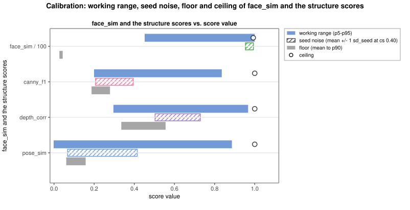
3.7.4 Second identity scorer
The second identity scorer, arcface_sim, orders 288 of 315 pairs of conditioning values the same way as face_sim, and the Spearman rank correlation of the two scores over the 2,690 images both score is 0.90 (Section 11.6).
3.8 Common config
| Configuration | Value |
|---|---|
| Base model | FLUX.1-dev, run under diffusers [21] |
| Resolution | 1024×1024 |
| Prompt | Template prompt + photorealism suffix, with the trigger word substituted where the persona-LoRA’s training used one |
| Inference steps | 24 |
| Scheduler | FlowMatchEulerDiscreteScheduler |
4 Execution Plan
A sweep varies a few configurations, the rest held at values earlier stages froze, over a grid of cells, one per combination of the varied values; a cell’s score is the mean over every image generated at it. Each stage freezes one or more of its varied configurations for every later stage; every cell enters a reported mean.
The search ran as two branches: six stages and 19 sweeps on Union-Pro, one stage and 2 sweeps on the control-LoRA.
| Branch | Stage | Sweep Id |
Sweep variables |
Images | Persona | Template | Seed | gs | ls | cs | ds | ps |
|---|---|---|---|---|---|---|---|---|---|---|---|---|
| Union | U1 | U1.a | gs, ls, cs | 27 | pf1 | tf4 | 33 | 1, 3, 5 | 0.8, 1, 1.2 | 0.3, 0.5, 0.7 | — | — |
| U1.b | gs, ls, cs | 27 | pf1 | tf4 | 33 | 2, 4, 6 | 0.9, 1.1, 1.3 | 0.4, 0.6, 0.8 | — | — | ||
| U1.c | gs, ls, cs | 27 | pf1 | tf4 | 33 | 4, 5, 6 | 0.9, 1, 1.1 | 0.35, 0.4, 0.45 | — | — | ||
| U1.d | gs, ls, cs | 27 | pf1 | tf4 | 33 | 5, 6, 7 | 0.95, 1, 1.05 | 0.39, 0.41, 0.43 | — | — | ||
| U1.e | gs, cs | 24 | pf1 | tf4 | 33 | 5, 5.5, 6 | 1 | 0.4, 0.41, .. 0.47 | — | — | ||
| U2 | U2.a | s, cs | 33 | pf1 | tf4 | 6, 15, .. 96 | 6 | 1 | 0.4, 0.41, 0.42 | — | — | |
| U2.b | s, cs | 50 | pf1 | tf4 | 1, 2, .. 10 | 6 | 1 | 0.4, 0.45, .. 0.6 | — | — | ||
| U3 | U3 | pf, s, cs | 120 | pf1–pf6 | tf4 | 1, 3, .. 9 | 6 | 1 | 0.4, 0.45, .. 0.55 | — | — | |
| U4 | U4 | pf, cs, ds | 54 | pf1–pf6 | tf4 | 1 | 6 | 1 | 0.25, 0.3, 0.35 | 0.25, 0.3, 0.35 | — | |
| U5 | U5.a | pf, tf, s, cs, ds | 720 | pf1–pf6 | tf4–tf6 tf8–tf9 tf13 |
1, 2, .. 5 | 6 | 1 | 0.25, 0.3 | 0.25, 0.3 | — | |
| U5.b | pf, tf | 105 | pf1–pf5 pf7–pf8 |
tf1–tf15 | 1 | 6 | 1 | 0.25 | 0.3 | — | ||
| U6 | U6.a | cs, ds, ps | 54 | pm1 | tm1 | 1 | 6 | 1 | 0.1, 0.2, 0.3 | 0.1, 0.2, 0.3 | 0.1, 0.2, .. 0.6 | |
| U6.b | cs, ds, ps | 21 | pm1 | tm1 | 1 | 6 | 1 | 0.2, 0.3, 0.4 | 0.2, 0.3, 0.4 | 0.5, 0.6, 0.7 | ||
| U6.c | cs, ds, ps | 24 | pm1 | tm1 | 1 | 6 | 1 | 0.1, 0.3, 0.5 | 0.1, 0.3, 0.5 | 0.5, 0.7, 0.9 | ||
| U6.d | cs, ds, ps | 31 | pm1 | tm1 | 1 | 6 | 1 | 0.05, 0.2, .. 0.5 | 0.05, 0.2, .. 0.5 | 0.5, 0.7 | ||
| U6.e | tm, cs, ds, ps | 88 | pm1 | tm1–tm2 | 1 | 6 | 1 | 0.05, 0.15, .. 0.35 | 0.05, 0.15, .. 0.35 | 0.5, 0.6, 0.7 | ||
| U6.f | tm, cs, ds, ps | 37 | pm1 | tm1–tm2 | 1 | 6 | 1 | 0.05, 0.15, 0.25 | 0.05, 0.15, 0.25 | 0.5, 0.6, 0.7 | ||
| U6.g | tm, cs, ds, ps | 66 | pm1 | tm1–tm6 | 1 | 6 | 1 | 0.05, 0.15, 0.25 | 0.05, 0.15, 0.25 | 0.5, 0.55, 0.6 | ||
| U6.h | tm, s, cs, ds, ps | 144 | pm1 | tm1–tm6 | 1, 2, 3 | 6 | 1 | 0.05, 0.15, 0.25 | 0.05, 0.15, 0.25 | 0.5, 0.55, 0.6 | ||
| control-LoRA | C1 | C1.a | tm, s, gs, cs | 630 | pm1 | tm1–tm6 | 1, 2, 3 | 6, 8, .. 14 | 1 | 0.31, 0.41, .. 0.91 | — | — |
| C1.b | pf, tf, s, cs | 525 | pf1–pf5 pf7–pf8 |
tf1–tf5 | 1, 2, 3 | 10 | 1 | 0.7, 0.75, .. 0.9 | — | — |
The columns:
- Branch: One per ControlNet implementation, Union and control-LoRA. The scale values have different units on the two, so cross-ControlNet comparisons use their shapes instead of their values.
- Stage: The Union branch’s stages are named U1–U6 and the control-LoRA branch’s C1.
- Sweep Id: A sweep id is its stage code followed by an alphabetical count within the stage; the stages contain between one and eight sweeps each (Table 4).
- Sweep variables: The configurations varied in the sweep, in column order; pf/pm is the persona, tf/tm the template and s the seed.
- Images: How many images the sweep analysed.
- Persona, Template, Seed, gs, ls, cs, ds, ps: The value(s) used: the persona(s), template(s) and seed(s), then the guidance, LoRA, canny, depth and pose scale value(s).
Table conventions:
- Repeated values: Branch and Stage are written once per group, blank on the rows beneath.
- Bold font: That configuration is varied in that sweep.
- Green font: The value was frozen by an earlier stage; U5.b’s cell is one cell of the frozen quadrant. The seed is noise, not a configuration, so a single seed is never green.
- Numeric value lists: Full when there are ≤ 3, otherwise the first two and the last, v1, v2, .. vn.
- Em dash: That configuration was not active in that sweep.
5 Design
Separability: A staged search is valid only if the configurations frozen early do not interact strongly with those swept later. Nothing guarantees that, so the ledger at the end states, for each configuration, the separability assumption it relies on and the sweep that checks it; configurations suspected of interacting were swept together, hence canny and depth share one two-dimensional grid (screen). The values each configuration takes are in Table 4.
5.1 Persona
Which trained identity the persona-LoRA carries.
Values: One persona-LoRA, pf1, carries the search while the scales are located; six take over once there is a shape to validate across persona-LoRAs; and pm1 alone carries the three-mode stage and C1.a.
5.2 Template
The creative ad template the ControlNet conditions on.
Values: One template, tf4, is used through U4 so the scale sweeps are comparable; U5 opens to six and then the full female set, and U6 introduces the male set.
5.3 Seed
Not a configuration but the noise the configurations are measured against.
Values: Seven sweeps vary the seed, at three resolutions: widely spaced in U2.a, consecutive in U2.b, a few elsewhere; the other fourteen generate one seed per cell. Of the single-seed sweeps, the two that decide cells are repeated on more seeds: U4’s quadrant in U5.a and U6.g’s band cells in U6.h.
- Multi-seed sweeps: U2.a, U2.b, U3, U5.a, U6.h, C1.a and C1.b
- Single-seed sweeps: U1.a to U1.e, U4, U5.b and U6.a to U6.g
5.4 Guidance scale (gs)
FLUX.1-dev is guidance-distilled: the guidance scale is an input the model was trained to take in place of the classifier-free guidance weight, and no unconditional pass runs at inference [22]. Higher values follow the prompt more strongly, as they would under classifier-free guidance.
Values: U1’s two coarse grids interleave rather than repeat, from near-unguided to strong guidance across the model’s shipped default [22], and its refinements tighten on the top of that range; C1.a, on the control-LoRA, runs past every Union-Pro value, as the control-LoRAs’ providers recommend higher guidance.
5.5 LoRA scale (ls)
The LoRA scale controls the persona-LoRA’s contribution at generation time.
Values: The trained scale is 1.0; the coarse grids bracket it and the refinements tighten around it.
5.6 Canny scale (cs)
The canny scale is the primary ControlNet scale and the search’s main axis.
Values: Varied in nearly every sweep, it is walked down from the coarse grids to the quadrant with the step shrinking twentyfold: coarse-to-fine spacing places cells where the response changes, not where it is flat [23]. U2.b retains the wide grid while seeds vary, U4 re-centres it downward once depth carries part of the conditioning, and U6 walks it down again with pose added.
5.7 Depth scale (ds)
The depth scale sets the strength of the second control mode.
Values: No sweep before U4 conditions on depth. U4’s grid brackets the hypothesis that two control modes each need roughly half the single-mode scale: canny alone reaches its high structure scores near cs 0.6 in U2.b, so the joint grid centres both scales near 0.3; U5 retains that quadrant, and U6 sweeps depth again alongside canny and pose.
5.8 Pose scale (ps)
The pose scale sets how strongly the template’s pose skeleton conditions generation; it is the one configuration only the last Union stage, U6, conditions on.
Values: Swept inside U6 only, jointly with cs and ds.
5.9 Summary ledger
| Configuration | Interacts with conditioning strength? | How handled | Check |
|---|---|---|---|
| persona | Yes — persona-LoRAs respond differently | Shared ControlNet scales for every persona, from U3 onward | Per-persona face_sim quantifies the identity loss it imposes on each persona-LoRA |
| template | Yes — sets the absolute level | Frozen at tf4 to U4, opened at U5.a | Every U5.a template retains the direction; template spread exceeds between-cell differences on pose_sim |
| seed | Noise, not a configuration | Varied in seven sweeps; a single-seed cell supports a claim only beyond two sds of a difference (Equation 2) | sd_seed measured by the lending sweep: U2 for U1, U5.a for U4 and U5.b, U6.h for U6.a–g |
| gs | Not measured; the same direction on both axes from the bottom of each U1 sweep to the top | Frozen at 6.0 after U1 | U1.d and U1.e, inside U1: most of the step-to-7 gains do not clear the seed noise; none after it on Union (C1.a’s gs 6–14 is the other ControlNet implementation) |
| ls | Direction only: canny_f1 and face_sim decrease together, every change inside the seed noise but U1.b’s whole-range canny_f1 decrease, 0.49 → 0.39 | Frozen at 1.0 after U1 | Flat face_sim across 0.9–1.1 in U1.c and 0.95–1.05 in U1.d, within one canny range; no optimum resolved |
| cs | It is that strength | No pruning before the freeze: swept coarse to fine through U4, held to U4’s quadrant in U5.a and frozen in U5.b, reopened in U6 with pose | Trade-off reproduced on C1.a, past a threshold |
| ds | Yes — jointly with cs | Absorbed into the 2-D U4 grid, swept again in U6 | Measured, not assumed |
| ps | Yes, where available | Measured in U6 only, on one persona | U6.h across six templates and three seeds; none on the female personas (accepted gap) |
5.10 Stopping rules and evidence tiers
Two rules bound the search:
- Structure floors: A cell whose canny_f1, depth_corr or pose_sim mean is under the floor (Section 11.3.2) has not retained the template, whatever its identity.
- The usable line: A cell whose face_sim mean is under the usable 80 has not retained the persona, whatever its structure.
A configuration is retained where both rules pass, and the trade-off is measured only inside that region.
Every sweep carries an evidence tier under its plan row:
- Single-seed: One seed per cell, every change measured against the seed noise borrowed from the nearest multi-seed sweep.
- Replicated: Several seeds per cell.
Neither tier is confirmatory in the sense of a hypothesis fixed before the data: an adaptive search is exploratory throughout [24], [25]. The Summary’s Limits name the single-seed findings.
6 Results
Blue marks a change clear of its seed noise or with an interval excluding zero; red, dotted one inside its seed noise or with an interval including zero.
6.1 The U1 stage: Guidance, LoRA and canny scales on one persona
Question: With one persona on one template: which of guidance scale, LoRA scale and canny scale changes identity fidelity and template adherence, in which direction, and where is the usable region?
Below we show U1.a in full. The full details of U1.b to U1.e are in Section 9.1, and the decision takes all of them into account.
6.1.1 U1.a — the first half of the coarse grid: higher guidance scale improves both axes; higher canny scale results in a trade-off
| Branch | Stage | Sweep Id |
Sweep variables |
Images | Persona | Template | Seed | gs | ls | cs | ds | ps |
|---|---|---|---|---|---|---|---|---|---|---|---|---|
| Union | U1 | U1.a | gs, ls, cs | 27 | pf1 | tf4 | 33 | 1, 3, 5 | 0.8, 1, 1.2 | 0.3, 0.5, 0.7 | — | — |
- Evidence: Single-seed, one seed per cell; every change is measured against the seed noise borrowed from U2, its two seed sweeps pooled.
| gs | ls | cs | face_sim | canny_f1 | depth_corr | pose_sim |
|---|---|---|---|---|---|---|
| 1 | 0.8 | 0.3 | 39.5 | 0.24 | 0.53 | 0.00 |
| 1 | 0.8 | 0.5 | 0.0 | 0.21 | 0.64 | 0.36 |
| 1 | 0.8 | 0.7 | 0.0 | 0.38 | 0.93 | 0.45 |
| 1 | 1 | 0.3 | 43.1 | 0.25 | 0.74 | 0.38 |
| 1 | 1 | 0.5 | 0.0 | 0.19 | 0.63 | 0.36 |
| 1 | 1 | 0.7 | 0.0 | 0.34 | 0.93 | 0.44 |
| 1 | 1.2 | 0.3 | 73.5 | 0.24 | 0.76 | 0.38 |
| 1 | 1.2 | 0.5 | 0.0 | 0.19 | 0.64 | 0.36 |
| 1 | 1.2 | 0.7 | 0.0 | 0.29 | 0.91 | 0.54 |
| 3 | 0.8 | 0.3 | 98.4 | 0.21 | 0.60 | 0.24 |
| 3 | 0.8 | 0.5 | 21.3 | 0.32 | 0.76 | 0.42 |
| 3 | 0.8 | 0.7 | 3.7 | 0.67 | 0.92 | 0.72 |
| 3 | 1 | 0.3 | 92.7 | 0.21 | 0.51 | 0.30 |
| 3 | 1 | 0.5 | 10.1 | 0.30 | 0.76 | 0.46 |
| 3 | 1 | 0.7 | 3.0 | 0.62 | 0.92 | 0.72 |
| 3 | 1.2 | 0.3 | 96.4 | 0.26 | 0.72 | 0.31 |
| 3 | 1.2 | 0.5 | 6.0 | 0.16 | 0.73 | 0.49 |
| 3 | 1.2 | 0.7 | 3.0 | 0.54 | 0.91 | 0.72 |
| 5 | 0.8 | 0.3 | 97.5 | 0.23 | 0.66 | 0.23 |
| 5 | 0.8 | 0.5 | 66.6 | 0.34 | 0.68 | 0.47 |
| 5 | 0.8 | 0.7 | 10.2 | 0.65 | 0.93 | 0.70 |
| 5 | 1 | 0.3 | 98.6 | 0.23 | 0.68 | 0.22 |
| 5 | 1 | 0.5 | 67.0 | 0.32 | 0.70 | 0.45 |
| 5 | 1 | 0.7 | 3.4 | 0.62 | 0.93 | 0.72 |
| 5 | 1.2 | 0.3 | 96.7 | 0.22 | 0.68 | 0.25 |
| 5 | 1.2 | 0.5 | 23.1 | 0.25 | 0.77 | 0.45 |
| 5 | 1.2 | 0.7 | 4.9 | 0.59 | 0.91 | 0.72 |
| factor | value | n | face_sim | canny_f1 | depth_corr | pose_sim |
|---|---|---|---|---|---|---|
| gs | 1 | 9 | 17.4 | 0.256 | 0.745 | 0.364 |
| gs | 3 | 9 | 37.2 | 0.366 | 0.761 | 0.487 |
| gs | 5 | 9 | 52.0 | 0.383 | 0.771 | 0.468 |
| ls | 0.8 | 9 | 37.5 | 0.362 | 0.740 | 0.400 |
| ls | 1 | 9 | 35.3 | 0.340 | 0.755 | 0.450 |
| ls | 1.2 | 9 | 33.7 | 0.303 | 0.781 | 0.469 |
| cs | 0.3 | 9 | 81.8 | 0.231 | 0.653 | 0.258 |
| cs | 0.5 | 9 | 21.6 | 0.251 | 0.701 | 0.424 |
| cs | 0.7 | 9 | 3.1 | 0.523 | 0.922 | 0.637 |
6.1.1.1 Guidance scale
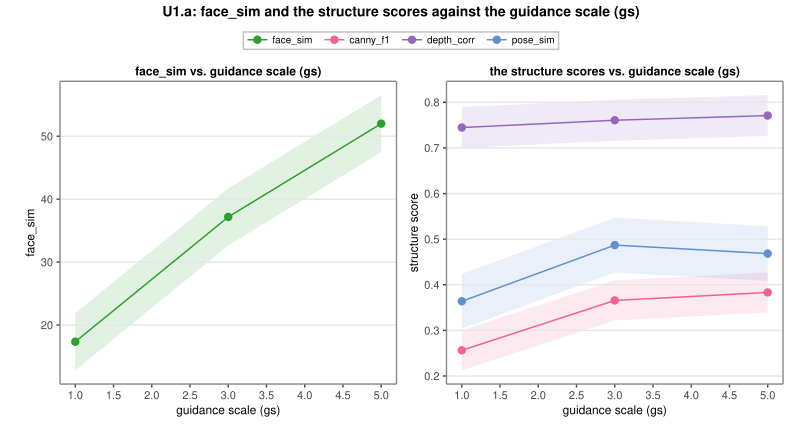
- Identity and template adherence increase together, higher is better: Increasing gs 1 → 3 → 5 triples face_sim and increases canny_f1 by half, while depth_corr and pose_sim change, so there is no trade-off and the higher gs value is selected.
6.1.1.2 LoRA scale
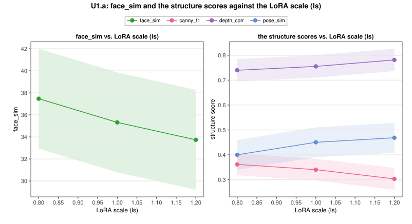
- Mixed results, neither direction from 1.0 is preferred:
- Increasing ls 0.8 → 1.0 → 1.2 decreases face_sim a few points and canny_f1 a few hundredths while depth_corr and pose_sim increase, so the refinements converge towards 1.0.
6.1.1.3 Canny scale
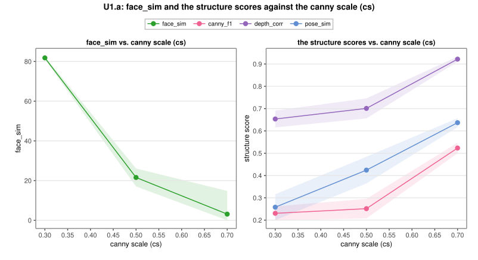
- Identity decreases as each of the structure scores increases significantly: the trade-off:
- Increasing cs 0.3 → 0.5 collapses face_sim while each of the structure scores changes: identity lost well under the usable 80, so the refinement stays inside this range.
- Increasing cs 0.5 → 0.7 decreases face_sim further and increases each of the structure scores: template adherence increases only here.
6.1.1.4 The structure scores against face_sim, as the canny scale increases
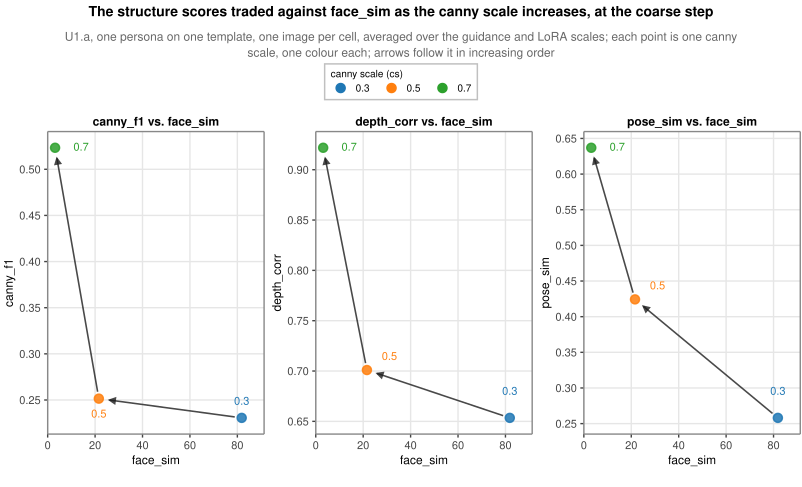
- The coarse step loses identity before it gains structure, so the usable region is under cs 0.5:
- Changing cs 0.3 → 0.5, face_sim decreases 81.8 → 21.6 while canny_f1 and depth_corr change by a few hundredths and pose_sim increases 0.26 → 0.42.
- Changing cs 0.5 → 0.7, each of the structure scores increases, canny_f1 the most, 0.25 → 0.52, with identity already lost.
- The step is too wide to locate the region, which U1.c refines around cs 0.4.
6.1.2 U1 decision
- Guidance scale — both axes change in the same direction; frozen at 6: In every sweep increasing gs increased face_sim and increased or preserved canny_f1, pose_sim never decreasing beyond a few hundredths, so the higher value is taken wherever its gain clears the seed noise. 7 was the top of the range tried between U1.a and U1.e, but most of its gains did not clear the seed noise, so 6 was frozen as its gain did clear.
- LoRA scale — every change inside its seed noise but one; frozen at 1.0: In the coarse grids, ls < 1.0 gives slightly higher face_sim and canny_f1 and ls > 1.0 slightly lower, a decrease in both as ls increases that is inside the seed noise at every step, only U1.b’s whole-range canny_f1 decrease clear of the seed noise, while the refinements around 1.0 change nothing, so there is no clear evidence for any value other than 1.0.
- Canny scale — identity decreases as the structure increases; cs ≈ 0.4 is the optimal grid for canny alone and is carried forward: In every sweep increasing cs decreased face_sim while increasing canny_f1, in the coarse grids each of the structure scores increased, which indicates a trade-off. Past cs 0.40 identity decreases in every sweep, and across the last refinements, 0.39–0.47, the structure scores no longer increase clear of the seed noise; no positive return interval excludes zero, so 0.40 is carried forward on that pattern.
U2 next measures how much of U1’s canny evidence is seed noise before cs ≈ 0.40 is carried forward.
6.2 The U2 stage: Testing the seed robustness
Question: How much of what U1 measured is seed noise rather than configuration, and does the answer depend on where in the canny range the cell is?
6.2.1 U2.a — Seed variation exceeds the canny scale effect
| Branch | Stage | Sweep Id |
Sweep variables |
Images | Persona | Template | Seed | gs | ls | cs | ds | ps |
|---|---|---|---|---|---|---|---|---|---|---|---|---|
| Union | U2 | U2.a | s, cs | 33 | pf1 | tf4 | 6, 15, .. 96 | 6 | 1 | 0.4, 0.41, 0.42 | — | — |
- Seed: {6, 15, 24, 33, 42, 51, 60, 69, 78, 87, 96}
- Evidence: Replicated, 11 seeds per cell.
| cs | seeds | n | face_sim | sd | canny_f1 | sd | depth_corr | sd | pose_sim | sd |
|---|---|---|---|---|---|---|---|---|---|---|
| 0.4 | 11 | 11 | 98.1 | 2.5 | 0.294 | 0.110 | 0.626 | 0.122 | 0.207 | 0.153 |
| 0.41 | 11 | 11 | 97.8 | 2.9 | 0.304 | 0.111 | 0.605 | 0.118 | 0.231 | 0.151 |
| 0.42 | 11 | 11 | 96.1 | 8.8 | 0.304 | 0.098 | 0.618 | 0.136 | 0.285 | 0.132 |
6.2.1.1 Canny scale
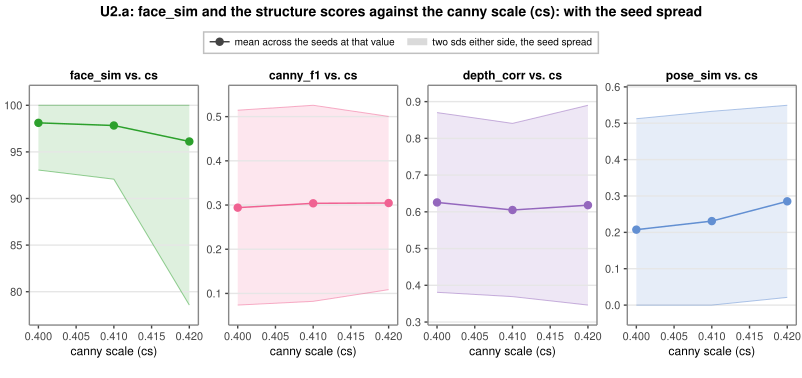
- Seed noise dominates the canny scale on every score:
- Across cs 0.40 → 0.42 the three means span at most a third of their two-sd threshold on every score, so no canny value can be shown better than another.
6.2.2 U2.b — wider canny grid: higher cs stabilises depth and pose and destabilises identity fidelity
| Branch | Stage | Sweep Id |
Sweep variables |
Images | Persona | Template | Seed | gs | ls | cs | ds | ps |
|---|---|---|---|---|---|---|---|---|---|---|---|---|
| Union | U2 | U2.b | s, cs | 50 | pf1 | tf4 | 1, 2, .. 10 | 6 | 1 | 0.4, 0.45, .. 0.6 | — | — |
- Seed: {1, 2, 3, 4, 5, 6, 7, 8, 9, 10}
- cs: {0.4, 0.45, 0.5, 0.55, 0.6}
- Evidence: Replicated, 10 seeds per cell.
| cs | seeds | n | face_sim | sd | canny_f1 | sd | depth_corr | sd | pose_sim | sd |
|---|---|---|---|---|---|---|---|---|---|---|
| 0.4 | 10 | 10 | 99.5 | 0.3 | 0.299 | 0.075 | 0.665 | 0.097 | 0.174 | 0.193 |
| 0.45 | 10 | 10 | 98.8 | 0.7 | 0.373 | 0.094 | 0.740 | 0.099 | 0.335 | 0.222 |
| 0.5 | 10 | 10 | 88.4 | 13.6 | 0.466 | 0.131 | 0.794 | 0.135 | 0.516 | 0.180 |
| 0.55 | 10 | 10 | 76.0 | 29.4 | 0.622 | 0.094 | 0.909 | 0.080 | 0.624 | 0.091 |
| 0.6 | 10 | 10 | 58.1 | 35.1 | 0.746 | 0.070 | 0.947 | 0.035 | 0.696 | 0.060 |
6.2.2.1 Canny scale
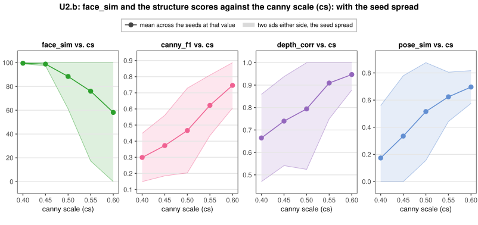
- The gains in the structure scores persist under seed stress; the identity value does not: Across cs 0.40 → 0.60 each of the structure scores’ change is well clear of its seed noise; face_sim’s decrease is marginally clear.
- Identity’s seed noise grows as depth’s and pose’s shrinks; canny’s does neither: Negligible at cs 0.40 and 0.45, face_sim’s seed noise then widens to tens of points, while canny_f1’s ends about where it started and depth_corr’s and pose_sim’s shrink to about a third of their width; every seed is usable at 0.40 and 0.45, four of ten at 0.60.
- cs 0.40 and 0.45 persist under seed stress, from 0.50 upward no value does: From cs 0.50 upward face_sim’s seed noise is wider than the step between neighbouring canny values, so a single-seed sweep, judged against this borrowed noise, cannot resolve neighbouring values there.
6.2.3 U2 decision
Two consequences follow from the seed noise above cs 0.45:
- every claim that depends on a single seed needs stress-testing on several, so where a later decision depends on canny values in that region the sweep generates several seeds;
- the low end of the canny range is preferred for a second reason: identity is not merely lower at high cs, it becomes more volatile.
6.3 The U3 stage: Six personas with canny conditioning
Question: Does one conditioning strength serve six different persona-LoRAs, does each persona need its own, or does neither apply?
| Branch | Stage | Sweep Id |
Sweep variables |
Images | Persona | Template | Seed | gs | ls | cs | ds | ps |
|---|---|---|---|---|---|---|---|---|---|---|---|---|
| Union | U3 | U3 | pf, s, cs | 120 | pf1–pf6 | tf4 | 1, 3, .. 9 | 6 | 1 | 0.4, 0.45, .. 0.55 | — | — |
- Seed: {1, 3, 5, 7, 9}
- cs: {0.4, 0.45, 0.5, 0.55}
- Evidence: Replicated, 5 seeds per cell.
| factor | value | n | face_sim | canny_f1 | depth_corr | pose_sim |
|---|---|---|---|---|---|---|
| cs | 0.4 | 30 | 96.3 | 0.286 | 0.635 | 0.169 |
| cs | 0.45 | 30 | 94.0 | 0.314 | 0.640 | 0.239 |
| cs | 0.5 | 30 | 88.9 | 0.389 | 0.749 | 0.440 |
| cs | 0.55 | 30 | 77.2 | 0.604 | 0.895 | 0.618 |
| persona | cs | n | face_sim | canny_f1 | depth_corr | pose_sim |
|---|---|---|---|---|---|---|
| pf1 | 0.4 | 5 | 99.2 | 0.329 | 0.672 | 0.170 |
| pf1 | 0.45 | 5 | 97.2 | 0.383 | 0.775 | 0.380 |
| pf1 | 0.5 | 5 | 83.6 | 0.446 | 0.820 | 0.562 |
| pf1 | 0.55 | 5 | 72.5 | 0.686 | 0.954 | 0.649 |
| pf2 | 0.4 | 5 | 94.4 | 0.244 | 0.656 | 0.173 |
| pf2 | 0.45 | 5 | 98.2 | 0.257 | 0.667 | 0.178 |
| pf2 | 0.5 | 5 | 98.3 | 0.259 | 0.767 | 0.362 |
| pf2 | 0.55 | 5 | 96.0 | 0.538 | 0.917 | 0.621 |
| pf3 | 0.4 | 5 | 97.9 | 0.332 | 0.680 | 0.210 |
| pf3 | 0.45 | 5 | 94.0 | 0.358 | 0.681 | 0.268 |
| pf3 | 0.5 | 5 | 89.4 | 0.461 | 0.747 | 0.475 |
| pf3 | 0.55 | 7 | 62.4 | 0.624 | 0.874 | 0.611 |
| pf4 | 0.4 | 5 | 99.3 | 0.293 | 0.618 | 0.190 |
| pf4 | 0.45 | 5 | 98.8 | 0.334 | 0.675 | 0.240 |
| pf4 | 0.5 | 5 | 97.1 | 0.411 | 0.779 | 0.528 |
| pf4 | 0.55 | 5 | 83.7 | 0.627 | 0.942 | 0.646 |
| pf5 | 0.4 | 5 | 98.2 | 0.237 | 0.608 | 0.086 |
| pf5 | 0.45 | 5 | 97.2 | 0.251 | 0.595 | 0.184 |
| pf5 | 0.5 | 5 | 95.3 | 0.299 | 0.617 | 0.270 |
| pf5 | 0.55 | 5 | 86.3 | 0.515 | 0.791 | 0.552 |
| pf6 | 0.4 | 5 | 88.8 | 0.281 | 0.574 | 0.187 |
| pf6 | 0.45 | 5 | 78.5 | 0.301 | 0.443 | 0.186 |
| pf6 | 0.5 | 5 | 69.9 | 0.456 | 0.766 | 0.443 |
| pf6 | 0.55 | 3 | 62.4 | 0.643 | 0.906 | 0.647 |
6.3.1 Canny scale: persona mean
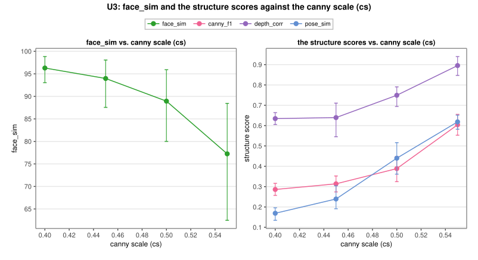
- The trade-off persists on the six-persona mean: Increasing cs 0.40 → 0.55 decreases the six-persona mean face_sim by about a fifth and increases each of the structure scores, pose_sim most: the same shape U1 found on a single persona.
6.3.2 Canny scale: per persona
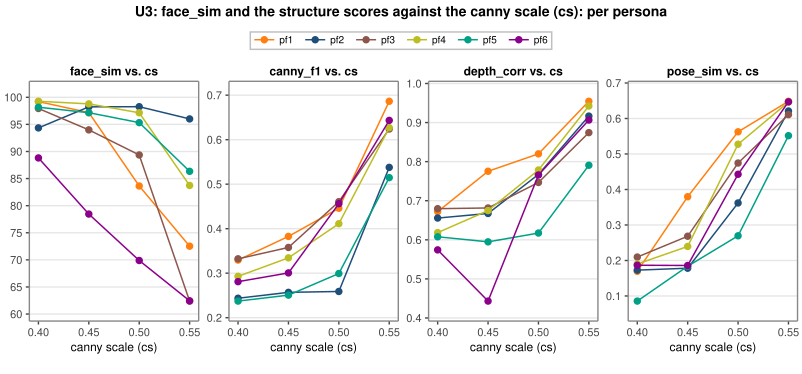
- The directions persist but impact differs across persona-LoRAs:
- Across cs 0.40 → 0.55 each of the structure scores increases for all six personas by similar amounts, while identity varies greatly: five decrease by 12 to 36 face_sim points, pf2 stays constant, and the spread between persona-LoRAs triples.
6.3.3 U3 decision
No single canny value serves the six persona-LoRAs on both axes. What carries forward is a set of conditioning strengths, generated across and selected on the measured scores, rather than a single value or one calibrated per persona-LoRA.
6.4 The U4 stage: Canny with depth, the two-mode conditioning
Question: Does dividing conditioning strength between two control modes yield more template adherence per unit of identity lost than concentrating it on one?
| Branch | Stage | Sweep Id |
Sweep variables |
Images | Persona | Template | Seed | gs | ls | cs | ds | ps |
|---|---|---|---|---|---|---|---|---|---|---|---|---|
| Union | U4 | U4 | pf, cs, ds | 54 | pf1–pf6 | tf4 | 1 | 6 | 1 | 0.25, 0.3, 0.35 | 0.25, 0.3, 0.35 | — |
- Evidence: Single-seed, one seed per cell; every change is measured against the seed noise borrowed from U5.a.
| factor | value | n | face_sim | canny_f1 | depth_corr | pose_sim |
|---|---|---|---|---|---|---|
| cs | 0.25 | 18 | 87.5 | 0.412 | 0.799 | 0.457 |
| cs | 0.3 | 18 | 79.9 | 0.494 | 0.872 | 0.560 |
| cs | 0.35 | 18 | 62.9 | 0.603 | 0.926 | 0.645 |
| ds | 0.25 | 18 | 89.7 | 0.419 | 0.809 | 0.486 |
| ds | 0.3 | 18 | 74.9 | 0.502 | 0.876 | 0.569 |
| ds | 0.35 | 18 | 65.6 | 0.588 | 0.911 | 0.607 |
| cs | ds | n | face_sim | canny_f1 | depth_corr | pose_sim |
|---|---|---|---|---|---|---|
| 0.25 | 0.25 | 6 | 96.6 | 0.347 | 0.706 | 0.327 |
| 0.25 | 0.3 | 6 | 82.7 | 0.420 | 0.827 | 0.506 |
| 0.25 | 0.35 | 6 | 83.1 | 0.468 | 0.864 | 0.537 |
| 0.3 | 0.25 | 6 | 87.9 | 0.415 | 0.836 | 0.520 |
| 0.3 | 0.3 | 6 | 84.9 | 0.477 | 0.867 | 0.541 |
| 0.3 | 0.35 | 6 | 66.8 | 0.591 | 0.912 | 0.618 |
| 0.35 | 0.25 | 6 | 84.6 | 0.495 | 0.886 | 0.611 |
| 0.35 | 0.3 | 6 | 57.1 | 0.609 | 0.935 | 0.660 |
| 0.35 | 0.35 | 6 | 47.0 | 0.705 | 0.958 | 0.665 |
| persona | cs | n | face_sim | canny_f1 | depth_corr | pose_sim |
|---|---|---|---|---|---|---|
| pf1 | 0.25 | 3 | 97.2 | 0.439 | 0.839 | 0.497 |
| pf1 | 0.3 | 3 | 79.1 | 0.554 | 0.889 | 0.557 |
| pf1 | 0.35 | 3 | 40.8 | 0.612 | 0.948 | 0.610 |
| pf2 | 0.25 | 3 | 98.7 | 0.370 | 0.857 | 0.530 |
| pf2 | 0.3 | 3 | 97.8 | 0.447 | 0.907 | 0.642 |
| pf2 | 0.35 | 3 | 92.4 | 0.562 | 0.942 | 0.748 |
| pf3 | 0.25 | 3 | 96.0 | 0.430 | 0.831 | 0.469 |
| pf3 | 0.3 | 3 | 90.0 | 0.470 | 0.865 | 0.554 |
| pf3 | 0.35 | 3 | 77.8 | 0.591 | 0.897 | 0.634 |
| pf4 | 0.25 | 3 | 96.1 | 0.405 | 0.795 | 0.469 |
| pf4 | 0.3 | 3 | 93.7 | 0.485 | 0.869 | 0.598 |
| pf4 | 0.35 | 3 | 64.5 | 0.627 | 0.945 | 0.685 |
| pf5 | 0.25 | 3 | 78.2 | 0.400 | 0.740 | 0.427 |
| pf5 | 0.3 | 3 | 81.7 | 0.470 | 0.798 | 0.513 |
| pf5 | 0.35 | 3 | 78.3 | 0.561 | 0.891 | 0.637 |
| pf6 | 0.25 | 3 | 58.6 | 0.426 | 0.733 | 0.351 |
| pf6 | 0.3 | 3 | 36.9 | 0.540 | 0.902 | 0.494 |
| pf6 | 0.35 | 3 | 23.5 | 0.664 | 0.936 | 0.556 |
| persona | ds | n | face_sim | canny_f1 | depth_corr | pose_sim |
|---|---|---|---|---|---|---|
| pf1 | 0.25 | 3 | 93.8 | 0.439 | 0.852 | 0.544 |
| pf1 | 0.3 | 3 | 73.9 | 0.541 | 0.913 | 0.575 |
| pf1 | 0.35 | 3 | 49.4 | 0.626 | 0.910 | 0.544 |
| pf2 | 0.25 | 3 | 98.8 | 0.380 | 0.864 | 0.545 |
| pf2 | 0.3 | 3 | 98.3 | 0.449 | 0.904 | 0.660 |
| pf2 | 0.35 | 3 | 91.8 | 0.549 | 0.938 | 0.714 |
| pf3 | 0.25 | 3 | 95.9 | 0.441 | 0.836 | 0.486 |
| pf3 | 0.3 | 3 | 83.5 | 0.485 | 0.862 | 0.549 |
| pf3 | 0.35 | 3 | 84.5 | 0.565 | 0.894 | 0.620 |
| pf4 | 0.25 | 3 | 97.9 | 0.422 | 0.805 | 0.560 |
| pf4 | 0.3 | 3 | 88.8 | 0.508 | 0.879 | 0.573 |
| pf4 | 0.35 | 3 | 67.5 | 0.587 | 0.925 | 0.619 |
| pf5 | 0.25 | 3 | 90.9 | 0.403 | 0.748 | 0.442 |
| pf5 | 0.3 | 3 | 66.2 | 0.471 | 0.811 | 0.538 |
| pf5 | 0.35 | 3 | 81.1 | 0.557 | 0.870 | 0.597 |
| pf6 | 0.25 | 3 | 60.7 | 0.430 | 0.751 | 0.340 |
| pf6 | 0.3 | 3 | 38.6 | 0.556 | 0.889 | 0.517 |
| pf6 | 0.35 | 3 | 19.7 | 0.643 | 0.931 | 0.545 |
6.4.1 Canny scale and depth scale: persona mean
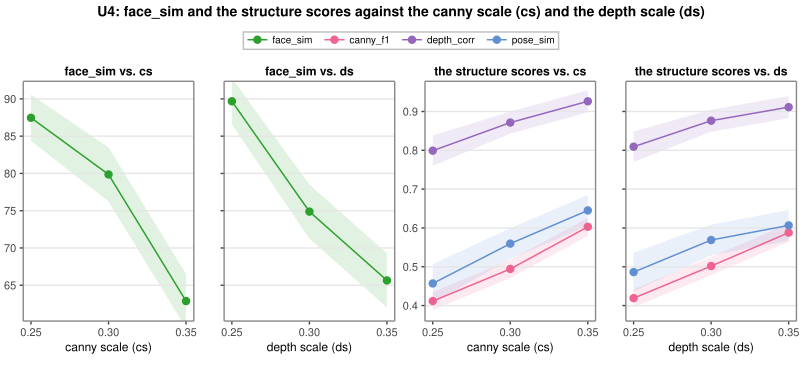
- Canny and depth scales trade alike: Increasing either scale 0.25 → 0.35 decreases face_sim by about a quarter and increases canny_f1 by about half.
6.4.2 Canny scale and depth scale: per persona
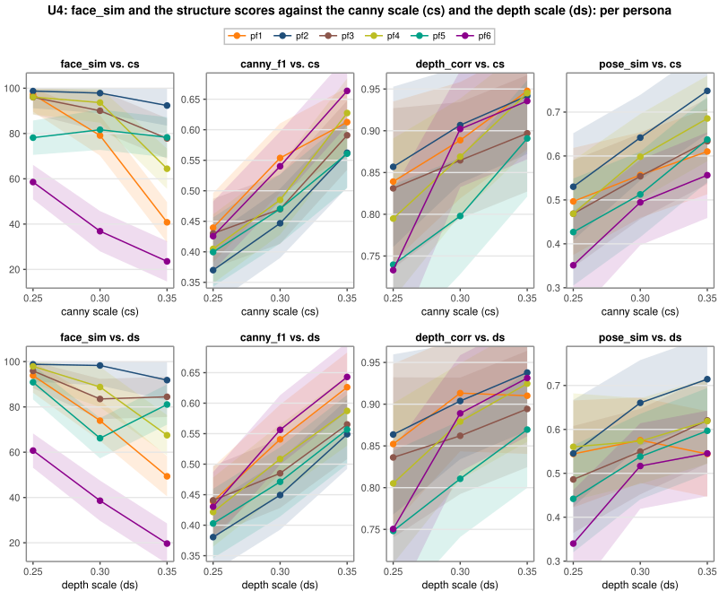
- face_sim, both control modes decrease identity, half the persona-LoRAs clear of the seed noise: Increasing cs 0.25 → 0.35 decreases face_sim by 0 to 56 points, and increasing ds 0.25 → 0.35 by 7 to 44 points; three of the six changes are clear of the borrowed seed noise on either mode.
- canny_f1, both modes increase edge agreement alike for every persona-LoRA: Increasing cs 0.25 → 0.35 increases canny_f1 by 0.16 to 0.24, every change clear of the borrowed seed noise. Increasing ds 0.25 → 0.35 increases canny_f1 by 0.12 to 0.21, four of the six changes clear of the borrowed seed noise.
- depth_corr, depth agreement converges across persona-LoRAs on both modes: Increasing cs 0.25 → 0.35 increases depth_corr for every persona-LoRA by less than the borrowed seed noise, and the spread across persona-LoRAs halves, 0.12 → 0.06. Increasing ds 0.25 → 0.35 does the same, the spread contracting 0.12 → 0.07. Depth agreement converges across persona-LoRAs where identity diverges.
- pose_sim, only the canny scale increases pose adherence for every persona-LoRA, within the seed noise: Increasing cs 0.25 → 0.35 increases pose_sim by 0.11 to 0.22 for all six. Increasing ds 0.25 → 0.35 changes pose_sim by 0.00 to 0.21, one persona-LoRA constant; every change is inside the borrowed seed noise on either mode, so the distinction is a single-seed observation.
6.4.3 Joint view
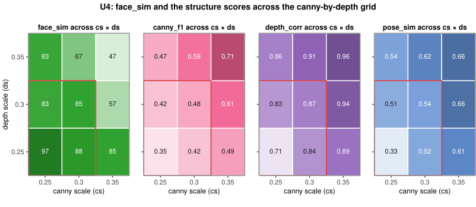
- The identity loss and the structure improvement track the scale sum, not the individual scales:
- As we follow the left-bottom to right-top diagonal the conditioning sum increases from 0.5 → 0.6 → 0.7, which results in face_sim decreasing 97 → 47 and the structure scores increasing 0.35 → 0.71, 0.71 → 0.96 and 0.33 → 0.66. The off-diagonal cells are between their diagonal neighbours on every score; the one exception is (0.25, 0.3), below both neighbours on face_sim. The cells summing to 0.60 have almost identical face_sim and structure scores.
- If we focus on the cells where face_sim is in the usable region and exclude the (0.35, 0.25) and (0.25, 0.35) cells and retain (0.3, 0.3), which gives almost identical results as they share the same conditioning sum, we get a “frozen quadrant”, i.e. the four cells with cs and ds at 0.25 or 0.30. This quadrant looks like a good candidate to restrict to.
6.4.4 The structure scores against face_sim, as the conditioning sum increases
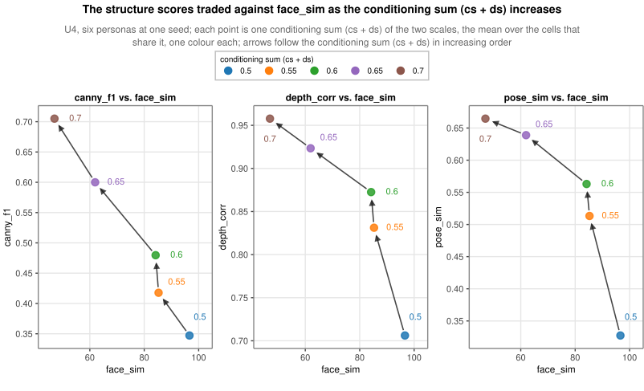
- The conditioning sum trades identity for structure, and the trade steepens past 0.60: Across conditioning sums 0.50 → 0.70 face_sim halves while each of the structure scores increases, canny_f1 and pose_sim doubling.
6.4.5 U4 decision
The two scales were frozen at cs, ds ∈ {0.25, 0.30}, the optimal grid for canny with depth, on two measurements: the conditioning sum, not either scale, drives both axes; and the sums retaining face_sim > 80 run 0.50 → 0.60, past which the identity loss per step doubles, the four low-corner cells of that range being the frozen quadrant.
6.5 The U5 stage: The frozen configuration at scale
Question: Does the frozen configuration persist when templates, seeds and personas all vary at once, and how much of the remaining variation is the frozen configuration’s rather than the material’s?
U5.a is below in full; U5.b, the one cell across fifteen templates, is in Section 9.2, and the decision takes both into account.
6.5.1 U5.a — the frozen quadrant across six templates: the template outweighs the cell on template adherence, the persona-LoRA on identity
| Branch | Stage | Sweep Id |
Sweep variables |
Images | Persona | Template | Seed | gs | ls | cs | ds | ps |
|---|---|---|---|---|---|---|---|---|---|---|---|---|
| Union | U5 | U5.a | pf, tf, s, cs, ds | 720 | pf1–pf6 | tf4–tf6 tf8–tf9 tf13 |
1, 2, .. 5 | 6 | 1 | 0.25, 0.3 | 0.25, 0.3 | — |
- Seed: {1, 2, 3, 4, 5}
- Evidence: Replicated, 5 seeds per cell.
| cs | ds | n | face_sim | canny_f1 | depth_corr | pose_sim |
|---|---|---|---|---|---|---|
| 0.25 | 0.25 | 180 | 93.4 | 0.308 | 0.607 | 0.297 |
| 0.25 | 0.3 | 180 | 90.3 | 0.368 | 0.728 | 0.440 |
| 0.3 | 0.25 | 180 | 90.4 | 0.366 | 0.705 | 0.428 |
| 0.3 | 0.3 | 180 | 83.8 | 0.440 | 0.830 | 0.585 |
| conditioning sum | n | face_sim | canny_f1 | depth_corr | pose_sim |
|---|---|---|---|---|---|
| 0.5 | 180 | 93.4 | 0.308 | 0.607 | 0.297 |
| 0.55 | 360 | 90.3 | 0.367 | 0.717 | 0.434 |
| 0.6 | 180 | 83.8 | 0.440 | 0.830 | 0.585 |
| persona | conditioning sum | n | face_sim | canny_f1 | depth_corr | pose_sim |
|---|---|---|---|---|---|---|
| pf1 | 0.5 | 30 | 91.3 | 0.313 | 0.608 | 0.313 |
| pf1 | 0.55 | 60 | 93.2 | 0.379 | 0.746 | 0.465 |
| pf1 | 0.6 | 30 | 81.8 | 0.465 | 0.871 | 0.623 |
| pf2 | 0.5 | 30 | 96.2 | 0.267 | 0.709 | 0.430 |
| pf2 | 0.55 | 60 | 92.1 | 0.316 | 0.802 | 0.556 |
| pf2 | 0.6 | 30 | 91.9 | 0.385 | 0.872 | 0.636 |
| pf3 | 0.5 | 30 | 93.2 | 0.373 | 0.636 | 0.310 |
| pf3 | 0.55 | 60 | 91.8 | 0.422 | 0.712 | 0.444 |
| pf3 | 0.6 | 30 | 90.3 | 0.479 | 0.827 | 0.575 |
| pf4 | 0.5 | 30 | 98.1 | 0.326 | 0.628 | 0.334 |
| pf4 | 0.55 | 60 | 94.9 | 0.395 | 0.732 | 0.437 |
| pf4 | 0.6 | 30 | 89.5 | 0.451 | 0.854 | 0.634 |
| pf5 | 0.5 | 30 | 94.1 | 0.285 | 0.560 | 0.217 |
| pf5 | 0.55 | 60 | 89.2 | 0.335 | 0.656 | 0.348 |
| pf5 | 0.6 | 30 | 84.1 | 0.431 | 0.796 | 0.525 |
| pf6 | 0.5 | 30 | 87.6 | 0.286 | 0.503 | 0.180 |
| pf6 | 0.55 | 60 | 80.8 | 0.356 | 0.653 | 0.355 |
| pf6 | 0.6 | 30 | 65.0 | 0.426 | 0.760 | 0.517 |
| template | conditioning sum | n | face_sim | canny_f1 | depth_corr | pose_sim |
|---|---|---|---|---|---|---|
| tf13 | 0.5 | 30 | 91.5 | 0.275 | 0.601 | 0.281 |
| tf13 | 0.55 | 60 | 86.1 | 0.328 | 0.755 | 0.408 |
| tf13 | 0.6 | 30 | 78.7 | 0.390 | 0.870 | 0.529 |
| tf4 | 0.5 | 30 | 94.9 | 0.317 | 0.690 | 0.323 |
| tf4 | 0.55 | 60 | 90.4 | 0.389 | 0.778 | 0.453 |
| tf4 | 0.6 | 30 | 85.6 | 0.469 | 0.863 | 0.561 |
| tf5 | 0.5 | 30 | 96.2 | 0.308 | 0.724 | 0.536 |
| tf5 | 0.55 | 60 | 92.2 | 0.387 | 0.855 | 0.732 |
| tf5 | 0.6 | 30 | 89.9 | 0.437 | 0.910 | 0.848 |
| tf6 | 0.5 | 30 | 96.9 | 0.314 | 0.684 | 0.377 |
| tf6 | 0.55 | 60 | 95.5 | 0.356 | 0.761 | 0.465 |
| tf6 | 0.6 | 30 | 93.2 | 0.431 | 0.854 | 0.566 |
| tf8 | 0.5 | 30 | 92.5 | 0.294 | 0.464 | 0.128 |
| tf8 | 0.55 | 60 | 90.4 | 0.329 | 0.547 | 0.207 |
| tf8 | 0.6 | 30 | 87.5 | 0.406 | 0.708 | 0.432 |
| tf9 | 0.5 | 30 | 88.6 | 0.341 | 0.481 | 0.138 |
| tf9 | 0.55 | 60 | 87.4 | 0.413 | 0.604 | 0.339 |
| tf9 | 0.6 | 30 | 67.8 | 0.505 | 0.775 | 0.574 |
6.5.1.1 Conditioning sum: per persona
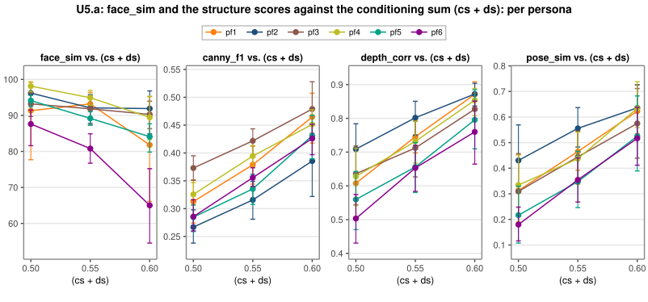
- The quadrant persists: the per-sum mean identity stays usable for every persona-LoRA, except pf6 at 0.6 conditioning sum: Increasing the conditioning sum 0.50 → 0.60 decreases face_sim and increases the structure scores for every persona-LoRA, so there is a trade-off for each. The structure scores change consistently, however identity is where the impact differs: pf3 and pf2 decrease by a few face_sim points, inside their seed noise, against more than twenty for pf6, which makes its identity unusable at conditioning sum 0.6.
6.5.1.2 Conditioning sum: per template
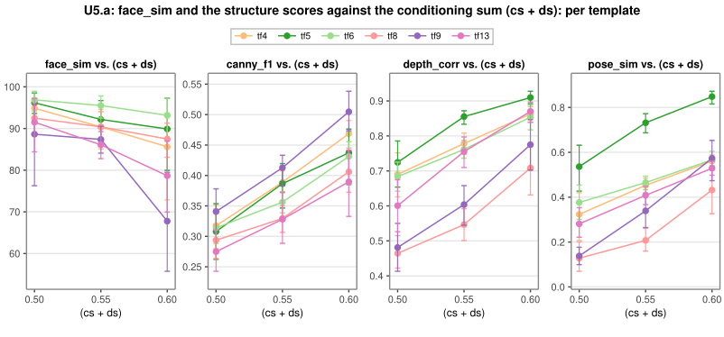
- The quadrant persists: the per-sum mean identity stays usable for every template, except tf9 and tf13 at 0.6 conditioning sum: Increasing the conditioning sum 0.50 → 0.60 decreases face_sim and increases the structure scores for every template, tf5, tf6 and tf8 inside their seed noise on face_sim, so there is a trade-off for each. Canny and depth scores change consistently, however identity and pose are where the impact differs.
6.5.1.3 The structure scores against face_sim, as the conditioning sum increases
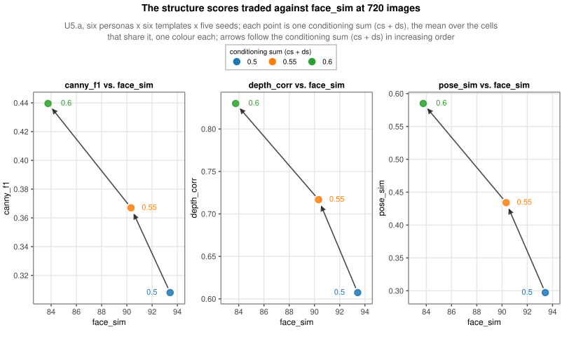
- The quadrant persists through the wider generation, so does the trade-off but the return halves on the second step: The per-sum mean identity stays usable at every conditioning sum. Across conditioning sums 0.50 → 0.60 face_sim decreases and the structure scores increase at both steps, the second step returning about half the structure per identity point of the first.
6.5.2 U5 decision
U5.a stress tested the frozen quadrant on five seeds, six personas and six templates. The quadrant persisted: the per-sum mean identity stays usable at every conditioning sum, and every persona-LoRA and every template retains the direction the search selected on, pf2, pf3 and the tf5, tf6 and tf8 templates on face_sim inside their seed noise.
U5.b attempted to restrict the quadrant to one cell, cs 0.25 and ds 0.30. Stress tested on fifteen templates, the cell is under a structure floor on about half of them and under all three on four.
Thus further restriction of the frozen quadrant is not supported, and it stays the frozen set, the optimal grid for canny with depth. The warning the stage adds: the template changes the absolute structure scores, canny_f1 excepted, and the persona-LoRA the absolute face_sim, more than any configuration left to vary.
The frozen quadrant is at or below the floor of the range the Union-Pro model card recommends, 0.3–0.8 [4]: it spans 0.25 to 0.30 on each scale and tops out at the model card’s recommended minimum.
6.6 The U6 stage: Adding pose conditioning and the band
The band the three-mode stage converged on, replicated across six templates and three seeds.
Question: Which configuration is optimal when all three control modes are used, and does it persist across templates and seeds?
Below we show the initial U6.a and final U6.h sweeps in full. The other intermediate sweeps U6.b–U6.g are in Section 9.3 in the appendix. The decision takes all the sweeps into account.
6.6.1 U6.a — the opening scan, canny and depth to 0.3 against pose to 0.6
| Branch | Stage | Sweep Id |
Sweep variables |
Images | Persona | Template | Seed | gs | ls | cs | ds | ps |
|---|---|---|---|---|---|---|---|---|---|---|---|---|
| Union | U6 | U6.a | cs, ds, ps | 54 | pm1 | tm1 | 1 | 6 | 1 | 0.1, 0.2, 0.3 | 0.1, 0.2, 0.3 | 0.1, 0.2, .. 0.6 |
- ps: {0.1, 0.2, 0.3, 0.4, 0.5, 0.6}
- Evidence: Single-seed, one seed per cell; every change is measured against the seed noise borrowed from U6.h.
| factor | value | n | face_sim | canny_f1 | depth_corr | pose_sim |
|---|---|---|---|---|---|---|
| cs | 0.1 | 18 | 98.7 | 0.262 | 0.713 | 0.331 |
| cs | 0.2 | 18 | 97.5 | 0.303 | 0.736 | 0.402 |
| cs | 0.3 | 18 | 96.3 | 0.401 | 0.786 | 0.534 |
| ds | 0.1 | 18 | 98.9 | 0.240 | 0.679 | 0.279 |
| ds | 0.2 | 18 | 97.4 | 0.307 | 0.754 | 0.397 |
| ds | 0.3 | 18 | 96.2 | 0.419 | 0.803 | 0.591 |
| ps | 0.1 | 9 | 98.8 | 0.203 | 0.577 | 0.083 |
| ps | 0.2 | 9 | 98.4 | 0.227 | 0.644 | 0.110 |
| ps | 0.3 | 9 | 97.6 | 0.288 | 0.733 | 0.331 |
| ps | 0.4 | 9 | 96.7 | 0.351 | 0.852 | 0.542 |
| ps | 0.5 | 9 | 97.5 | 0.429 | 0.853 | 0.704 |
| ps | 0.6 | 9 | 96.1 | 0.434 | 0.812 | 0.765 |
| conditioning sum | n | face_sim | canny_f1 | depth_corr | pose_sim |
|---|---|---|---|---|---|
| 0.3 | 1 | 99.8 | 0.172 | 0.559 | 0.000 |
| 0.4 | 3 | 99.5 | 0.172 | 0.528 | 0.000 |
| 0.5 | 6 | 99.4 | 0.151 | 0.485 | 0.000 |
| 0.6 | 8 | 98.4 | 0.152 | 0.605 | 0.026 |
| 0.7 | 9 | 97.8 | 0.289 | 0.831 | 0.336 |
| 0.8 | 9 | 97.6 | 0.384 | 0.864 | 0.628 |
| 0.9 | 8 | 96.9 | 0.458 | 0.860 | 0.771 |
| 1 | 6 | 96.3 | 0.478 | 0.860 | 0.762 |
| 1.1 | 3 | 94.4 | 0.504 | 0.786 | 0.794 |
| 1.2 | 1 | 89.2 | 0.488 | 0.694 | 0.797 |
6.6.1.1 Conditioning sum
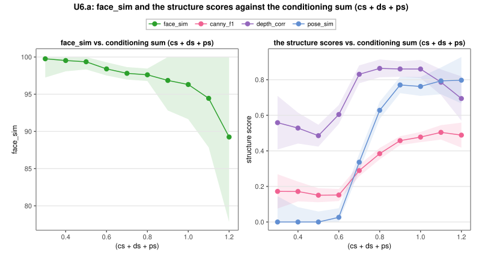
- face_sim: Consistently above the usable 80. Changing the conditioning sum 0.3 → 1.2, the per-sum mean decreases 99.8 → 89.2.
- canny_f1: Under its floor for every conditioning sum < 0.7; changing the sum 0.7 → 1.1, canny_f1 increases 0.289 → 0.504.
- depth_corr: Around its floor for every conditioning sum < 0.7; past the peak at 0.8 it decreases.
- pose_sim: Zero for every conditioning sum < 0.6. Changing the conditioning sum 0.8 → 1.2, pose_sim increases 0.628 → 0.797.
- Together: The structure scores clear their floors only at conditioning sum ≥ 0.7, where face_sim is still 97.8.
- What the next sweep changed: Identity has margin and the lowest scale values result in structure scores under their floors, so U6.b removes the lowest values and adds higher ones on all three scales.
6.6.2 U6.h — the band replicated across six templates and three seeds
| Branch | Stage | Sweep Id |
Sweep variables |
Images | Persona | Template | Seed | gs | ls | cs | ds | ps |
|---|---|---|---|---|---|---|---|---|---|---|---|---|
| Union | U6 | U6.h | tm, s, cs, ds, ps | 144 | pm1 | tm1–tm6 | 1, 2, 3 | 6 | 1 | 0.05, 0.15, 0.25 | 0.05, 0.15, 0.25 | 0.5, 0.55, 0.6 |
- Cell selection:
0.8 ≤ ps + cs + ds ≤ 0.85, which is 8 of the 27 cells its values span. - Evidence: Replicated, 3 seeds per cell.
| factor | value | n | face_sim | canny_f1 | depth_corr | pose_sim |
|---|---|---|---|---|---|---|
| cs | 0.05 | 54 | 97.4 | 0.291 | 0.605 | 0.525 |
| cs | 0.15 | 54 | 98.0 | 0.297 | 0.588 | 0.512 |
| cs | 0.25 | 36 | 97.5 | 0.332 | 0.611 | 0.495 |
| ds | 0.05 | 54 | 97.6 | 0.316 | 0.596 | 0.503 |
| ds | 0.15 | 54 | 98.1 | 0.293 | 0.593 | 0.518 |
| ds | 0.25 | 36 | 97.2 | 0.301 | 0.618 | 0.521 |
| ps | 0.5 | 54 | 99.2 | 0.305 | 0.596 | 0.487 |
| ps | 0.55 | 54 | 96.0 | 0.320 | 0.622 | 0.530 |
| ps | 0.6 | 36 | 97.8 | 0.277 | 0.573 | 0.526 |
| conditioning sum | n | face_sim | canny_f1 | depth_corr | pose_sim |
|---|---|---|---|---|---|
| 0.8 | 90 | 98.7 | 0.294 | 0.587 | 0.503 |
| 0.85 | 54 | 96.0 | 0.320 | 0.622 | 0.530 |
| template | conditioning sum | n | face_sim | canny_f1 | depth_corr | pose_sim |
|---|---|---|---|---|---|---|
| tm1 | 0.8 | 15 | 99.4 | 0.312 | 0.662 | 0.757 |
| tm1 | 0.85 | 9 | 99.2 | 0.379 | 0.673 | 0.823 |
| tm2 | 0.8 | 15 | 99.5 | 0.290 | 0.791 | 0.453 |
| tm2 | 0.85 | 9 | 99.4 | 0.325 | 0.850 | 0.467 |
| tm3 | 0.8 | 15 | 96.7 | 0.322 | 0.290 | 0.242 |
| tm3 | 0.85 | 9 | 98.4 | 0.339 | 0.309 | 0.259 |
| tm4 | 0.8 | 15 | 99.8 | 0.257 | 0.728 | 0.663 |
| tm4 | 0.85 | 9 | 99.8 | 0.262 | 0.736 | 0.668 |
| tm5 | 0.8 | 15 | 98.3 | 0.185 | 0.282 | 0.167 |
| tm5 | 0.85 | 9 | 81.7 | 0.233 | 0.336 | 0.188 |
| tm6 | 0.8 | 15 | 98.3 | 0.399 | 0.770 | 0.713 |
| tm6 | 0.85 | 9 | 97.7 | 0.380 | 0.829 | 0.774 |
| seed | conditioning sum | n | face_sim | canny_f1 | depth_corr | pose_sim |
|---|---|---|---|---|---|---|
| 1.0 | 0.8 | 30 | 98.6 | 0.305 | 0.595 | 0.497 |
| 1.0 | 0.85 | 18 | 97.9 | 0.339 | 0.598 | 0.531 |
| 2.0 | 0.8 | 30 | 99.3 | 0.310 | 0.590 | 0.522 |
| 2.0 | 0.85 | 18 | 98.9 | 0.320 | 0.626 | 0.530 |
| 3.0 | 0.8 | 30 | 98.0 | 0.267 | 0.576 | 0.490 |
| 3.0 | 0.85 | 18 | 91.3 | 0.299 | 0.643 | 0.528 |
6.6.2.1 Conditioning sum: per template
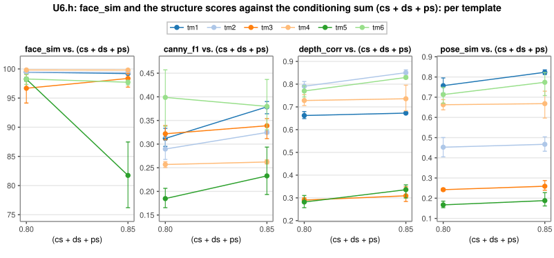
- The band persists on every template: identity stays usable at both conditioning sums and the structure scores do not change: Increasing the conditioning sum 0.80 → 0.85 changes face_sim by two points or less on five of the six templates, and the structure scores by a few hundredths on every template, all inside the seed noise; the one change clear of it is tm5’s face_sim, 98.3 → 81.7, still above the usable 80. What differs between templates is the structure the band reaches, set by the template rather than the sum: tm4 and tm5 are under the canny_f1 floor and tm3 and tm5 under the depth_corr floor at both sums.
6.6.2.2 The structure scores against face_sim, as the conditioning sum increases
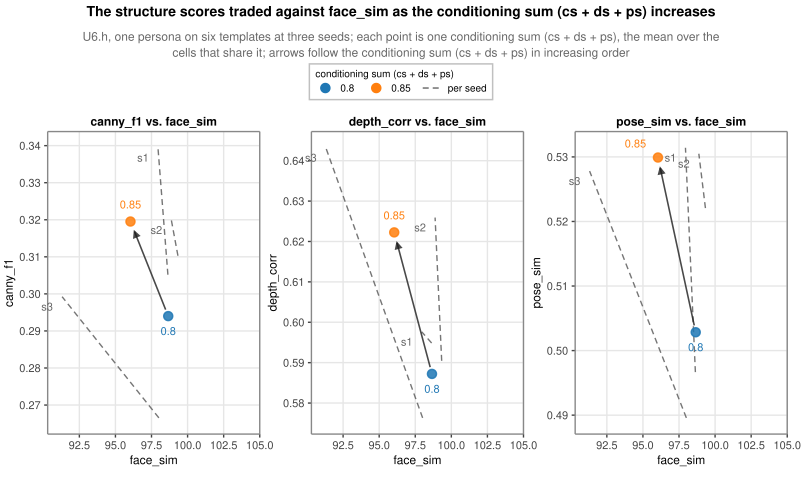
- The band persists across the three seeds: the two sums are interchangeable within the seed noise: Increasing the conditioning sum 0.80 → 0.85 changes face_sim 98.7 → 96.0 and each of the structure scores by a few hundredths, on all three seeds alike and every change inside its noise except seed 3’s face_sim, so the band holds as a band, not as one cell.
6.6.3 U6 decision
The three-mode grid with its conditioning sum band persists on all six templates on identity and on all three seeds on direction, though tm3, tm4 and tm5 are under a structure floor, so it is the optimal grid for canny, depth and pose together.
6.7 The optimal grids: per conditioning mode
The Union branch ends with three optimal grids, one per control-mode set, each checked against the template and the seed, to be selected by the modes in use.
Canny alone (U1–U3): The canny scale at about 0.40.
Canny and depth (U4–U5): The frozen quadrant, cs and ds each at 0.25 or 0.30.
Canny, depth and pose (U6): The band
0.80 ≤ ps + cs + ds ≤ 0.85, over cs and ds each in {0.05, 0.15, 0.25} and ps in {0.5, 0.55, 0.6}.
6.8 The C1 stage: Comparing Union-Pro ControlNet and control-LoRA implementations
Question: Do the trends of the Union-Pro ControlNet persist with FLUX control-LoRAs?
C1.a is below in full; C1.b, seven personas at high canny, is in Section 10.1, and the comparison takes both into account.
6.8.1 C1.a — the guidance-by-canny surface: guidance improves no axes, canny results in a trade-off
| Branch | Stage | Sweep Id |
Sweep variables |
Images | Persona | Template | Seed | gs | ls | cs | ds | ps |
|---|---|---|---|---|---|---|---|---|---|---|---|---|
| control-LoRA | C1 | C1.a | tm, s, gs, cs | 630 | pm1 | tm1–tm6 | 1, 2, 3 | 6, 8, .. 14 | 1 | 0.31, 0.41, .. 0.91 | — | — |
- gs: {6, 8, 10, 12, 14}
- cs: {0.31, 0.41, 0.51, 0.61, 0.71, 0.81, 0.91}
- Evidence: Replicated, 3 seeds per cell.
| factor | value | n | face_sim | canny_f1 | depth_corr | pose_sim |
|---|---|---|---|---|---|---|
| gs | 6 | 126 | 95.0 | 0.524 | 0.634 | 0.303 |
| gs | 8 | 126 | 95.9 | 0.488 | 0.612 | 0.287 |
| gs | 10 | 126 | 96.1 | 0.507 | 0.629 | 0.265 |
| gs | 12 | 126 | 94.9 | 0.505 | 0.603 | 0.253 |
| gs | 14 | 126 | 95.3 | 0.501 | 0.617 | 0.271 |
| cs | 0.31 | 90 | 99.5 | 0.262 | 0.409 | 0.045 |
| cs | 0.41 | 90 | 99.4 | 0.272 | 0.400 | 0.051 |
| cs | 0.51 | 90 | 99.4 | 0.305 | 0.423 | 0.060 |
| cs | 0.61 | 90 | 99.1 | 0.398 | 0.496 | 0.083 |
| cs | 0.71 | 90 | 92.2 | 0.654 | 0.754 | 0.363 |
| cs | 0.81 | 90 | 92.1 | 0.795 | 0.898 | 0.574 |
| cs | 0.91 | 90 | 86.3 | 0.849 | 0.953 | 0.755 |
| template | gs | n | face_sim | canny_f1 | depth_corr | pose_sim |
|---|---|---|---|---|---|---|
| tm1 | 6 | 21 | 94.2 | 0.452 | 0.531 | 0.280 |
| tm1 | 8 | 21 | 94.0 | 0.446 | 0.481 | 0.261 |
| tm1 | 10 | 21 | 98.5 | 0.439 | 0.494 | 0.228 |
| tm1 | 12 | 21 | 98.7 | 0.422 | 0.476 | 0.179 |
| tm1 | 14 | 21 | 94.1 | 0.433 | 0.466 | 0.225 |
| tm2 | 6 | 21 | 98.2 | 0.508 | 0.705 | 0.322 |
| tm2 | 8 | 21 | 99.1 | 0.458 | 0.700 | 0.298 |
| tm2 | 10 | 21 | 98.8 | 0.469 | 0.690 | 0.297 |
| tm2 | 12 | 21 | 96.6 | 0.473 | 0.651 | 0.290 |
| tm2 | 14 | 21 | 99.2 | 0.473 | 0.687 | 0.307 |
| tm3 | 6 | 21 | 89.2 | 0.504 | 0.598 | 0.205 |
| tm3 | 8 | 21 | 93.7 | 0.466 | 0.596 | 0.188 |
| tm3 | 10 | 21 | 94.6 | 0.490 | 0.600 | 0.121 |
| tm3 | 12 | 21 | 93.1 | 0.494 | 0.609 | 0.173 |
| tm3 | 14 | 21 | 93.0 | 0.493 | 0.619 | 0.178 |
| tm4 | 6 | 21 | 98.8 | 0.537 | 0.718 | 0.352 |
| tm4 | 8 | 21 | 98.4 | 0.472 | 0.681 | 0.362 |
| tm4 | 10 | 21 | 98.3 | 0.513 | 0.712 | 0.341 |
| tm4 | 12 | 21 | 98.6 | 0.500 | 0.672 | 0.277 |
| tm4 | 14 | 21 | 97.7 | 0.488 | 0.699 | 0.326 |
| tm5 | 6 | 21 | 90.4 | 0.540 | 0.595 | 0.237 |
| tm5 | 8 | 21 | 90.9 | 0.518 | 0.552 | 0.205 |
| tm5 | 10 | 21 | 87.5 | 0.525 | 0.581 | 0.201 |
| tm5 | 12 | 21 | 83.6 | 0.532 | 0.551 | 0.207 |
| tm5 | 14 | 21 | 88.6 | 0.522 | 0.555 | 0.192 |
| tm6 | 6 | 21 | 99.1 | 0.604 | 0.656 | 0.424 |
| tm6 | 8 | 21 | 99.2 | 0.568 | 0.661 | 0.407 |
| tm6 | 10 | 21 | 99.1 | 0.608 | 0.697 | 0.401 |
| tm6 | 12 | 21 | 98.9 | 0.610 | 0.659 | 0.391 |
| tm6 | 14 | 21 | 99.3 | 0.596 | 0.677 | 0.399 |
| template | cs | n | face_sim | canny_f1 | depth_corr | pose_sim |
|---|---|---|---|---|---|---|
| tm1 | 0.31 | 15 | 99.4 | 0.211 | 0.392 | 0.015 |
| tm1 | 0.41 | 15 | 99.4 | 0.220 | 0.319 | 0.021 |
| tm1 | 0.51 | 15 | 99.4 | 0.281 | 0.259 | 0.071 |
| tm1 | 0.61 | 15 | 98.5 | 0.342 | 0.319 | 0.112 |
| tm1 | 0.71 | 15 | 77.6 | 0.523 | 0.509 | 0.051 |
| tm1 | 0.81 | 15 | 98.9 | 0.710 | 0.731 | 0.530 |
| tm1 | 0.91 | 15 | 98.3 | 0.781 | 0.898 | 0.845 |
| tm2 | 0.31 | 15 | 99.6 | 0.252 | 0.523 | 0.054 |
| tm2 | 0.41 | 15 | 99.5 | 0.256 | 0.510 | 0.056 |
| tm2 | 0.51 | 15 | 99.6 | 0.271 | 0.512 | 0.057 |
| tm2 | 0.61 | 15 | 99.5 | 0.385 | 0.582 | 0.053 |
| tm2 | 0.71 | 15 | 96.4 | 0.563 | 0.791 | 0.360 |
| tm2 | 0.81 | 15 | 97.8 | 0.761 | 0.934 | 0.671 |
| tm2 | 0.91 | 15 | 96.2 | 0.847 | 0.954 | 0.871 |
| tm3 | 0.31 | 15 | 99.3 | 0.288 | 0.383 | 0.024 |
| tm3 | 0.41 | 15 | 99.2 | 0.311 | 0.416 | 0.026 |
| tm3 | 0.51 | 15 | 99.3 | 0.347 | 0.445 | 0.023 |
| tm3 | 0.61 | 15 | 98.8 | 0.430 | 0.511 | 0.033 |
| tm3 | 0.71 | 15 | 97.9 | 0.585 | 0.721 | 0.108 |
| tm3 | 0.81 | 15 | 91.6 | 0.684 | 0.816 | 0.236 |
| tm3 | 0.91 | 15 | 62.6 | 0.782 | 0.938 | 0.762 |
| tm4 | 0.31 | 15 | 99.5 | 0.270 | 0.549 | 0.090 |
| tm4 | 0.41 | 15 | 99.4 | 0.272 | 0.540 | 0.096 |
| tm4 | 0.51 | 15 | 99.1 | 0.286 | 0.548 | 0.086 |
| tm4 | 0.61 | 15 | 98.9 | 0.329 | 0.544 | 0.135 |
| tm4 | 0.71 | 15 | 98.7 | 0.632 | 0.742 | 0.545 |
| tm4 | 0.81 | 15 | 95.3 | 0.843 | 0.975 | 0.663 |
| tm4 | 0.91 | 15 | 97.4 | 0.880 | 0.977 | 0.706 |
| tm5 | 0.31 | 15 | 99.4 | 0.270 | 0.232 | 0.037 |
| tm5 | 0.41 | 15 | 99.4 | 0.284 | 0.250 | 0.037 |
| tm5 | 0.51 | 15 | 99.4 | 0.322 | 0.278 | 0.039 |
| tm5 | 0.61 | 15 | 99.2 | 0.433 | 0.434 | 0.040 |
| tm5 | 0.71 | 15 | 83.7 | 0.710 | 0.861 | 0.339 |
| tm5 | 0.81 | 15 | 70.7 | 0.825 | 0.953 | 0.484 |
| tm5 | 0.91 | 15 | 65.5 | 0.847 | 0.961 | 0.484 |
| tm6 | 0.31 | 15 | 99.7 | 0.283 | 0.375 | 0.052 |
| tm6 | 0.41 | 15 | 99.7 | 0.291 | 0.367 | 0.069 |
| tm6 | 0.51 | 15 | 99.7 | 0.325 | 0.494 | 0.086 |
| tm6 | 0.61 | 15 | 99.6 | 0.471 | 0.588 | 0.126 |
| tm6 | 0.71 | 15 | 98.7 | 0.910 | 0.899 | 0.777 |
| tm6 | 0.81 | 15 | 98.4 | 0.945 | 0.980 | 0.861 |
| tm6 | 0.91 | 15 | 98.0 | 0.955 | 0.987 | 0.859 |
| gs \ cs | 0.31 | 0.41 | 0.51 | 0.61 | 0.71 | 0.81 | 0.91 |
|---|---|---|---|---|---|---|---|
| 6 | 0.05 | 0.05 | 0.06 | 0.10 | 0.43 | 0.66 | 0.78 |
| 8 | 0.05 | 0.06 | 0.07 | 0.09 | 0.39 | 0.58 | 0.77 |
| 10 | 0.04 | 0.04 | 0.07 | 0.07 | 0.36 | 0.57 | 0.70 |
| 12 | 0.04 | 0.04 | 0.05 | 0.09 | 0.25 | 0.52 | 0.77 |
| 14 | 0.05 | 0.05 | 0.06 | 0.06 | 0.38 | 0.55 | 0.75 |
6.8.1.1 Guidance scale
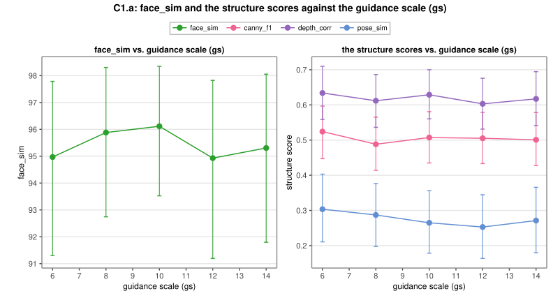
- Guidance changes neither axis: Changing the guidance scale 6 → 14, face_sim stays within about a point and the structure scores decrease by a few hundredths, the five means’ intervals overlapping on every score; the face_sim high at gs 10 is inside those intervals too, so no peak is resolved.
6.8.1.2 Guidance scale: per template
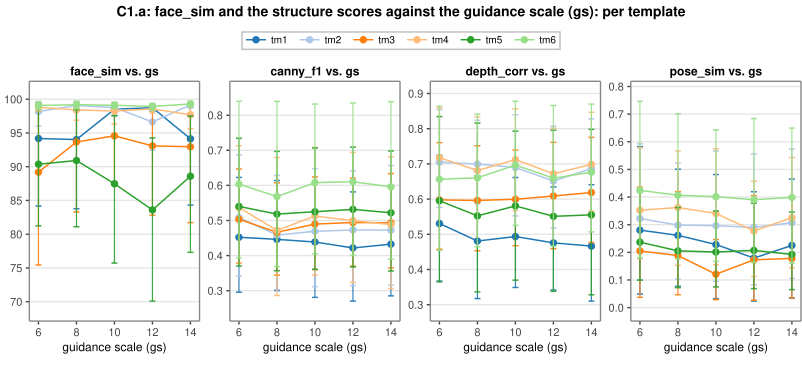
- The templates are consistent: Changing the guidance scale 6 → 14, face_sim decreases on half the templates and increases on the other half, while canny_f1 and pose_sim decrease on all six by a few hundredths, so the direction is consistent while most of the sizes are inside each template’s own seed noise.
6.8.1.3 Canny scale
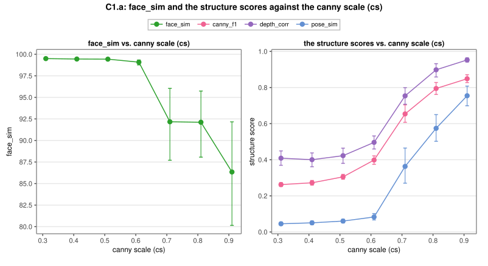
- The cs curve is a threshold, then a saturating increase: Changing the canny scale 0.31 → 0.91, face_sim stays constant through 0.61 and then decreases, the per-cs mean staying > 86 while single images collapse from cs 0.71. canny_f1 and depth_corr gain three quarters of their whole-range increase past 0.61, in steps that shrink by about half each time. pose_sim is the one that does not saturate: under its floor through 0.61, then increasing steeply and still increasing at 0.91.
6.8.1.4 Canny scale: per template
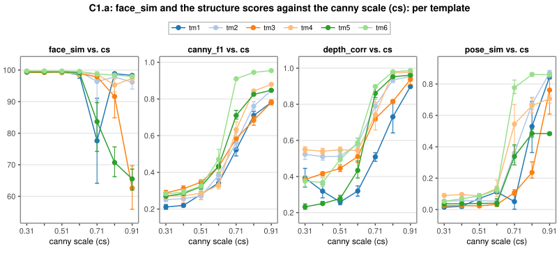
- Every template makes the same trade: Changing the canny scale 0.31 → 0.91, face_sim decreases on all six templates and each of the structure scores increases on all six.
6.8.1.5 The structure scores against face_sim, as the canny scale increases
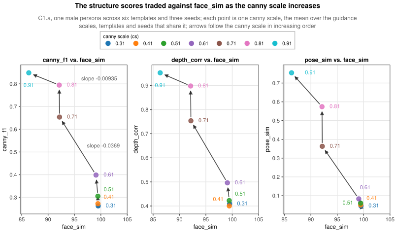
- The return diminishes past the threshold: Below the threshold face_sim does not change, so there is no return to quote; past it each canny step returns less structure per identity point than the step before, the last about a quarter of the first.
This pipeline clears the structure floors from cs 0.71, where the Union branch’s canny-only sweeps work at 0.40–0.50.
- What the next sweep changed: C1.a’s face_sim is flat below its threshold, so C1.b removes that half of the range and resamples the upper half at twice the density, freezes guidance at the centre of C1.a’s range, and changes the material: seven female persona-LoRAs on five female templates against C1.a’s one male persona on six male templates.
6.8.2 The comparison
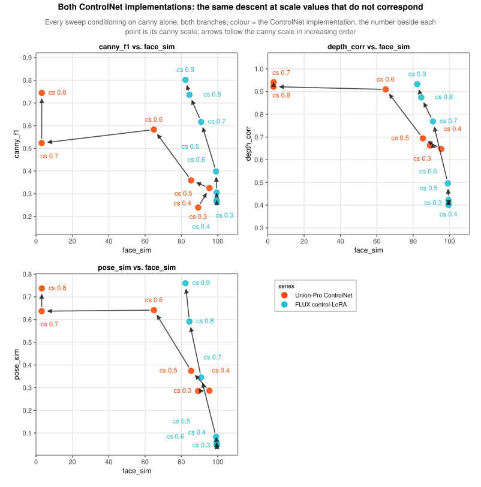
- The control-LoRA’s lines are the more vertical set:
- A steeper line means the structure scores increase over a smaller range of identity, and the control-LoRA’s are steeper on the structure scores, eight to ten times, no interval overlapping the other branch’s; the study cannot attribute that to the implementation, since persona, template set and implementation change together between the branches.
- At the same face_sim the control-LoRA gives better structure: At the three canny scales where its identity is inside Union-Pro’s range it is higher on canny_f1 and depth_corr at every one, and higher on pose_sim at the two stronger scales and the weakest.
6.9 The canny trade-off and the identity cliff
The structure scores increase with ControlNet conditioning in almost all the cases; identity fidelity is what stops the increase. This section presents the stop in full: the cliff on the six personas together, then per persona.
In the charts below every point comes from the U4 grid: six personas on one template, one seed, nine (cs, ds) cells, so the values before and past the cliff are comparable. U5.a, the quadrant re-run on six templates and five seeds, is quoted beside them as the check.
| conditioning sum | n | face_sim | canny_f1 | depth_corr | pose_sim |
|---|---|---|---|---|---|
| 0.5 | 6 | 96.6 | 0.347 | 0.706 | 0.327 |
| 0.55 | 12 | 85.3 | 0.418 | 0.831 | 0.513 |
| 0.6 | 18 | 84.2 | 0.480 | 0.873 | 0.563 |
| 0.65 | 12 | 62.0 | 0.600 | 0.923 | 0.639 |
| 0.7 | 6 | 47.0 | 0.705 | 0.958 | 0.665 |
| persona | conditioning sum | n | face_sim | canny_f1 | depth_corr | pose_sim |
|---|---|---|---|---|---|---|
| pf1 | 0.5 | 1 | 98.1 | 0.397 | 0.749 | 0.484 |
| pf1 | 0.55 | 2 | 96.6 | 0.462 | 0.882 | 0.502 |
| pf1 | 0.6 | 3 | 93.1 | 0.478 | 0.907 | 0.586 |
| pf1 | 0.65 | 2 | 37.3 | 0.661 | 0.912 | 0.587 |
| pf1 | 0.7 | 1 | 6.1 | 0.738 | 0.968 | 0.570 |
| pf2 | 0.5 | 1 | 98.2 | 0.317 | 0.813 | 0.397 |
| pf2 | 0.55 | 2 | 99.7 | 0.331 | 0.858 | 0.576 |
| pf2 | 0.6 | 3 | 98.4 | 0.475 | 0.907 | 0.628 |
| pf2 | 0.65 | 2 | 96.5 | 0.544 | 0.954 | 0.773 |
| pf2 | 0.7 | 1 | 81.3 | 0.645 | 0.956 | 0.781 |
| pf3 | 0.5 | 1 | 98.4 | 0.421 | 0.803 | 0.399 |
| pf3 | 0.55 | 2 | 95.4 | 0.435 | 0.841 | 0.491 |
| pf3 | 0.6 | 3 | 94.9 | 0.447 | 0.856 | 0.537 |
| pf3 | 0.65 | 2 | 68.5 | 0.559 | 0.895 | 0.637 |
| pf3 | 0.7 | 1 | 80.8 | 0.725 | 0.935 | 0.702 |
| pf4 | 0.5 | 1 | 99.8 | 0.374 | 0.717 | 0.350 |
| pf4 | 0.55 | 2 | 95.2 | 0.404 | 0.807 | 0.568 |
| pf4 | 0.6 | 3 | 95.5 | 0.450 | 0.868 | 0.589 |
| pf4 | 0.65 | 2 | 84.4 | 0.658 | 0.962 | 0.673 |
| pf4 | 0.7 | 1 | 17.5 | 0.703 | 0.967 | 0.657 |
| pf5 | 0.5 | 1 | 96.1 | 0.297 | 0.702 | 0.288 |
| pf5 | 0.55 | 2 | 78.2 | 0.440 | 0.747 | 0.468 |
| pf5 | 0.6 | 3 | 77.0 | 0.464 | 0.777 | 0.533 |
| pf5 | 0.65 | 2 | 71.0 | 0.512 | 0.898 | 0.602 |
| pf5 | 0.7 | 1 | 88.8 | 0.698 | 0.960 | 0.704 |
| pf6 | 0.5 | 1 | 89.1 | 0.277 | 0.453 | 0.045 |
| pf6 | 0.55 | 2 | 46.6 | 0.434 | 0.851 | 0.475 |
| pf6 | 0.6 | 3 | 46.3 | 0.564 | 0.919 | 0.504 |
| pf6 | 0.65 | 2 | 14.0 | 0.666 | 0.920 | 0.562 |
| pf6 | 0.7 | 1 | 7.6 | 0.721 | 0.960 | 0.574 |
6.9.1 The identity cliff
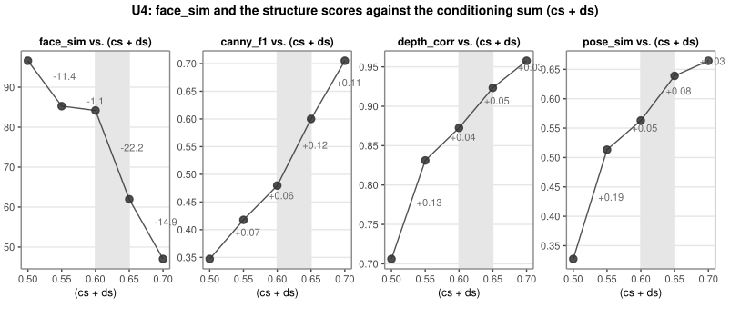
- Up to conditioning sum 0.60 identity loses moderately while template adherence gains steadily: Across the two steps inside the quadrant face_sim decreases on U4 and on U5.a while each of the structure scores increases at each step: the U4 steps differ from U5.a’s in size, the direction does not: on U4 every in-quadrant step, on U5.a each.
- Past conditioning sum 0.60 the change is drastic: Across conditioning sum 0.60 → 0.65 face_sim decreases nearly twice the largest in-quadrant step and further across 0.65 → 0.70; canny_f1’s gain of a step doubles with it, while depth_corr’s and pose_sim’s do not grow beyond the noise.
6.9.2 The identity cliff: per persona
Across the six personas of the U4 grid the cliff generalizes; however, how far each persona-LoRA decreases past it does not follow from how it scores inside it.
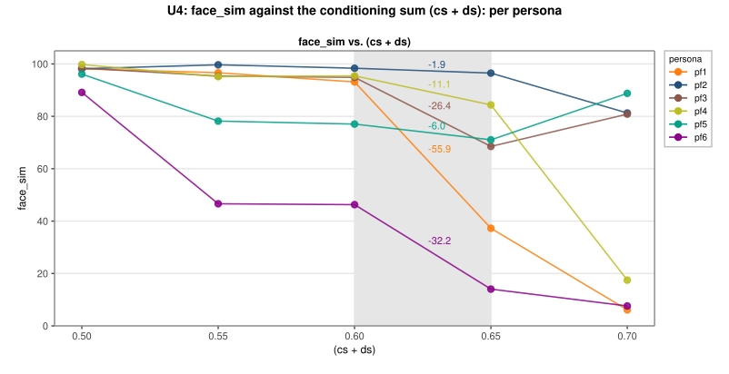
- Every persona-LoRA decreases at the cliff but the size varies:
- Every persona-LoRA loses face_sim across the cliff step at the same conditioning sum, pf1 and pf6 and the other four, by amounts spanning an order of magnitude.
- The loss cannot be related to the start: at sum 0.60 pf1 and pf2 are a few face_sim points apart, yet one loses most of its identity on the cliff step and the other almost none.
- The frozen quadrant retains identity for four of the six personas:
- Across the quadrant pf1, pf2, pf3 and pf4 stay high.
- pf5 and pf6 decrease across the first step alone, 0.50 → 0.55, and stay down at 0.60, so pf6’s cliff lies inside the quadrant, one step before the others’; the six are within about ten face_sim points at sum 0.50.
- The quadrant is one strength for all six, selected on their mean; the two that retain identity least at 0.50 are the two it fails.
6.10 What face_sim and the structure scores measure
This part sets the scale for reading the differences the stages report: how large a change in each score has to be before it is a measurement rather than noise, and where each score can be trusted. The five sections are in decreasing order of severity.
6.10.1 face_sim: disagreement among the reference photographs peaks on half-learned faces
| bin | n | median face_sim | median spread |
|---|---|---|---|
| 0–20 | 92 | 3.3 | 5.1 |
| 20–40 | 36 | 31.6 | 46.5 |
| 40–60 | 70 | 51.8 | 52.5 |
| 60–80 | 175 | 71.9 | 43.9 |
| 80–90 | 237 | 86.4 | 29.1 |
| 90–95 | 284 | 92.7 | 17.2 |
| 95–100 | 831 | 98.2 | 3.9 |
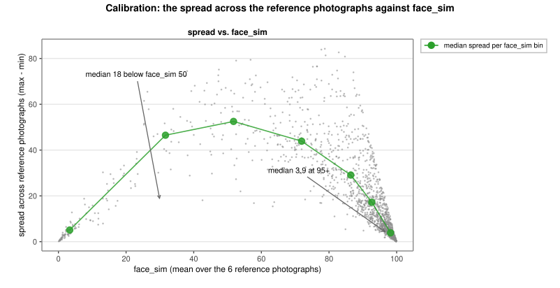
- The spread is an inverted U: The reference photographs are consistent that an unlearned face is not the persona and that a learned face is, a median spread of a few points at both ends of the scale; they disagree most about half-learned faces, where the spread is an order of magnitude wider.
- Most of this study’s claims are located where the reference photographs are consistent, but not all: Three of the quadrant’s four cells and U5.b have mean face_sim > 90, where the score no longer depends on the reference photograph; the fourth, (0.30, 0.30), nearest the cliff, averages a few points above the usable 80 over persona-LoRAs tens of points apart, and within it the spread is several times wider for pf5 and pf6, the half-learned faces, than for the other four; hence cliff-edge numbers carry their spread.
- The persona-LoRA means span 25 face_sim points: Over the study the mean face_sim runs from pf8, the lowest, to pm1, the highest; pf6, pf7 and pf8 are the three lowest.
6.10.2 The structure scores: the template dominates absolute depth_corr and pose_sim
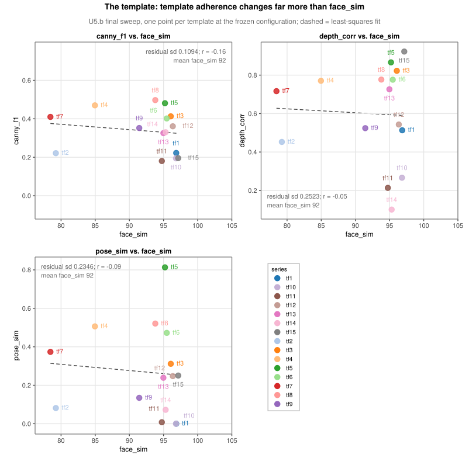
The template sets the absolute structure score more than the scale does, canny_f1 excepted: within one conditioning sum the six U5.a templates are further apart on pose_sim than the whole sum range changes their mean. Template difficulty does not predict face_sim, r = −0.09 across U5.b’s fifteen templates. Structure scores are therefore compared only within one template set, except for Section 6.8.2’s shape comparison.
6.10.3 depth_corr is the weakest discriminator
depth_corr separates broken cells from working ones and little else; no decision depends on it alone.
6.10.4 canny_f1, pose_sim: floors and ceilings anchor every claim
Between its floor and its self-score of 1.0, pose_sim gives the decision grids half the scale, so a 0.2-sized effect is resolvable at ten seeds; canny_f1’s floor is higher and its window tighter, but workable.
6.10.5 face_sim, canny_f1, depth_corr, pose_sim: the variance each factor explains
| factor | face_sim | canny_f1 | depth_corr | pose_sim |
|---|---|---|---|---|
| persona | 0.069 | 0.007 | 0.013 | 0.010 |
| template | 0.058 | 0.030 | 0.164 | 0.174 |
| seed | 0.007 | 0.008 | 0.019 | 0.007 |
| gs | 0.017 | 0.005 | 0.002 | 0.001 |
| ls | 0.002 | 0.001 | 0.000 | 0.000 |
| cs | 0.135 | 0.386 | 0.304 | 0.286 |
| ds | 0.027 | 0.028 | 0.030 | 0.026 |
| ps | 0.028 | 0.006 | 0.007 | 0.025 |
| ControlNet | 0.023 | 0.000 | 0.000 | 0.000 |
| R² (all factors) | 0.499 | 0.857 | 0.694 | 0.693 |
| factor | face_sim | canny_f1 | depth_corr | pose_sim |
|---|---|---|---|---|
| persona | 0.107 | 0.086 | 0.064 | 0.061 |
| template | 0.069 | 0.069 | 0.223 | 0.284 |
| seed | 0.014 | 0.067 | 0.077 | 0.045 |
| (cs, ds) cell | 0.050 | 0.168 | 0.155 | 0.144 |
| R² (all factors) | 0.240 | 0.389 | 0.519 | 0.534 |
| factor | face_sim | canny_f1 | depth_corr | pose_sim |
|---|---|---|---|---|
| persona | 0.185 | 0.103 | 0.105 | 0.044 |
| seed | 0.105 | 0.111 | 0.065 | 0.086 |
| cs | 0.194 | 0.549 | 0.416 | 0.480 |
| R² (all factors) | 0.463 | 0.772 | 0.608 | 0.615 |
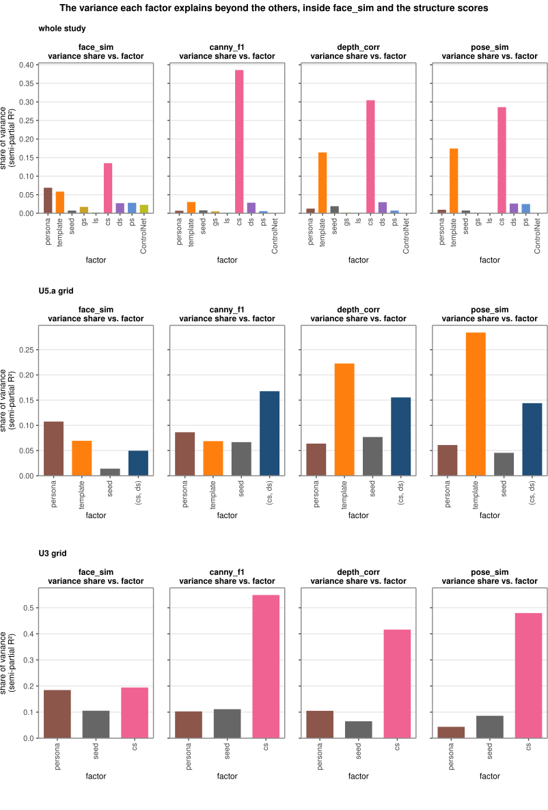
- Inside the frozen quadrant templates explain the structure scores the most while persona-LoRAs explain the face_sim the most: In the U5.a grid the template explains more of depth_corr’s and pose_sim’s variance than the cell does, and the persona-LoRA twice as much of face_sim’s as the cell; canny_f1 is the exception, where the cell explains twice what the template does.
- Across the whole study the canny scale is the largest single factor for every score: It explains twice as much of the structure scores’ variance as of face_sim’s, and the template is next for the structure scores. The whole-study shares are confounded by design, since pm1 alone carries ps and the two branches carry the implementation, so the grid shares are the ones to use.
7 Threats to Validity
7.1 Single-seed grid cells
Generation is stochastic per seed, so a cell-level comparison needs several seeds averaged, not one sample each [26]. Four findings were not re-run on several seeds, and they are the threat:
- The guidance and LoRA-scale freezes: Both depend on the same end-to-end direction across many independent series, never on a cell.
- The position of the cliff: No multi-seed sweep reaches past the quadrant, so where identity collapses depends on U4’s single-seed cells; the quadrant itself, one step inside, is the multi-seed part.
- The fifteen-template cell check: That the quadrant cannot be restricted to (cs 0.25, ds 0.30) depends on U5.b, one seed on each of its 105 images (Section 6.5).
The borrowing of sd_seed itself depends on two assumptions the study does not test: that a single-seed sweep’s seed is exchangeable with the seeds of the sweep that lends sd_seed, and that the seed noise at the lender’s nearest measured value transfers to the borrower’s own value.
7.2 Selection bias: the scores that select the frozen configuration also report it
The cell that comes out top of a noisy search is partly the one whose noise decreased on the high side [27], so a selected configuration’s value is trustworthy only when it is scored again on images that took no part in the choice. The state of each decision:
- The frozen quadrant is re-scored: Selected on U4’s single-seed cells and re-scored by U5.a on fresh seeds and templates. On the fresh seeds the quadrant’s order by conditioning sum persists and the selection luck at the top is small, so the top cell’s U4 value is an upper bound and the two sum-0.55 cells are not separable.
- The U6 band is re-scored on seeds: It was selected on U6.g’s single-seed cells, and U6.h retains those cells and adds two fresh seeds. On the fresh seeds alone the band’s face_sim mean is 97.3, against 98.4 on the seed it was selected on.
- The guidance and LoRA-scale freezes are not re-scored: The scores quoted for gs 6 and ls 1.0 are the single-seed U1 grids’ own, so the bias there is unmeasured and those values are upper bounds.
7.3 The usable line
The usable face_sim of 80 is the scorer’s default match threshold, not a value the study derived [28], so every decision that names it was recomputed with the usable line at 70, 75, 85 and 90. Every decision remains valid for a usable line ≤ 80; for a usable line > 80 the frozen quadrant starts losing cells, because its own face_sim means exceed the line by a few points.
7.4 Images with no detectable face
Fourteen of the 2,716 rows have no detectable face, score 0 on face_sim and stay in every mean. Removing them instead changes no decision.
7.5 Multiple comparisons
Across the sweeps the report quotes returns and treats an interval that excludes zero as evidence of a trade; 20 of the 27 intervals do (one of them negative), and 19 still do after Holm’s correction [29]; the one the correction removes is the negative one. No decision depends on one interval, nor on the single-seed change claims, which are judged one at a time against two sds of a difference without correction, so about one in twenty of those marked clear could be noise.
7.6 Face-model demographic differentials
Every face_sim value inherits the face model’s behaviour across demographics, and the documented differentials are large, up to two orders of magnitude in false-match rates across groups [30], [31]. The three lowest-scoring persona-LoRAs are the two East-Asian people, face_sim was not characterised per demographic here, and the reference sets differ in source, so cross-persona face_sim gaps may partly reflect the face model: per-persona claims lean on within-persona contrasts.
Whether face_sim separates personas on generated images was checked on the 457 images of U3, U4, U5.a, U5.b and C1.b that were also scored against a second persona’s reference set, as the share whose own set scores higher (Equation 3):
where \text{own}_m and \text{second}_m are the two face_sim values of image m, M = 457, and \mathbf{1}[\cdot] is 1 when the condition holds and 0 otherwise.
The own set scores higher on nearly every image, and on all but a few once the pf6-against-pf8 ties are set aside (the two share one reference set); arcface_sim gives the same share, and against all nine reference sets the own set scores highest on nearly every image it scores.
7.7 Sequential coverage
A staged search only generates where earlier stages pointed; regions scored out early were never revisited at later fidelity.
7.8 No persona-LoRA-free control
No sweep generates without a persona-LoRA, so the ControlNet’s structure transfer is never measured free of persona-LoRA interference; the U1 LoRA-scale series are the only probe of it, and they bound the direction, not the size.
Two more are of the same kind: no sweep generates with the persona-LoRA and no ControlNet, so the structure the template alone would have retained is unmeasured, and no other identity method than a trained LoRA was run, so the trade-off is measured for persona-LoRAs only.
7.9 Incommensurable stages
The two branches condition by different mechanisms, so their cs values are different quantities sharing a name and are never compared. What is compared is shape: the control-LoRA’s canny-only curves are steeper, and Section 6.8.2 does not attribute that to the implementation, because persona gender and template gender change together, so U6, C1.a and C1.b each differ from the lineage in at least two respects. The sets change the slope too: within U5.a the return varies fourfold across templates and sixfold across personas, so a cross-branch ratio of eight to ten is within what a change of sets produces.
8 Conclusion
- The study gives three optimal grids, one per control-mode set: Canny alone at cs ≈ 0.40 (ls 1.0, gs 6); canny with depth at the frozen quadrant, cs and ds at 0.25–0.3; all three at the conditioning sum band 0.80–0.85, the pose scale at 0.5–0.6. Each was selected on one seed and re-scored on several, the quadrant on both axes (Section 6.1, Section 6.4, Section 6.6).
- The identity cliff is the defining measurement: The structure scores alone would drive the scales higher in almost all the cases; face_sim collapses once the ControlNet scales sum to 0.65, and the frozen quadrant is one step inside that boundary, where the two axes trade best.
- One conditioning strength cannot fit every persona-LoRA: Every persona-LoRA decreases at the cliff, two of six clear of their single-seed noise, the loss spanning an order of magnitude and unrelated to identity before it; the weakest, pf6, degrades inside the quadrant. Hence best-of-N selection: generate across a set of conditioning strengths and retain the image the scores select.
- What transfers is the procedure, not the values: Cycle-consistency structure scoring against the template, face_sim against held-out reference photographs, floors, ceilings and seed noise before any claim, and a selection rule with two stops, the structure floors and the usable face_sim 80. The scale values belong to these pipelines and these persona-LoRAs, and stay there.
Run the search for your own ControlNet and your own persona-LoRAs. Do not start from the numbers in this report.
9 Appendix: the Union branch, sweep by sweep
A change marked in blue is clear of its seed noise, or has an interval that excludes zero; one marked in red, dotted is inside its seed noise, or has an interval that includes zero; the test behind each sweep is on its Evidence line.
9.1 The U1 stage: Guidance, LoRA and canny scales on one persona
9.1.1 U1.b — the second half of the coarse grid: the same behaviour persists
| Branch | Stage | Sweep Id |
Sweep variables |
Images | Persona | Template | Seed | gs | ls | cs | ds | ps |
|---|---|---|---|---|---|---|---|---|---|---|---|---|
| Union | U1 | U1.b | gs, ls, cs | 27 | pf1 | tf4 | 33 | 2, 4, 6 | 0.9, 1.1, 1.3 | 0.4, 0.6, 0.8 | — | — |
- Evidence: Single-seed, one seed per cell; every change is measured against the seed noise borrowed from U2, its two seed sweeps pooled.
| gs | ls | cs | face_sim | canny_f1 | depth_corr | pose_sim |
|---|---|---|---|---|---|---|
| 2 | 0.9 | 0.4 | 76.0 | 0.27 | 0.75 | 0.39 |
| 2 | 0.9 | 0.6 | 0.1 | 0.26 | 0.94 | 0.69 |
| 2 | 0.9 | 0.8 | 1.0 | 0.59 | 0.96 | 0.72 |
| 2 | 1.1 | 0.4 | 70.3 | 0.27 | 0.78 | 0.36 |
| 2 | 1.1 | 0.6 | 0.0 | 0.21 | 0.92 | 0.63 |
| 2 | 1.1 | 0.8 | 0.4 | 0.53 | 0.96 | 0.73 |
| 2 | 1.3 | 0.4 | 68.5 | 0.26 | 0.76 | 0.33 |
| 2 | 1.3 | 0.6 | 0.0 | 0.16 | 0.88 | 0.56 |
| 2 | 1.3 | 0.8 | 0.4 | 0.44 | 0.94 | 0.74 |
| 4 | 0.9 | 0.4 | 96.7 | 0.32 | 0.77 | 0.39 |
| 4 | 0.9 | 0.6 | 8.2 | 0.35 | 0.94 | 0.68 |
| 4 | 0.9 | 0.8 | 5.2 | 0.84 | 0.95 | 0.74 |
| 4 | 1.1 | 0.4 | 82.2 | 0.29 | 0.73 | 0.36 |
| 4 | 1.1 | 0.6 | 0.4 | 0.22 | 0.92 | 0.67 |
| 4 | 1.1 | 0.8 | 2.9 | 0.81 | 0.93 | 0.75 |
| 4 | 1.3 | 0.4 | 77.7 | 0.23 | 0.74 | 0.35 |
| 4 | 1.3 | 0.6 | 0.4 | 0.15 | 0.89 | 0.68 |
| 4 | 1.3 | 0.8 | 1.8 | 0.78 | 0.91 | 0.75 |
| 6 | 0.9 | 0.4 | 96.9 | 0.40 | 0.72 | 0.39 |
| 6 | 0.9 | 0.6 | 63.8 | 0.50 | 0.93 | 0.73 |
| 6 | 0.9 | 0.8 | 9.4 | 0.91 | 0.96 | 0.73 |
| 6 | 1.1 | 0.4 | 97.1 | 0.35 | 0.78 | 0.36 |
| 6 | 1.1 | 0.6 | 72.9 | 0.43 | 0.90 | 0.73 |
| 6 | 1.1 | 0.8 | 4.8 | 0.91 | 0.95 | 0.71 |
| 6 | 1.3 | 0.4 | 97.6 | 0.28 | 0.76 | 0.34 |
| 6 | 1.3 | 0.6 | 23.4 | 0.29 | 0.93 | 0.71 |
| 6 | 1.3 | 0.8 | 2.7 | 0.90 | 0.92 | 0.76 |
| factor | value | n | face_sim | canny_f1 | depth_corr | pose_sim |
|---|---|---|---|---|---|---|
| gs | 2 | 9 | 24.1 | 0.332 | 0.876 | 0.574 |
| gs | 4 | 9 | 30.6 | 0.444 | 0.863 | 0.596 |
| gs | 6 | 9 | 52.1 | 0.550 | 0.872 | 0.608 |
| ls | 0.9 | 9 | 39.7 | 0.492 | 0.878 | 0.608 |
| ls | 1.1 | 9 | 36.8 | 0.448 | 0.873 | 0.591 |
| ls | 1.3 | 9 | 30.3 | 0.387 | 0.860 | 0.580 |
| cs | 0.4 | 9 | 84.8 | 0.297 | 0.753 | 0.363 |
| cs | 0.6 | 9 | 18.8 | 0.286 | 0.917 | 0.677 |
| cs | 0.8 | 9 | 3.2 | 0.744 | 0.941 | 0.737 |
9.1.1.1 Guidance scale
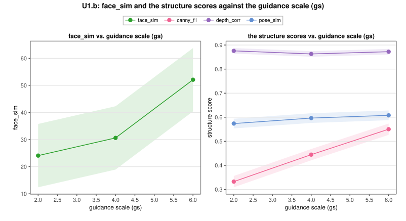
- Identity and edge fidelity increase, higher is better: Increasing gs 2 → 4 → 6 doubles face_sim and increases canny_f1 by two thirds, while depth_corr and pose_sim stay constant, so there is no trade-off.
9.1.1.2 LoRA scale
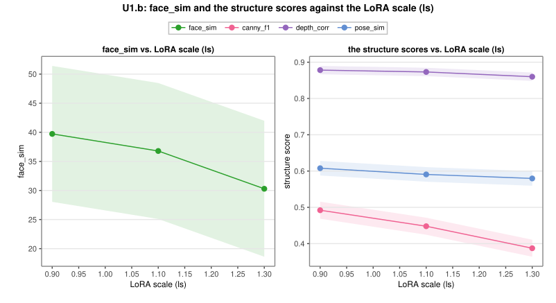
- Mixed in point value, neither direction from 1.0 is preferred, refine closer to it:
- Increasing ls 0.9 → 1.1 → 1.3 decreases face_sim a few points then a few more and canny_f1 a few hundredths then a few more while depth_corr and pose_sim stay constant.
- Every step is inside the structure scores’ seed noise, while the whole-range canny_f1 decrease is clear of it.
9.1.1.3 Canny scale
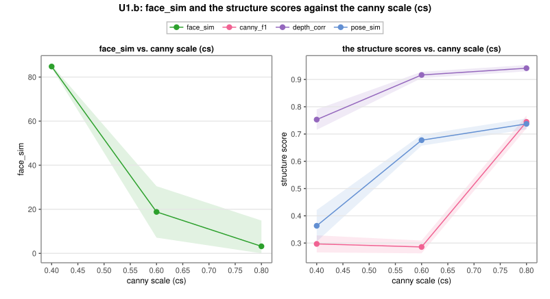
- The trade-off recurs at the offset values: Identity collapses beyond cs 0.5:
- Increasing cs 0.4 → 0.6 collapses face_sim while canny_f1 stays constant and depth_corr and pose_sim increase.
- Increasing cs 0.6 → 0.8 decreases face_sim further while canny_f1 more than doubles, depth_corr changes and pose_sim increases: the two steps increase different structure scores.
- Identity is high through cs 0.4 and collapses by 0.5, so the refinements are around 0.4 and reach to 0.47, below where the collapse begins rather than centred on the coarse values.
9.1.1.4 Canny scale dissected further
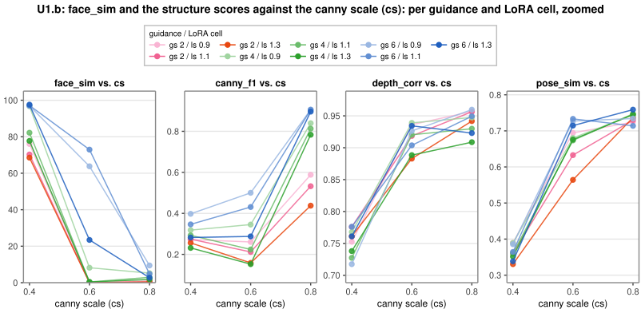
- face_sim: collapse is in every series here too:
- The scores order by guidance throughout: at every canny value the higher guidance series retains more identity at the same LoRA scale.
- Within a guidance value, and wherever the series separate, ls 1.3 retains the least.
- Structure scores: Every series increases here too:
- On canny_f1 at the top of the range every gs 2 series is below every gs 4 and gs 6 series, while depth_corr and pose_sim reach the same value whatever the guidance.
- Within a guidance value, and wherever the series separate, higher ls gives lower canny_f1, with depth and pose separating less.
9.1.2 U1.c — the first refinement: the trade-off persists at a quarter of the coarse step
| Branch | Stage | Sweep Id |
Sweep variables |
Images | Persona | Template | Seed | gs | ls | cs | ds | ps |
|---|---|---|---|---|---|---|---|---|---|---|---|---|
| Union | U1 | U1.c | gs, ls, cs | 27 | pf1 | tf4 | 33 | 4, 5, 6 | 0.9, 1, 1.1 | 0.35, 0.4, 0.45 | — | — |
- Evidence: Single-seed, one seed per cell; every change is measured against the seed noise borrowed from U2, its two seed sweeps pooled.
| gs | ls | cs | face_sim | canny_f1 | depth_corr | pose_sim |
|---|---|---|---|---|---|---|
| 4 | 0.9 | 0.35 | 97.4 | 0.20 | 0.72 | 0.30 |
| 4 | 0.9 | 0.4 | 96.7 | 0.32 | 0.77 | 0.39 |
| 4 | 0.9 | 0.45 | 82.0 | 0.35 | 0.50 | 0.40 |
| 4 | 1 | 0.35 | 89.9 | 0.23 | 0.70 | 0.28 |
| 4 | 1 | 0.4 | 98.1 | 0.30 | 0.76 | 0.39 |
| 4 | 1 | 0.45 | 89.3 | 0.31 | 0.62 | 0.44 |
| 4 | 1.1 | 0.35 | 95.7 | 0.24 | 0.70 | 0.26 |
| 4 | 1.1 | 0.4 | 82.2 | 0.29 | 0.73 | 0.36 |
| 4 | 1.1 | 0.45 | 89.9 | 0.25 | 0.76 | 0.42 |
| 5 | 0.9 | 0.35 | 97.3 | 0.33 | 0.55 | 0.46 |
| 5 | 0.9 | 0.4 | 95.6 | 0.32 | 0.66 | 0.38 |
| 5 | 0.9 | 0.45 | 76.3 | 0.36 | 0.61 | 0.40 |
| 5 | 1 | 0.35 | 97.5 | 0.31 | 0.44 | 0.44 |
| 5 | 1 | 0.4 | 97.3 | 0.31 | 0.62 | 0.41 |
| 5 | 1 | 0.45 | 80.9 | 0.37 | 0.60 | 0.41 |
| 5 | 1.1 | 0.35 | 97.0 | 0.27 | 0.72 | 0.33 |
| 5 | 1.1 | 0.4 | 87.7 | 0.32 | 0.58 | 0.42 |
| 5 | 1.1 | 0.45 | 84.7 | 0.35 | 0.62 | 0.33 |
| 6 | 0.9 | 0.35 | 98.7 | 0.23 | 0.75 | 0.27 |
| 6 | 0.9 | 0.4 | 96.9 | 0.40 | 0.72 | 0.39 |
| 6 | 0.9 | 0.45 | 92.2 | 0.42 | 0.64 | 0.42 |
| 6 | 1 | 0.35 | 98.3 | 0.21 | 0.75 | 0.24 |
| 6 | 1 | 0.4 | 96.4 | 0.39 | 0.71 | 0.39 |
| 6 | 1 | 0.45 | 94.2 | 0.41 | 0.54 | 0.41 |
| 6 | 1.1 | 0.35 | 98.4 | 0.21 | 0.72 | 0.24 |
| 6 | 1.1 | 0.4 | 97.1 | 0.35 | 0.78 | 0.36 |
| 6 | 1.1 | 0.45 | 94.5 | 0.38 | 0.57 | 0.39 |
| factor | value | n | face_sim | canny_f1 | depth_corr | pose_sim |
|---|---|---|---|---|---|---|
| gs | 4 | 9 | 91.3 | 0.277 | 0.694 | 0.358 |
| gs | 5 | 9 | 90.5 | 0.327 | 0.599 | 0.398 |
| gs | 6 | 9 | 96.3 | 0.334 | 0.686 | 0.343 |
| ls | 0.9 | 9 | 92.6 | 0.326 | 0.658 | 0.376 |
| ls | 1 | 9 | 93.6 | 0.316 | 0.637 | 0.378 |
| ls | 1.1 | 9 | 91.9 | 0.296 | 0.685 | 0.346 |
| cs | 0.35 | 9 | 96.7 | 0.248 | 0.672 | 0.313 |
| cs | 0.4 | 9 | 94.2 | 0.334 | 0.702 | 0.388 |
| cs | 0.45 | 9 | 87.1 | 0.356 | 0.606 | 0.399 |
9.1.2.1 Guidance scale
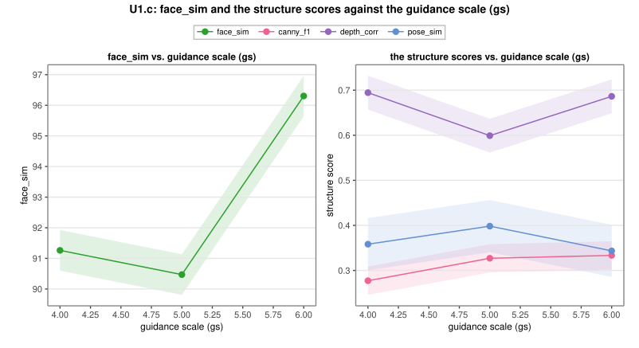
- Identity increases, template adherence stays constant, carried one step to 7:
- Increasing gs 4 → 5 → 6, face_sim does not change then increases, while each of the structure scores changes.
- Identity is highest at gs 6, with no template-adherence loss, so U1.d carries it one step further to 7.
9.1.2.2 LoRA scale
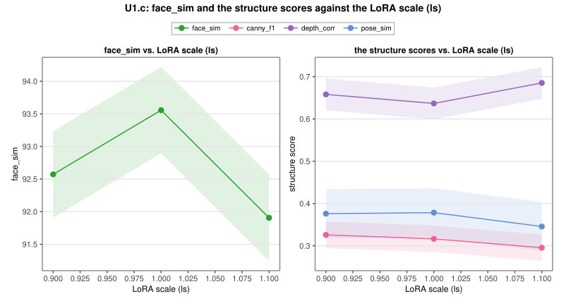
- No value separates from 1.0 in either direction, nothing changes:
- Increasing ls 0.9 → 1.0 → 1.1 neither increases nor decreases any score beyond its seed noise: face_sim spans under two points and canny_f1 a few hundredths across the three values.
9.1.2.3 Canny scale
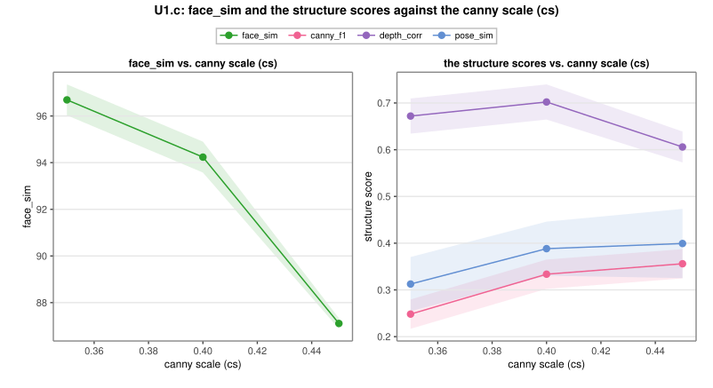
- The trade-off persists at 0.05 steps:
- Increasing cs 0.35 → 0.40 decreases face_sim a few points while the structure scores increase.
- Increasing cs 0.40 → 0.45 decreases face_sim nearly thrice as much while canny_f1 increases, depth_corr decreases and pose_sim increases by a hundredth.
9.1.2.4 The structure scores against face_sim, as the canny scale increases
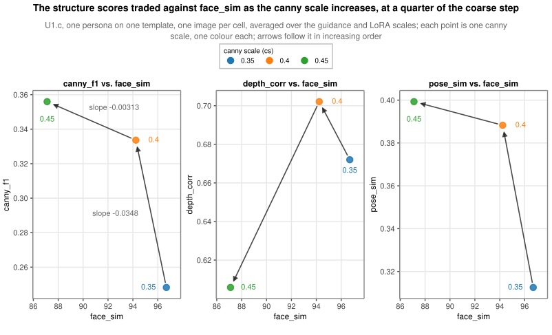
- Refine cs around 0.4 as the resolved identity decreases above it and the canny floor is below it:
- The first step’s canny_f1 return is ten times the second’s, 0.035 against 0.003.
- Past cs 0.40 the face_sim decrease puts only one cell under the usable 80.
- At cs 0.35 the nine cells’ mean canny_f1 is under its 0.277 floor (Table 2) while at 0.40 it clears it.
- As cs 0.40 is bounded on both sides, the range is restricted to 0.39–0.43 around it.
9.1.3 U1.d — the second refinement: guidance and the LoRA scale behave as before; 0.02 canny steps resolve nothing
| Branch | Stage | Sweep Id |
Sweep variables |
Images | Persona | Template | Seed | gs | ls | cs | ds | ps |
|---|---|---|---|---|---|---|---|---|---|---|---|---|
| Union | U1 | U1.d | gs, ls, cs | 27 | pf1 | tf4 | 33 | 5, 6, 7 | 0.95, 1, 1.05 | 0.39, 0.41, 0.43 | — | — |
- Evidence: Single-seed, one seed per cell; every change is measured against the seed noise borrowed from U2, its two seed sweeps pooled.
| gs | ls | cs | face_sim | canny_f1 | depth_corr | pose_sim |
|---|---|---|---|---|---|---|
| 5 | 0.95 | 0.39 | 92.4 | 0.32 | 0.59 | 0.46 |
| 5 | 0.95 | 0.41 | 96.8 | 0.34 | 0.68 | 0.37 |
| 5 | 0.95 | 0.43 | 88.1 | 0.36 | 0.68 | 0.35 |
| 5 | 1 | 0.39 | 92.9 | 0.30 | 0.57 | 0.44 |
| 5 | 1 | 0.41 | 95.6 | 0.32 | 0.66 | 0.44 |
| 5 | 1 | 0.43 | 90.7 | 0.39 | 0.67 | 0.35 |
| 5 | 1.05 | 0.39 | 91.3 | 0.31 | 0.57 | 0.44 |
| 5 | 1.05 | 0.41 | 97.4 | 0.34 | 0.65 | 0.42 |
| 5 | 1.05 | 0.43 | 89.0 | 0.34 | 0.68 | 0.41 |
| 6 | 0.95 | 0.39 | 95.0 | 0.38 | 0.74 | 0.34 |
| 6 | 0.95 | 0.41 | 96.6 | 0.38 | 0.47 | 0.40 |
| 6 | 0.95 | 0.43 | 92.3 | 0.42 | 0.55 | 0.37 |
| 6 | 1 | 0.39 | 96.4 | 0.39 | 0.75 | 0.36 |
| 6 | 1 | 0.41 | 96.7 | 0.38 | 0.50 | 0.39 |
| 6 | 1 | 0.43 | 96.6 | 0.38 | 0.52 | 0.39 |
| 6 | 1.05 | 0.39 | 94.6 | 0.35 | 0.76 | 0.35 |
| 6 | 1.05 | 0.41 | 97.8 | 0.37 | 0.57 | 0.39 |
| 6 | 1.05 | 0.43 | 95.1 | 0.37 | 0.56 | 0.39 |
| 7 | 0.95 | 0.39 | 96.7 | 0.43 | 0.72 | 0.38 |
| 7 | 0.95 | 0.41 | 96.4 | 0.46 | 0.75 | 0.38 |
| 7 | 0.95 | 0.43 | 98.2 | 0.46 | 0.79 | 0.43 |
| 7 | 1 | 0.39 | 97.3 | 0.44 | 0.73 | 0.38 |
| 7 | 1 | 0.41 | 96.3 | 0.45 | 0.74 | 0.39 |
| 7 | 1 | 0.43 | 97.4 | 0.45 | 0.79 | 0.43 |
| 7 | 1.05 | 0.39 | 98.2 | 0.44 | 0.72 | 0.39 |
| 7 | 1.05 | 0.41 | 97.7 | 0.44 | 0.75 | 0.39 |
| 7 | 1.05 | 0.43 | 97.1 | 0.45 | 0.79 | 0.44 |
| factor | value | n | face_sim | canny_f1 | depth_corr | pose_sim |
|---|---|---|---|---|---|---|
| gs | 5 | 9 | 92.7 | 0.336 | 0.639 | 0.407 |
| gs | 6 | 9 | 95.7 | 0.380 | 0.602 | 0.376 |
| gs | 7 | 9 | 97.3 | 0.446 | 0.752 | 0.401 |
| ls | 0.95 | 9 | 94.7 | 0.393 | 0.663 | 0.388 |
| ls | 1 | 9 | 95.6 | 0.390 | 0.659 | 0.395 |
| ls | 1.05 | 9 | 95.4 | 0.379 | 0.671 | 0.401 |
| cs | 0.39 | 9 | 95.0 | 0.373 | 0.684 | 0.392 |
| cs | 0.41 | 9 | 96.8 | 0.387 | 0.642 | 0.397 |
| cs | 0.43 | 9 | 93.8 | 0.402 | 0.668 | 0.396 |
9.1.3.1 Guidance scale
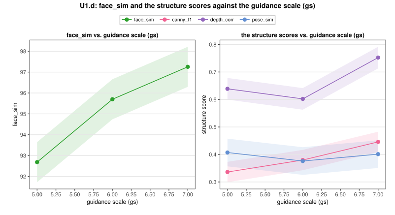
- Increasing to 7, majority of gains not clear of noise, gs 6 stays the best:
- Increasing gs 5 → 6 increases face_sim and canny_f1 while depth_corr dips.
- Increasing gs 6 → 7 increases face_sim and canny_f1 and depth_corr, and pose_sim stays constant, so 6 stays as the best value.
9.1.3.2 LoRA scale
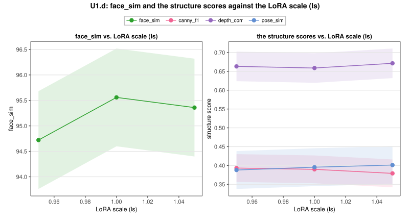
- No value separates from 1.0 in either direction, ls variation removed:
- Increasing ls 0.95 → 1.00 → 1.05 neither increases nor decreases any score beyond its seed noise: face_sim spans under a point and each of the structure scores one hundredth.
9.1.3.3 Canny scale
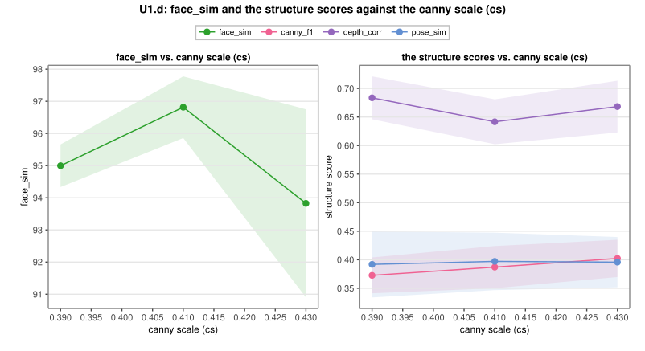
- 0.02 steps are too small to resolve the trade-off:
- Increasing cs 0.39 → 0.41 → 0.43, face_sim increases and then decreases, while canny_f1 increases at both steps and depth_corr and pose_sim change.
- U1.e extends the range past U1.d’s top to 0.47, where the descent can be seen, at finer steps.
9.1.4 U1.e — the last refinement: identity decreases 0.01 at a time where template adherence has stopped increasing
| Branch | Stage | Sweep Id |
Sweep variables |
Images | Persona | Template | Seed | gs | ls | cs | ds | ps |
|---|---|---|---|---|---|---|---|---|---|---|---|---|
| Union | U1 | U1.e | gs, cs | 24 | pf1 | tf4 | 33 | 5, 5.5, 6 | 1 | 0.4, 0.41, .. 0.47 | — | — |
- cs: {0.4, 0.41, 0.42, 0.43, 0.44, 0.45, 0.46, 0.47}
- Evidence: Single-seed, one seed per cell; every change is measured against the seed noise borrowed from U2, its two seed sweeps pooled.
| gs | ls | cs | face_sim | canny_f1 | depth_corr | pose_sim |
|---|---|---|---|---|---|---|
| 5 | 1 | 0.4 | 97.3 | 0.31 | 0.62 | 0.41 |
| 5 | 1 | 0.41 | 95.6 | 0.32 | 0.66 | 0.44 |
| 5 | 1 | 0.42 | 96.1 | 0.34 | 0.67 | 0.44 |
| 5 | 1 | 0.43 | 90.7 | 0.39 | 0.67 | 0.35 |
| 5 | 1 | 0.44 | 86.4 | 0.37 | 0.64 | 0.33 |
| 5 | 1 | 0.45 | 80.9 | 0.37 | 0.60 | 0.41 |
| 5 | 1 | 0.46 | 81.0 | 0.37 | 0.63 | 0.40 |
| 5 | 1 | 0.47 | 82.1 | 0.36 | 0.64 | 0.41 |
| 5.5 | 1 | 0.4 | 97.4 | 0.39 | 0.61 | 0.37 |
| 5.5 | 1 | 0.41 | 95.6 | 0.39 | 0.61 | 0.36 |
| 5.5 | 1 | 0.42 | 95.3 | 0.38 | 0.52 | 0.43 |
| 5.5 | 1 | 0.43 | 92.8 | 0.39 | 0.59 | 0.42 |
| 5.5 | 1 | 0.44 | 92.8 | 0.39 | 0.63 | 0.42 |
| 5.5 | 1 | 0.45 | 90.0 | 0.38 | 0.61 | 0.42 |
| 5.5 | 1 | 0.46 | 92.3 | 0.41 | 0.56 | 0.44 |
| 5.5 | 1 | 0.47 | 91.4 | 0.39 | 0.71 | 0.40 |
| 6 | 1 | 0.4 | 96.4 | 0.39 | 0.71 | 0.39 |
| 6 | 1 | 0.41 | 96.7 | 0.38 | 0.50 | 0.39 |
| 6 | 1 | 0.42 | 95.5 | 0.39 | 0.53 | 0.40 |
| 6 | 1 | 0.43 | 96.6 | 0.38 | 0.52 | 0.39 |
| 6 | 1 | 0.44 | 90.7 | 0.38 | 0.52 | 0.40 |
| 6 | 1 | 0.45 | 94.2 | 0.41 | 0.54 | 0.41 |
| 6 | 1 | 0.46 | 94.5 | 0.40 | 0.56 | 0.40 |
| 6 | 1 | 0.47 | 92.8 | 0.41 | 0.66 | 0.43 |
| factor | value | n | face_sim | canny_f1 | depth_corr | pose_sim |
|---|---|---|---|---|---|---|
| gs | 5 | 8 | 88.8 | 0.355 | 0.641 | 0.398 |
| gs | 5.5 | 8 | 93.5 | 0.390 | 0.604 | 0.407 |
| gs | 6 | 8 | 94.7 | 0.393 | 0.567 | 0.401 |
| cs | 0.4 | 3 | 97.0 | 0.365 | 0.648 | 0.389 |
| cs | 0.41 | 3 | 96.0 | 0.365 | 0.590 | 0.397 |
| cs | 0.42 | 3 | 95.6 | 0.370 | 0.571 | 0.424 |
| cs | 0.43 | 3 | 93.4 | 0.390 | 0.594 | 0.384 |
| cs | 0.44 | 3 | 90.0 | 0.380 | 0.598 | 0.384 |
| cs | 0.45 | 3 | 88.4 | 0.385 | 0.581 | 0.412 |
| cs | 0.46 | 3 | 89.2 | 0.394 | 0.580 | 0.414 |
| cs | 0.47 | 3 | 88.8 | 0.387 | 0.672 | 0.411 |
9.1.4.1 Guidance scale
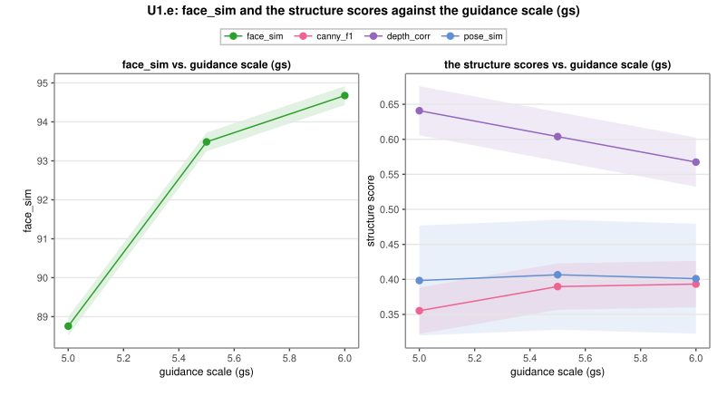
- Identity increases, edge and pose stay constant, gs 6 is frozen:
- Increasing gs 5 → 5.5 → 6 increases face_sim, most of the gain in the first step, while each of the structure scores stays constant.
9.1.4.2 Canny scale
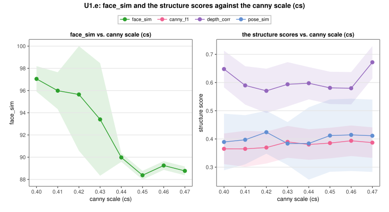
- Identity decreasing with flat template adherence, cs ≈ 0.40 is carried forward:
- Across cs 0.40 → 0.45 face_sim decreases nine points, and across 0.45 → 0.47 it stays constant.
- The structure scores resolve nothing anywhere in the sweep: over all eight values canny_f1 and pose_sim span a few hundredths and depth_corr a tenth.
The U1 decision is in Section 6.1.
9.2 The U5 stage: The frozen configuration at scale
9.2.1 U5.b — one cell across fifteen templates: the cell that exits the quadrant does not transfer on four of them at every control mode
| Branch | Stage | Sweep Id |
Sweep variables |
Images | Persona | Template | Seed | gs | ls | cs | ds | ps |
|---|---|---|---|---|---|---|---|---|---|---|---|---|
| Union | U5 | U5.b | pf, tf | 105 | pf1–pf5 pf7–pf8 |
tf1–tf15 | 1 | 6 | 1 | 0.25 | 0.3 | — |
- The sweep varies no scale: it asks whether one fixed cell from the quadrant delivers on templates the search never generated on. Had it persisted, the quadrant would have collapsed to that single value.
- Evidence: Single-seed, one seed per cell; every change is measured against the seed noise borrowed from U5.a.
| template | n | face_sim | canny_f1 | depth_corr | pose_sim |
|---|---|---|---|---|---|
| tf1 | 7 | 96.9 | 0.222 | 0.513 | 0.000 |
| tf10 | 7 | 96.8 | 0.194 | 0.266 | 0.000 |
| tf11 | 7 | 94.8 | 0.180 | 0.214 | 0.008 |
| tf12 | 7 | 96.4 | 0.361 | 0.543 | 0.248 |
| tf13 | 7 | 95.0 | 0.326 | 0.726 | 0.239 |
| tf14 | 7 | 95.3 | 0.330 | 0.101 | 0.072 |
| tf15 | 7 | 97.2 | 0.195 | 0.923 | 0.251 |
| tf2 | 7 | 79.2 | 0.221 | 0.452 | 0.082 |
| tf3 | 7 | 96.1 | 0.413 | 0.822 | 0.312 |
| tf4 | 7 | 85.0 | 0.470 | 0.770 | 0.506 |
| tf5 | 7 | 95.2 | 0.481 | 0.866 | 0.813 |
| tf6 | 7 | 95.5 | 0.402 | 0.776 | 0.472 |
| tf7 | 7 | 78.4 | 0.410 | 0.717 | 0.374 |
| tf8 | 7 | 93.8 | 0.497 | 0.777 | 0.521 |
| tf9 | 7 | 91.4 | 0.352 | 0.524 | 0.135 |
| persona | n | face_sim | canny_f1 | depth_corr | pose_sim |
|---|---|---|---|---|---|
| pf1 | 1 | 99.8 | 0.129 | 0.420 | 0.008 |
| pf2 | 1 | 99.8 | 0.133 | 0.120 | 0.012 |
| pf3 | 1 | 97.4 | 0.221 | 0.235 | 0.020 |
| pf4 | 1 | 99.8 | 0.254 | 0.180 | 0.010 |
| pf5 | 1 | 92.9 | 0.202 | 0.358 | 0.000 |
| pf7 | 1 | 95.2 | 0.074 | 0.180 | 0.001 |
| pf8 | 1 | 78.3 | 0.251 | 0.001 | 0.003 |
9.2.1.1 Template
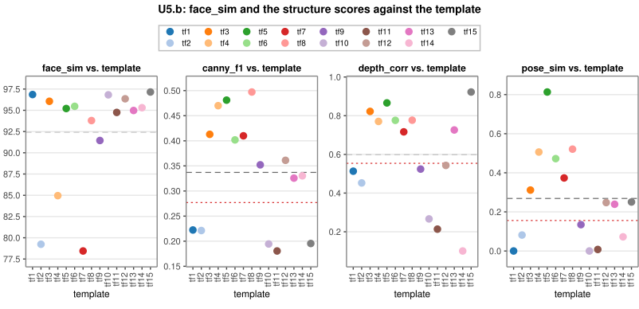
- Identity mostly consistent but structures vary a lot:
- Over the sweep face_sim averages 92.5, > 90 at twelve of fifteen templates; tf7 and tf2 are under the usable 80 by a point or two.
- The structure scores split the set: per template each runs from under its floor to high, five templates near zero on pose_sim.
- tf1, tf2, tf10 and tf11 are under all three floors, failing on every control mode at once; the rest of the low end fails on one or two.
9.2.1.2 tf11 dissected further
9.2.1.2.1 Persona
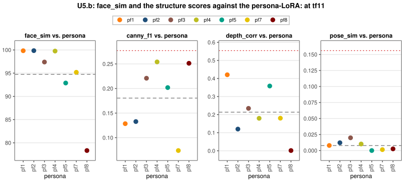
- tf11 fails on each of the structure scores, not on identity:
- All seven persona-LoRAs are usable on identity except pf8, a point or two under the usable 80.
- All seven are under every structure floor, canny_f1 at about two thirds of its floor, depth_corr under half and pose_sim near zero.
9.2.1.2.2 Cycle consistency for 3 personas
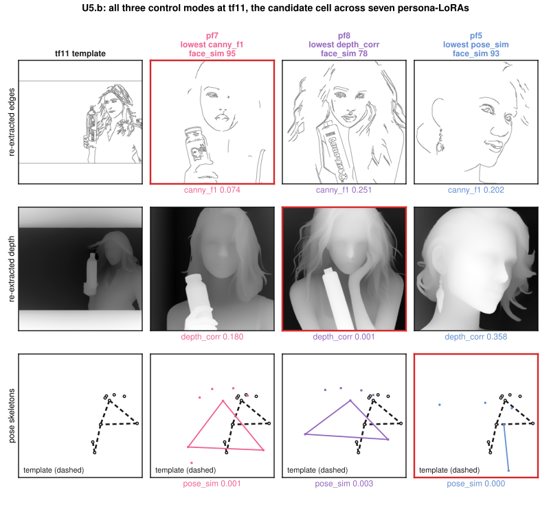
- pf7, lowest canny_f1: its edges share nothing with the template’s: A portrait on a plain wall, identity usable, the bottle low at the chest where the template holds it up beside the head. The template’s lines are an arm, a bottle held away from the body and a hard background edge; the generation’s are a face on an empty wall, so almost none coincide.
- pf8, lowest depth_corr: flat where the template has relief: A portrait leaning on one hand with a large tube across the chest, identity under the usable 80. canny_f1 comes near its floor, since the tube and hand supply edges where the template has an arm and a bottle; depth fails because the tube lies at the face’s distance, where the template separates figure, held-out bottle and flat backdrop, so the relief maps coincide nowhere.
- pf5, lowest pose_sim: a pose mismatch, not a missing pose skeleton: A portrait turned to the side with no product, identity usable. canny_f1 and depth_corr come nearer their floors; the extractor finds a person in both, but the template’s is a whole upper body with an arm up and the generation’s a head and shoulders, so no keypoint pair meets.
The U5 decision is in Section 6.5.
9.3 The U6 stage: Adding pose conditioning and the band
9.3.1 U6.b — all scales shifted up by 0.1
| Branch | Stage | Sweep Id |
Sweep variables |
Images | Persona | Template | Seed | gs | ls | cs | ds | ps |
|---|---|---|---|---|---|---|---|---|---|---|---|---|
| Union | U6 | U6.b | cs, ds, ps | 21 | pm1 | tm1 | 1 | 6 | 1 | 0.2, 0.3, 0.4 | 0.2, 0.3, 0.4 | 0.5, 0.6, 0.7 |
- Evidence: Single-seed, one seed per cell; every change is measured against the seed noise borrowed from U6.h.
| factor | value | n | face_sim | canny_f1 | depth_corr | pose_sim |
|---|---|---|---|---|---|---|
| cs | 0.2 | 8 | 95.1 | 0.463 | 0.769 | 0.791 |
| cs | 0.3 | 7 | 89.5 | 0.524 | 0.762 | 0.800 |
| cs | 0.4 | 6 | 83.1 | 0.610 | 0.833 | 0.803 |
| ds | 0.2 | 7 | 93.6 | 0.486 | 0.873 | 0.777 |
| ds | 0.3 | 8 | 89.4 | 0.517 | 0.775 | 0.799 |
| ds | 0.4 | 6 | 85.8 | 0.582 | 0.697 | 0.819 |
| ps | 0.5 | 9 | 91.8 | 0.542 | 0.789 | 0.799 |
| ps | 0.6 | 9 | 87.4 | 0.525 | 0.788 | 0.795 |
| ps | 0.7 | 3 | 91.1 | 0.477 | 0.766 | 0.802 |
| conditioning sum | n | face_sim | canny_f1 | depth_corr | pose_sim |
|---|---|---|---|---|---|
| 0.9 | 1 | 98.5 | 0.451 | 0.893 | 0.773 |
| 1 | 3 | 96.2 | 0.477 | 0.875 | 0.769 |
| 1.1 | 6 | 93.5 | 0.497 | 0.777 | 0.794 |
| 1.2 | 6 | 88.9 | 0.512 | 0.736 | 0.807 |
| 1.3 | 4 | 81.9 | 0.594 | 0.765 | 0.813 |
| 1.4 | 1 | 75.9 | 0.715 | 0.825 | 0.812 |
9.3.1.1 Conditioning sum
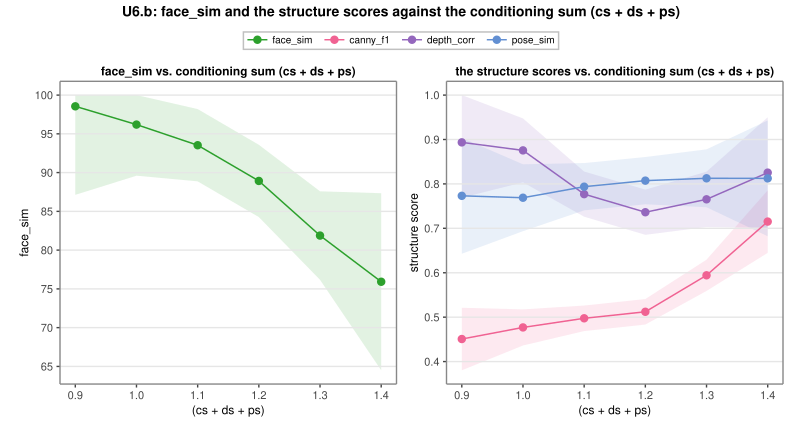
- face_sim: Changing the conditioning sum 0.9 → 1.4, the per-sum mean decreases 98.5 → 75.9, inside the borrowed seed noise.
- canny_f1: Changing the conditioning sum 0.9 → 1.4, canny_f1 is the only score still responding, increasing 0.451 → 0.715.
- depth_corr: No trend over the same range.
- pose_sim: Flat over the same range.
- Together: Two of the structure scores have saturated while identity has started to decline.
- What the next sweep changed: With identity degraded rather than collapsed and canny_f1 not flattened, the extension continues: U6.c increases all three scales, three values each.
9.3.2 U6.c — all three scales at their highest values
| Branch | Stage | Sweep Id |
Sweep variables |
Images | Persona | Template | Seed | gs | ls | cs | ds | ps |
|---|---|---|---|---|---|---|---|---|---|---|---|---|
| Union | U6 | U6.c | cs, ds, ps | 24 | pm1 | tm1 | 1 | 6 | 1 | 0.1, 0.3, 0.5 | 0.1, 0.3, 0.5 | 0.5, 0.7, 0.9 |
- Evidence: Single-seed, one seed per cell; every change is measured against the seed noise borrowed from U6.h.
| factor | value | n | face_sim | canny_f1 | depth_corr | pose_sim |
|---|---|---|---|---|---|---|
| cs | 0.1 | 9 | 74.7 | 0.418 | 0.747 | 0.758 |
| cs | 0.3 | 9 | 71.1 | 0.544 | 0.832 | 0.785 |
| cs | 0.5 | 6 | 71.6 | 0.709 | 0.921 | 0.808 |
| ds | 0.1 | 8 | 86.1 | 0.431 | 0.854 | 0.756 |
| ds | 0.3 | 8 | 79.0 | 0.554 | 0.823 | 0.782 |
| ds | 0.5 | 8 | 52.7 | 0.628 | 0.790 | 0.803 |
| ps | 0.5 | 9 | 89.7 | 0.567 | 0.829 | 0.773 |
| ps | 0.7 | 9 | 74.8 | 0.555 | 0.834 | 0.795 |
| ps | 0.9 | 6 | 43.6 | 0.468 | 0.795 | 0.770 |
| conditioning sum | n | face_sim | canny_f1 | depth_corr | pose_sim |
|---|---|---|---|---|---|
| 0.7 | 1 | 99.4 | 0.256 | 0.830 | 0.521 |
| 0.9 | 3 | 93.6 | 0.438 | 0.860 | 0.775 |
| 1.1 | 6 | 88.8 | 0.476 | 0.784 | 0.789 |
| 1.3 | 7 | 75.5 | 0.548 | 0.786 | 0.806 |
| 1.5 | 5 | 52.8 | 0.651 | 0.856 | 0.800 |
| 1.7 | 2 | 18.2 | 0.693 | 0.920 | 0.757 |
9.3.2.1 Conditioning sum
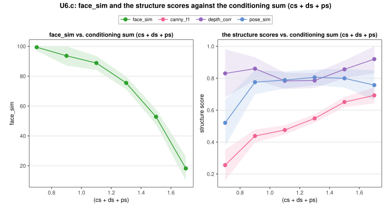
- face_sim: This is the collapse: 11/20 images are under the usable 80 from conditioning sum 1.1 up, and the top step, 1.5 → 1.7, decreases the per-sum mean 52.8 → 18.2.
- canny_f1: Changing the conditioning sum 0.7 → 1.7, canny_f1 increases 0.256 → 0.693.
- depth_corr: Flat from conditioning sum 0.9 with no trend.
- pose_sim: Past its peak at conditioning sum 1.3, pose_sim decreases.
- Together: Only canny_f1 increases across the whole sweep.
- What the next sweep changed: With the collapse located the direction reverses. U6.d removes pose 0.9 and samples canny and depth from 0.05 rather than 0.1, covering the low end the expansion had stepped over.
9.3.3 U6.d — canny and depth at 0.15 steps across their whole range
| Branch | Stage | Sweep Id |
Sweep variables |
Images | Persona | Template | Seed | gs | ls | cs | ds | ps |
|---|---|---|---|---|---|---|---|---|---|---|---|---|
| Union | U6 | U6.d | cs, ds, ps | 31 | pm1 | tm1 | 1 | 6 | 1 | 0.05, 0.2, .. 0.5 | 0.05, 0.2, .. 0.5 | 0.5, 0.7 |
- cs: {0.05, 0.2, 0.35, 0.5}
- ds: {0.05, 0.2, 0.35, 0.5}
- Evidence: Single-seed, one seed per cell; every change is measured against the seed noise borrowed from U6.h.
| factor | value | n | face_sim | canny_f1 | depth_corr | pose_sim |
|---|---|---|---|---|---|---|
| cs | 0.05 | 8 | 90.0 | 0.367 | 0.728 | 0.692 |
| cs | 0.2 | 8 | 89.9 | 0.473 | 0.769 | 0.756 |
| cs | 0.35 | 8 | 84.8 | 0.573 | 0.830 | 0.786 |
| cs | 0.5 | 7 | 76.0 | 0.702 | 0.904 | 0.815 |
| ds | 0.05 | 8 | 93.5 | 0.400 | 0.834 | 0.659 |
| ds | 0.2 | 8 | 91.6 | 0.497 | 0.843 | 0.782 |
| ds | 0.35 | 7 | 88.2 | 0.567 | 0.757 | 0.803 |
| ds | 0.5 | 8 | 68.9 | 0.634 | 0.778 | 0.804 |
| ps | 0.5 | 16 | 91.6 | 0.533 | 0.813 | 0.731 |
| ps | 0.7 | 15 | 78.9 | 0.513 | 0.795 | 0.792 |
| conditioning sum | n | face_sim | canny_f1 | depth_corr | pose_sim |
|---|---|---|---|---|---|
| 0.6 | 1 | 99.2 | 0.124 | 0.633 | 0.048 |
| 0.75 | 2 | 98.3 | 0.320 | 0.856 | 0.630 |
| 0.8 | 1 | 81.2 | 0.288 | 0.764 | 0.773 |
| 0.9 | 3 | 98.1 | 0.465 | 0.842 | 0.763 |
| 0.95 | 2 | 84.0 | 0.388 | 0.781 | 0.798 |
| 1.05 | 4 | 95.9 | 0.539 | 0.825 | 0.781 |
| 1.1 | 3 | 93.1 | 0.426 | 0.776 | 0.783 |
| 1.2 | 3 | 89.8 | 0.621 | 0.786 | 0.826 |
| 1.25 | 4 | 87.5 | 0.508 | 0.767 | 0.796 |
| 1.35 | 2 | 81.1 | 0.768 | 0.779 | 0.822 |
| 1.4 | 3 | 74.8 | 0.621 | 0.796 | 0.815 |
| 1.5 | 1 | 61.1 | 0.817 | 0.926 | 0.857 |
| 1.55 | 1 | 55.0 | 0.699 | 0.898 | 0.761 |
| 1.7 | 1 | 25.6 | 0.755 | 0.918 | 0.766 |
9.3.3.1 Conditioning sum
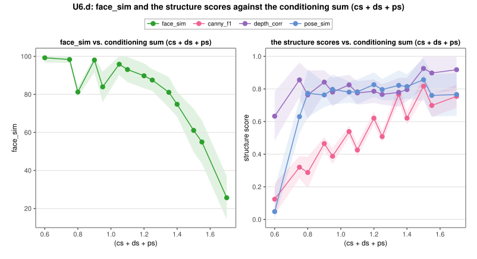
- face_sim: Every image < 80 is at a conditioning sum ≥ 0.95.
- canny_f1: Changing the conditioning sum 0.6 → 1.7, canny_f1 increases 0.124 → 0.755, the per-sum means zigzagging past 1.2.
- depth_corr: Changing the conditioning sum 0.6 → 1.5, depth_corr increases, decreases and increases again, so there is no trend.
- pose_sim: Changing the conditioning sum 0.6 → 0.9, pose_sim increases 0.048 → 0.763; past 0.9 it changes.
9.3.3.2 The structure scores against face_sim, as the conditioning sum increases
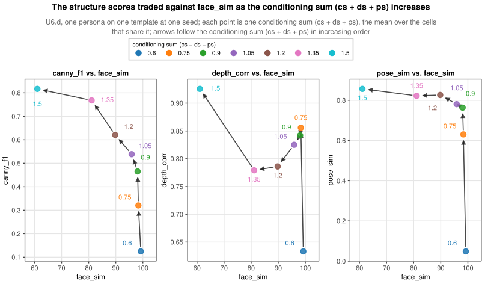
- What the next sweep changed: At the higher conditioning sums identity is lost for little structure, so U6.e trims the scales on the high side, samples them more finely, and adds a second template.
9.3.4 U6.e — the finest canny and depth sampling, and a second template
| Branch | Stage | Sweep Id |
Sweep variables |
Images | Persona | Template | Seed | gs | ls | cs | ds | ps |
|---|---|---|---|---|---|---|---|---|---|---|---|---|
| Union | U6 | U6.e | tm, cs, ds, ps | 88 | pm1 | tm1–tm2 | 1 | 6 | 1 | 0.05, 0.15, .. 0.35 | 0.05, 0.15, .. 0.35 | 0.5, 0.6, 0.7 |
- cs: {0.05, 0.15, 0.25, 0.35}
- ds: {0.05, 0.15, 0.25, 0.35}
- Evidence: Single-seed, one seed per cell; every change is measured against the seed noise borrowed from U6.h.
| factor | value | n | face_sim | canny_f1 | depth_corr | pose_sim |
|---|---|---|---|---|---|---|
| cs | 0.05 | 24 | 95.9 | 0.329 | 0.763 | 0.594 |
| cs | 0.15 | 24 | 95.5 | 0.394 | 0.806 | 0.650 |
| cs | 0.25 | 20 | 93.3 | 0.457 | 0.829 | 0.713 |
| cs | 0.35 | 20 | 80.8 | 0.542 | 0.876 | 0.757 |
| ds | 0.05 | 22 | 97.0 | 0.342 | 0.795 | 0.581 |
| ds | 0.15 | 22 | 95.4 | 0.396 | 0.822 | 0.651 |
| ds | 0.25 | 22 | 92.3 | 0.457 | 0.821 | 0.706 |
| ds | 0.35 | 22 | 82.2 | 0.503 | 0.823 | 0.756 |
| ps | 0.5 | 32 | 94.3 | 0.413 | 0.798 | 0.603 |
| ps | 0.6 | 32 | 90.3 | 0.442 | 0.840 | 0.701 |
| ps | 0.7 | 24 | 90.2 | 0.417 | 0.804 | 0.731 |
| conditioning sum | n | face_sim | canny_f1 | depth_corr | pose_sim |
|---|---|---|---|---|---|
| 0.6 | 2 | 99.4 | 0.146 | 0.590 | 0.074 |
| 0.7 | 6 | 98.8 | 0.263 | 0.808 | 0.427 |
| 0.8 | 12 | 97.7 | 0.321 | 0.712 | 0.615 |
| 0.9 | 18 | 97.1 | 0.403 | 0.836 | 0.682 |
| 1 | 19 | 94.8 | 0.437 | 0.842 | 0.695 |
| 1.1 | 16 | 92.1 | 0.481 | 0.850 | 0.734 |
| 1.2 | 10 | 76.5 | 0.545 | 0.840 | 0.781 |
| 1.3 | 4 | 61.9 | 0.581 | 0.828 | 0.830 |
| 1.4 | 1 | 75.8 | 0.586 | 0.798 | 0.824 |
9.3.4.1 Conditioning sum
- face_sim: The per-sum mean stays high through conditioning sum 1.0 and then decreases away steeply, 92.1 → 61.9 by 1.3; every image < 80 is at a sum ≥ 1.2.
- canny_f1: Changing the conditioning sum 0.6 → 1.4, canny_f1 increases 0.146 → 0.586, clearing its floor from 0.8.
- depth_corr: Changing the conditioning sum 0.6 → 1.1, depth_corr increases 0.590 → 0.850, above its 0.55 floor throughout.
- pose_sim: Changing the conditioning sum 0.6 → 1.3, pose_sim increases 0.074 → 0.830.
- Together: The structure scores clear their floors from 0.8 up, on both templates.
9.3.4.2 The structure scores against face_sim, as the conditioning sum increases
- Best trade-off point: Conditioning sum 0.9. The step into it gains canny_f1 and depth_corr, both resolved, for a face_sim change inside the noise; the step past it, to 1.0, changes every score inside the noise.
- What the next sweep changed: The good trade-off region is around conditioning sum 0.9 and the sum, not the individual scales, is the focus, so U6.f removes the highest canny and depth value and retains U6.e’s images inside a band around that sum.
9.3.5 U6.f — restricted to three conditioning sums
| Branch | Stage | Sweep Id |
Sweep variables |
Images | Persona | Template | Seed | gs | ls | cs | ds | ps |
|---|---|---|---|---|---|---|---|---|---|---|---|---|
| Union | U6 | U6.f | tm, cs, ds, ps | 37 | pm1 | tm1–tm2 | 1 | 6 | 1 | 0.05, 0.15, 0.25 | 0.05, 0.15, 0.25 | 0.5, 0.6, 0.7 |
- Cell selection: The sweep retains the cells whose three scales sum into a band,
0.8 ≤ ps + cs + ds ≤ 1.0, which is 19 of the 27 its values span. - Evidence: Single-seed, one seed per cell; every change is measured against the seed noise borrowed from U6.h.
| factor | value | n | face_sim | canny_f1 | depth_corr | pose_sim |
|---|---|---|---|---|---|---|
| cs | 0.05 | 12 | 94.4 | 0.342 | 0.758 | 0.673 |
| cs | 0.15 | 14 | 96.6 | 0.378 | 0.796 | 0.664 |
| cs | 0.25 | 11 | 98.0 | 0.416 | 0.833 | 0.665 |
| ds | 0.05 | 11 | 96.5 | 0.352 | 0.793 | 0.676 |
| ds | 0.15 | 14 | 96.1 | 0.372 | 0.796 | 0.663 |
| ds | 0.25 | 12 | 96.5 | 0.408 | 0.794 | 0.665 |
| ps | 0.5 | 12 | 98.7 | 0.385 | 0.753 | 0.608 |
| ps | 0.6 | 14 | 98.0 | 0.389 | 0.829 | 0.685 |
| ps | 0.7 | 11 | 91.6 | 0.356 | 0.797 | 0.711 |
| conditioning sum | n | face_sim | canny_f1 | depth_corr | pose_sim |
|---|---|---|---|---|---|
| 0.8 | 12 | 97.7 | 0.321 | 0.712 | 0.615 |
| 0.9 | 14 | 96.8 | 0.391 | 0.836 | 0.688 |
| 1 | 11 | 94.2 | 0.422 | 0.832 | 0.699 |
9.3.5.1 Conditioning sum
- face_sim: Changing the conditioning sum 0.8 → 1.0, the per-sum mean decreases a few points, and no image is under the usable 80.
- Structure scores: Across conditioning sum 0.8 → 0.9 canny_f1 and depth_corr increase and across 0.9 → 1.0 change, so their whole gain is in the first step; pose_sim increases at both steps.
9.3.5.2 The structure scores against face_sim, as the conditioning sum increases
- Best trade-off point: Conditioning sum 0.9. The step into it gains canny_f1 and depth_corr, both resolved, for a face_sim change inside the noise; the step past it, to 1.0, changes every score inside the noise.
- What the next sweep changed: The range is good and the structure scores flatten at its top, so U6.g removes the highest pose value, samples the rest more finely, and expands the template set 2 → 6 to test the range’s robustness.
9.3.6 U6.g — the restricted band carried to all six templates
| Branch | Stage | Sweep Id |
Sweep variables |
Images | Persona | Template | Seed | gs | ls | cs | ds | ps |
|---|---|---|---|---|---|---|---|---|---|---|---|---|
| Union | U6 | U6.g | tm, cs, ds, ps | 66 | pm1 | tm1–tm6 | 1 | 6 | 1 | 0.05, 0.15, 0.25 | 0.05, 0.15, 0.25 | 0.5, 0.55, 0.6 |
- Cell selection:
0.75 ≤ ps + cs + ds ≤ 0.9, 15 of the 27 cells its values span, 11 of them generated: at the top sum only one cell was run. - Evidence: Single-seed, one seed per cell; every change is measured against the seed noise borrowed from U6.h.
| factor | value | n | face_sim | canny_f1 | depth_corr | pose_sim |
|---|---|---|---|---|---|---|
| cs | 0.05 | 24 | 98.7 | 0.299 | 0.624 | 0.511 |
| cs | 0.15 | 24 | 98.5 | 0.303 | 0.593 | 0.493 |
| cs | 0.25 | 18 | 97.3 | 0.361 | 0.647 | 0.593 |
| ds | 0.05 | 24 | 98.5 | 0.319 | 0.598 | 0.502 |
| ds | 0.15 | 30 | 97.9 | 0.318 | 0.636 | 0.545 |
| ds | 0.25 | 12 | 98.6 | 0.312 | 0.619 | 0.523 |
| ps | 0.5 | 24 | 98.1 | 0.329 | 0.640 | 0.560 |
| ps | 0.55 | 30 | 98.5 | 0.315 | 0.618 | 0.519 |
| ps | 0.6 | 12 | 97.9 | 0.301 | 0.581 | 0.479 |
| conditioning sum | n | face_sim | canny_f1 | depth_corr | pose_sim |
|---|---|---|---|---|---|
| 0.75 | 12 | 99.3 | 0.278 | 0.649 | 0.496 |
| 0.8 | 30 | 98.6 | 0.305 | 0.595 | 0.497 |
| 0.85 | 18 | 97.9 | 0.339 | 0.598 | 0.531 |
| 0.9 | 6 | 95.0 | 0.392 | 0.746 | 0.734 |
| template | conditioning sum | n | face_sim | canny_f1 | depth_corr | pose_sim |
|---|---|---|---|---|---|---|
| tm1 | 0.75 | 2 | 99.8 | 0.254 | 0.856 | 0.642 |
| tm1 | 0.8 | 5 | 99.5 | 0.339 | 0.551 | 0.750 |
| tm1 | 0.85 | 3 | 99.1 | 0.400 | 0.590 | 0.836 |
| tm1 | 0.9 | 1 | 98.9 | 0.434 | 0.899 | 0.777 |
| tm2 | 0.75 | 2 | 99.1 | 0.368 | 0.777 | 0.487 |
| tm2 | 0.8 | 5 | 99.4 | 0.297 | 0.683 | 0.367 |
| tm2 | 0.85 | 3 | 99.7 | 0.376 | 0.818 | 0.403 |
| tm2 | 0.9 | 1 | 98.5 | 0.444 | 0.847 | 0.578 |
| tm3 | 0.75 | 2 | 99.1 | 0.271 | 0.337 | 0.211 |
| tm3 | 0.8 | 5 | 98.3 | 0.272 | 0.357 | 0.200 |
| tm3 | 0.85 | 3 | 97.1 | 0.280 | 0.258 | 0.203 |
| tm3 | 0.9 | 1 | 80.4 | 0.461 | 0.713 | 0.759 |
| tm4 | 0.75 | 2 | 99.9 | 0.206 | 0.755 | 0.598 |
| tm4 | 0.8 | 5 | 99.9 | 0.284 | 0.688 | 0.656 |
| tm4 | 0.85 | 3 | 99.9 | 0.316 | 0.698 | 0.684 |
| tm4 | 0.9 | 1 | 99.9 | 0.260 | 0.819 | 0.766 |
| tm5 | 0.75 | 2 | 99.3 | 0.263 | 0.361 | — |
| tm5 | 0.8 | 5 | 98.5 | 0.270 | 0.459 | 0.197 |
| tm5 | 0.85 | 3 | 96.6 | 0.265 | 0.396 | 0.264 |
| tm5 | 0.9 | 1 | 97.9 | 0.284 | 0.376 | — |
| tm6 | 0.75 | 2 | 98.8 | 0.306 | 0.805 | 0.541 |
| tm6 | 0.8 | 5 | 96.3 | 0.370 | 0.830 | 0.749 |
| tm6 | 0.85 | 3 | 95.2 | 0.399 | 0.826 | 0.799 |
| tm6 | 0.9 | 1 | 94.5 | 0.466 | 0.821 | 0.790 |
9.3.6.1 Conditioning sum: per template
- face_sim: Changing the conditioning sum 0.75 → 0.90, the per-sum mean decreases a few points; no image on any template is under the usable 80.
- Structure scores: Over the same range canny_f1 increases at every step, while depth_corr and pose_sim change inside the noise until the last step and then increase, the last depth_corr step the one resolved change and its end-to-end change not; the band transfers, every template higher at the top sum.
9.3.6.2 The structure scores against face_sim, as the conditioning sum increases
- Best trade-off point: Conditioning sum 0.85. The step into it changes every score inside the noise; the step past it, to 0.90, gains depth_corr and pose_sim, both resolved, for an unresolved identity loss; 0.90 depends on one generated cell of six images, so 0.80–0.85 is the range carried to U6.h.
- What the next sweep changed: The template robustness test is passed, so U6.h retains the same scales and templates, adds two seeds to the cells already generated, and restricts the band to 0.80–0.85.
10 Appendix: the control-LoRA branch, sweep by sweep
10.1 The C1 stage: Comparing Union-Pro ControlNet and control-LoRA implementations
10.1.1 C1.b — seven personas at high canny: structure improves without identity collapse
| Branch | Stage | Sweep Id |
Sweep variables |
Images | Persona | Template | Seed | gs | ls | cs | ds | ps |
|---|---|---|---|---|---|---|---|---|---|---|---|---|
| control-LoRA | C1 | C1.b | pf, tf, s, cs | 525 | pf1–pf5 pf7–pf8 |
tf1–tf5 | 1, 2, 3 | 10 | 1 | 0.7, 0.75, .. 0.9 | — | — |
- cs: {0.7, 0.75, 0.8, 0.85, 0.9}
- Evidence: Replicated, 3 seeds per cell.
| factor | value | n | face_sim | canny_f1 | depth_corr | pose_sim |
|---|---|---|---|---|---|---|
| cs | 0.7 | 105 | 89.8 | 0.585 | 0.782 | 0.330 |
| cs | 0.75 | 105 | 82.3 | 0.679 | 0.830 | 0.508 |
| cs | 0.8 | 105 | 80.0 | 0.743 | 0.899 | 0.689 |
| cs | 0.85 | 105 | 79.3 | 0.773 | 0.920 | 0.755 |
| cs | 0.9 | 105 | 81.6 | 0.791 | 0.928 | 0.770 |
| persona | cs | n | face_sim | canny_f1 | depth_corr | pose_sim |
|---|---|---|---|---|---|---|
| pf1 | 0.7 | 15 | 95.5 | 0.573 | 0.786 | 0.344 |
| pf1 | 0.75 | 15 | 88.9 | 0.661 | 0.830 | 0.470 |
| pf1 | 0.8 | 15 | 89.6 | 0.750 | 0.895 | 0.696 |
| pf1 | 0.85 | 15 | 93.0 | 0.785 | 0.920 | 0.759 |
| pf1 | 0.9 | 15 | 93.0 | 0.797 | 0.919 | 0.769 |
| pf2 | 0.7 | 15 | 92.6 | 0.611 | 0.762 | 0.296 |
| pf2 | 0.75 | 15 | 91.4 | 0.698 | 0.826 | 0.520 |
| pf2 | 0.8 | 15 | 97.7 | 0.743 | 0.914 | 0.702 |
| pf2 | 0.85 | 15 | 97.0 | 0.763 | 0.920 | 0.747 |
| pf2 | 0.9 | 15 | 96.9 | 0.779 | 0.935 | 0.777 |
| pf3 | 0.7 | 15 | 88.8 | 0.608 | 0.772 | 0.353 |
| pf3 | 0.75 | 15 | 83.4 | 0.700 | 0.825 | 0.551 |
| pf3 | 0.8 | 15 | 85.2 | 0.751 | 0.896 | 0.694 |
| pf3 | 0.85 | 15 | 87.9 | 0.781 | 0.920 | 0.753 |
| pf3 | 0.9 | 15 | 88.6 | 0.796 | 0.924 | 0.736 |
| pf4 | 0.7 | 15 | 90.4 | 0.564 | 0.785 | 0.287 |
| pf4 | 0.75 | 15 | 76.6 | 0.684 | 0.847 | 0.553 |
| pf4 | 0.8 | 15 | 74.1 | 0.743 | 0.894 | 0.694 |
| pf4 | 0.85 | 15 | 74.6 | 0.775 | 0.915 | 0.763 |
| pf4 | 0.9 | 15 | 80.3 | 0.797 | 0.919 | 0.791 |
| pf5 | 0.7 | 15 | 92.2 | 0.593 | 0.804 | 0.353 |
| pf5 | 0.75 | 15 | 89.3 | 0.684 | 0.840 | 0.477 |
| pf5 | 0.8 | 15 | 86.7 | 0.751 | 0.901 | 0.665 |
| pf5 | 0.85 | 15 | 77.5 | 0.775 | 0.917 | 0.708 |
| pf5 | 0.9 | 15 | 83.8 | 0.795 | 0.940 | 0.765 |
| pf7 | 0.7 | 15 | 88.0 | 0.573 | 0.809 | 0.355 |
| pf7 | 0.75 | 15 | 77.7 | 0.661 | 0.835 | 0.524 |
| pf7 | 0.8 | 15 | 64.1 | 0.728 | 0.894 | 0.636 |
| pf7 | 0.85 | 15 | 64.6 | 0.765 | 0.929 | 0.774 |
| pf7 | 0.9 | 15 | 66.5 | 0.786 | 0.930 | 0.784 |
| pf8 | 0.7 | 15 | 81.0 | 0.572 | 0.755 | 0.321 |
| pf8 | 0.75 | 15 | 68.9 | 0.665 | 0.809 | 0.463 |
| pf8 | 0.8 | 15 | 62.8 | 0.738 | 0.896 | 0.733 |
| pf8 | 0.85 | 15 | 60.6 | 0.768 | 0.922 | 0.776 |
| pf8 | 0.9 | 15 | 62.5 | 0.789 | 0.928 | 0.771 |
| template | cs | n | face_sim | canny_f1 | depth_corr | pose_sim |
|---|---|---|---|---|---|---|
| tf1 | 0.7 | 21 | 97.0 | 0.533 | 0.605 | 0.001 |
| tf1 | 0.75 | 21 | 94.5 | 0.602 | 0.633 | 0.042 |
| tf1 | 0.8 | 21 | 89.6 | 0.728 | 0.853 | 0.525 |
| tf1 | 0.85 | 21 | 85.3 | 0.787 | 0.924 | 0.781 |
| tf1 | 0.9 | 21 | 90.6 | 0.818 | 0.942 | 0.845 |
| tf2 | 0.7 | 21 | 88.0 | 0.608 | 0.816 | 0.065 |
| tf2 | 0.75 | 21 | 65.0 | 0.690 | 0.855 | 0.299 |
| tf2 | 0.8 | 21 | 62.5 | 0.717 | 0.883 | 0.518 |
| tf2 | 0.85 | 21 | 60.9 | 0.736 | 0.897 | 0.575 |
| tf2 | 0.9 | 21 | 67.4 | 0.752 | 0.903 | 0.602 |
| tf3 | 0.7 | 21 | 97.4 | 0.466 | 0.698 | 0.185 |
| tf3 | 0.75 | 21 | 89.2 | 0.638 | 0.808 | 0.670 |
| tf3 | 0.8 | 21 | 88.4 | 0.719 | 0.863 | 0.839 |
| tf3 | 0.85 | 21 | 86.5 | 0.744 | 0.872 | 0.843 |
| tf3 | 0.9 | 21 | 87.1 | 0.757 | 0.881 | 0.820 |
| tf4 | 0.7 | 21 | 81.9 | 0.629 | 0.862 | 0.549 |
| tf4 | 0.75 | 21 | 83.9 | 0.705 | 0.915 | 0.639 |
| tf4 | 0.8 | 21 | 81.7 | 0.745 | 0.942 | 0.664 |
| tf4 | 0.85 | 21 | 83.6 | 0.772 | 0.948 | 0.676 |
| tf4 | 0.9 | 21 | 82.9 | 0.786 | 0.949 | 0.681 |
| tf5 | 0.7 | 21 | 84.6 | 0.688 | 0.928 | 0.850 |
| tf5 | 0.75 | 21 | 78.9 | 0.760 | 0.940 | 0.892 |
| tf5 | 0.8 | 21 | 78.0 | 0.809 | 0.951 | 0.898 |
| tf5 | 0.85 | 21 | 80.3 | 0.826 | 0.962 | 0.898 |
| tf5 | 0.9 | 21 | 80.1 | 0.844 | 0.965 | 0.904 |
10.1.1.1 Canny scale
- The canny trade-off recurs at this implementation’s own scales, and the mean identity does not collapse: Changing the canny scale 0.70 → 0.90, each of the structure scores increases while face_sim decreases moderately to the usable line and then recovers slightly, a fraction of what the Union branch’s canny-only ladder loses across its own range.
- The increase saturates, as in C1.a past its threshold: Every canny scale here is past C1.a’s threshold, and the structure steps shrink from first to last, at every step on canny_f1 and from the second on depth_corr and pose_sim.
10.1.1.2 Canny scale: per persona
- The persona-LoRA decides identity and affects structure little: Changing the canny scale 0.70 → 0.90, face_sim decreases on six of the seven persona-LoRAs while all seven increase on the structure scores. At the top they are spread over a third of the face_sim scale and within two hundredths of each other on canny_f1.
10.1.1.3 Canny scale: per template
- The template decides how much structure is reachable: Changing the canny scale 0.70 → 0.90, face_sim decreases on four of the five templates while all five increase on the structure scores. At the top the templates are five times further apart on pose_sim than the persona-LoRAs are.
10.1.1.4 The structure scores against face_sim, as the canny scale increases
- Only the first step has a measurable trade: Across cs 0.70 → 0.75 the identity change returns 0.013 canny_f1/face_sim and 0.024 pose_sim/face_sim. The next two steps’ face_sim changes quote no return; across 0.85 → 0.90 face_sim increases while canny_f1 and depth_corr continue increasing and pose_sim changes, so that step trades nothing.
11 Appendix: score calibration, item by item
Each quantity of Section 3.7 with its purpose, the data it uses, how it is computed and where it is used.
11.1 Working ranges
| Score | 5th percentile | 95th percentile |
|---|---|---|
| face_sim | 45.4 | 99.8 |
| canny_f1 | 0.201 | 0.834 |
| depth_corr | 0.298 | 0.965 |
| pose_sim | 0.000 | 0.884 |
Purpose: The span the other anchors are compared against.
Data used:
- Sweeps: all twenty-one.
- Images: all 2,716 generated images.
- Scores: all four scores.
- Scored against: face_sim – own reference set, structure scores – own template.
face_sim is 0 for the 14 images whose face the detector cannot find, and pose_sim is empty for the 5 images with no pose.
Computation method: Each score is ranked over all 2,716 study images, the empty pose_sim values left out, and the 5th and 95th percentiles are computed by linear interpolation between neighbouring ranks:
h = (N - 1)\, p
where N is the number of scores and p is 0.05 or 0.95; then, with the scores sorted as x_{(1)} \le \dots \le x_{(N)} and \lfloor h \rfloor the integer part of h,
x_p = x_{(\lfloor h \rfloor + 1)} + \left(h - \lfloor h \rfloor\right)\left(x_{(\lfloor h \rfloor + 2)} - x_{(\lfloor h \rfloor + 1)}\right) \tag{4}
Place of use: The blue band of Figure 1.
11.2 Seed noise
11.2.1 sd_seed: estimated multi-seed noise of a score at one conditioning value
Purpose: The benchmark every later difference is measured against.
Data used:
- Sweeps: all multi-seed sweeps.
- Images: every image of these sweeps.
- Configurations: persona, template, seed, gs, ls, cs, ds and ps.
- Scores: all four scores.
- Scored against: face_sim – own reference set, structure scores – own template.
Computation method: The images are grouped by persona, template and the value of every scale into the sets of images that differ only by seed, the seed groups. Inside each seed group, the sd of a score across its seeds:
\bar{x}_g = \frac{1}{n_g} \sum_{i=1}^{n_g} x_{g,i}
s_g = \sqrt{\frac{1}{n_g - 1} \sum_{i=1}^{n_g} \left(x_{g,i} - \bar{x}_g\right)^2}
where x_{g,i} is the score of the image seed group g produced at its i-th seed, n_g is the number of seeds in the group and \bar{x}_g their mean. Then, at each conditioning value, the root-mean-square of that sd over the seed groups that share the value, the pooled sd:
\text{sd}_{\text{seed}}(c) = \sqrt{\frac{1}{G_c} \sum_{g \in \mathcal{G}_c} s_g^2} \tag{5}
where \mathcal{G}_c is the set of seed groups whose configuration has the conditioning value c and G_c their number (Figure 61): one number per sweep, score and conditioning value.
Place of use: The seed charts of U2.a and U2.b show two sd_seed either side of the mean; single-seed charts shade one sd_mean, and every single-seed change is compared against sd_mean.
11.2.2 sd_mean: the seed noise a single-seed sweep’s mean score at one conditioning value is measured against
Purpose: A single-seed sweep has no sd_seed of its own, so it borrows one to judge its differences against.
Data used:
- Sweeps: all single-seed sweeps.
- Images: every image of these sweeps.
- Configurations: persona, template, seed, gs, ls, cs, ds and ps.
- Scores: all four scores.
- Scored against: face_sim – own reference set, structure scores – own template.
- Key: the conditioning value c each per-value mean is computed at, cs, cs + ds or cs + ds + ps as per x-axis used in the trade-off charts.
Imported sd_seed: Each score’s sd_seed (Equation 5) at c^{*}, the lender’s measured value closest to the borrower’s c:
- U1.a to U1.e: from U2, the pooled rows of U2.a and U2.b, which generated the same seed group at seeds that overlap at one, seed 6, so the cs 0.40 row pools 20 distinct seeds.
- U4 and U5.b: from U5.a.
- U6.a to U6.g: from U6.h.
Computation method: The imported sd_seed, divided by the square root of the number of images the single-seed mean averages, the sd of that mean:
\text{sd}_{\text{mean}}(c) = \frac{\text{sd}_{\text{seed}}(c^{*})}{\sqrt{n}} \tag{6}
where c is the borrower’s conditioning value, c^{*} the lender’s measured value closest to it and n the number of images in the mean at c.
Place of use: Shaded one sd_mean either side of each mean on every single-seed sweep’s charts, and the inside-the-noise rule (Equation 2) is applied wherever the report quotes a single-seed difference.
11.2.3 ci_mean: the 95% bootstrapped interval of a mean score at one conditioning value
Purpose: To show the variation of a score mean computed over several seeds.
Data used:
- Sweeps: all twenty-one, drawn on the multi-seed sweeps’ charts.
- Images: every image of these sweeps with the conditioning value c.
- Configurations: persona, template, seed, gs, ls, cs, ds and ps.
- Scores: one of the four scores.
- Scored against: face_sim – own reference set, structure scores – own template.
- Key: the value c of the factor the chart’s x axis varies, a conditioning value or gs, ls, persona, template or seed.
Computation method: A bootstrap 95% interval from resampling the seed groups with their images retained together [32]. Let G_c be the number of seed groups whose configuration has the conditioning value c. Take b = 1, \dots, B resamples of G_c of those groups with replacement, g^{*}_{b,1}, \dots, g^{*}_{b,G_c}, and compute the mean over their images:
m_b(c) = \frac{\sum_{k=1}^{G_c} \sum_{i \in g^{*}_{b,k}} x_i}{\sum_{k=1}^{G_c} n_{g^{*}_{b,k}}}
where x_i is the score of image i and n_{g} the number of images in group g. The interval is the 2.5th and 97.5th percentiles of the B resampled means:
\left[\, P_{2.5}(m_1(c), \dots, m_B(c)),\ P_{97.5}(m_1(c), \dots, m_B(c)) \,\right] \tag{7}
with B = 2000 and P_q the q-th percentile, one interval per value. On a sweep with one seed per group, n_g = 1, this is the ordinary bootstrap over images.
Place of use: The per-value charts of multi-seed sweeps draw it as bars around each mean.
11.2.4 ci_return: the 95% interval of the return, the slope on a trade-off chart
Purpose: To say whether a trade between two conditioning values is resolved: a return whose interval spans zero is not.
Data used:
- Sweeps: computed for U1.c, U2.b, U3, U4, U5.a, U6.a to U6.h, C1.a and C1.b; quoted where the face_sim change is resolved, in U1.c, U4, U5.a, C1.a and C1.b.
- Images: every image of these sweeps.
- Configurations: persona, template, seed, gs, ls, cs, ds and ps.
- Scores: all four scores.
- Scored against: face_sim – own reference set, structure scores – own template.
- Key: the conditioning values c_0 and c_1 the return runs between, cs, cs + ds or cs + ds + ps as per x-axis used in the trade-off charts.
Computation method: A return is the slope of a structure score against face_sim on a trade-off chart, between two conditioning values c_0 and c_1, with its sign selected so that a structure score gained as face_sim is lost is positive:
r = \frac{a}{b}, \quad a = -\left(\bar{y}(c_1) - \bar{y}(c_0)\right), \quad b = \bar{f}(c_1) - \bar{f}(c_0) \tag{8}
where \bar{y}(c) is the mean structure score and \bar{f}(c) the mean face_sim at c. The images are grouped into blocks by persona, template and every scale the axis does not set; the blocks are resampled with their images at both values retained together, B = 4000 times [32], and a and b recomputed on each resample. A single-seed sweep has no seed groups, so each per-value mean is resampled from a normal distribution centred on it with sd its sd_mean, B = 4000 times. The resamples give variances s_a^2, s_b^2 and covariance s_{ab}, and the interval is Fieller’s [33] for a ratio of two means:
g = \frac{z^2 s_b^2}{b^2}
\frac{1}{1 - g} \left[\, r - \frac{g\, s_{ab}}{s_b^2} \pm \frac{z}{|b|} \sqrt{s_a^2 - 2 r\, s_{ab} + r^2 s_b^2 - g \left(s_a^2 - \frac{s_{ab}^2}{s_b^2}\right)} \,\right] \tag{9}
with z = 1.96. When g \geq 1, that is when b is within z standard errors of zero, the interval is unbounded. A return is quoted only where the interval of its denominator b, the 2.5th and 97.5th percentiles of its resampled values, excludes zero.
Place of use: A return is quoted in the text only where its interval excludes zero.
11.3 Ceilings and floors
11.3.1 Identity
11.3.1.1 Floor
Purpose: The score an impostor reaches: the bottom of the measurable range, where a different person’s reference photograph can score.
Data used:
- Images: the 54 reference photographs, six per persona, 48 of them distinct since pf6 and pf8 share one reference set.
- Scores: face_sim.
- Scored against: each of the eight other personas’ reference sets, pf6 and pf8 excluded from each other, since they share one reference set.
Computation method: The impostor comparison of biometric evaluation [28]. The impostor score of a reference photograph k against an impostor persona Q is the mean face_sim computed using Q’s reference set S_Q with reference photographs j \in S_Q:
\text{imp}_{k,Q} = \frac{1}{6} \sum_{j \in S_Q} s(k, j) \tag{10}
The floor is the 90th percentile of \text{imp}_{k,Q} over the 420 pairs.
Place of use: The usable 80 is > the floor; the floor lane of Figure 1 and the face_sim row of Table 2.
Result: Mean 2.9, 90th percentile 4.1, the floor, highest 52.2.
11.3.1.2 Ceiling
Purpose: The score a genuine reference photograph reaches: the top of the measurable range, which no generated image can be expected to exceed.
Data used:
- Images: the 54 reference photographs, six per persona, 48 of them distinct since pf6 and pf8 share one reference set.
- Scores: face_sim.
- Scored against: own reference set with the match to itself removed.
Computation method: The genuine comparison of biometric evaluation [28]. For a persona P, its reference set S_P and a reference photograph k \in S_P, the genuine score of k is its mean face_sim against the other five:
\text{gen}_k = \frac{1}{5} \sum_{j \in S_P,\ j \ne k} s(k, j) \tag{11}
The ceiling is the mean of \text{gen}_k.
Place of use: The ceiling marker of Figure 1 and the face_sim row of Table 2; the usable 80 is 19 points short of it. With the floor (Equation 10) it bounds the no-error interval, above every impostor pair and below every genuine reference photograph, on which the usable-line check (Section 7) depends.
Result: Mean 99.3, the ceiling, lowest 87.9; the no-error interval is 52.2 to 87.9.
11.3.2 Structure
11.3.2.1 Floors
Purpose: The first stopping rule: a score under its floor is in the range where an unrelated image can get a similar score, so it has not adhered to the template (Section 5.10).
Data used:
- Templates: the 21 templates.
- Scores: the 3 structure scores.
- Scored against: eight randomly sampled images generated using some other template.
Computation method: For a template T and one of eight randomly sampled generations for it u, the floor of a score is the 90th percentile over such 168 pairs:
\text{floor} = P_{90}\left\{\text{score}(T, u)\right\} \tag{12}
where P_{90} is the percentile by the same linear interpolation as the working ranges (Equation 4).
Place of use: The stopping rule; the U5.b charts draw the floor as a red line and the U6 sweeps test each score against it; Table 2 and Figure 1 carry the values.
Result: The floors are canny_f1 0.277, depth_corr 0.554 and pose_sim 0.156; depth_corr’s is the highest because unrelated generations already correlate, 0.34 on average, most ads sharing a centred-subject layout, which is why it is the weakest discriminator (Section 6.10.3).
11.3.2.2 Ceilings
Purpose: A validity check that structure scoring, the edge, depth and pose extraction and the comparison, adds no noise of its own: a template against itself must score 1.0. Not an achievable target: the achievable ceiling, what the pipeline reaches with the ControlNet and no persona-LoRA, is the control the study lacks (Section 7.8).
Data used:
- Templates: the 21 templates.
- Scores: the 3 structure scores.
- Scored against: the template itself.
Computation method: The template against itself by the same scoring pass:
\text{ceiling} = \text{score}(T, T) \tag{13}
for each template T.
Place of use: The ceiling marker of Figure 1 and the pose_sim span in Section 6.10.
Result: A score of exactly 1.0 for all three on every template.
11.4 Resolvable difference
Purpose: To size the smallest effect a score can resolve at a given seed count.
Data used:
- Sweeps: all multi-seed sweeps.
- Configurations: the conditioning value, 29 in all.
- sd_seed: for four scores at each value.
Computation method: The minimum detectable effect between two cell means at 80% power and a two-sided 5% alpha [34], [35]:
\Delta_{\min} = \left(z_{0.975} + z_{0.80}\right)\ \tilde{\sigma}\ \sqrt{\frac{2}{n}} = 2.80\ \tilde{\sigma}\ \sqrt{\frac{2}{n}} \tag{14}
where z_q is the q-th quantile of the standard normal distribution, n the number of seeds per cell, and \tilde{\sigma} the pooled sd_seed over the 29 conditioning values, the root mean square, the same pooling rule as sd_seed itself (Equation 5):
\tilde{\sigma} = \sqrt{\frac{1}{29} \sum_{c} \text{sd}_{\text{seed}}(c)^2}
Place of use: Section 6.10, where the ten seeds a 0.2 pose_sim effect needs come from it.
11.5 Variance shares
Purpose: To rank which factor changes each score.
Data used:
- Sweeps: all twenty-one, then U5.a and U3 on their own.
- Images: all 2,716 generated images.
- Configurations: branch, persona, template, seed, gs, ls, cs, ds and ps.
- Scores: all four scores.
- Scored against: face_sim – own reference set, structure scores – own template.
Computation method: The increase in R² a factor adds to a one-hot least-squares model of the other factors, the semi-partial R² [36]. For a least-squares fit of one score s on a set of factors, fitted separately for each of the four scores,
R^2_s = 1 - \frac{\text{SSE}_s}{\text{SST}_s}
where \text{SSE}_s is the sum of squared residuals of the fit and \text{SST}_s the sum of squared deviations of the score from its mean; the share of factor f in score s is
Place of use: The U5.a finding (Section 6.5) and the variance subsection of Section 6.10.
11.6 Second identity scorer
Purpose: To show the identity axis does not depend on the one commercial scorer.
Data used:
- Sweeps: all twenty-one.
- Images:
- Generated: the generated images of these sweeps, all 2,716.
- Genuine and impostor: the 54 reference photographs, six per persona, 48 of them distinct since pf6 and pf8 share one reference set.
- Scores: face_sim, and arcface_sim from an ArcFace embedding [37].
- Scored against:
- Generated: own reference set.
- Genuine: own reference set with the match to itself removed.
- Impostor: each of the eight other personas’ reference sets, as in the Floor.
Computation method: The embeddings come from InsightFace’s buffalo_l pack [38], run on CPU. The ArcFace similarity of two images a and b is the cosine similarity of their embeddings \mathbf{e}_a and \mathbf{e}_b:
\text{arcface}(a, b) = \frac{\mathbf{e}_a \cdot \mathbf{e}_b}{\lVert \mathbf{e}_a \rVert\ \lVert \mathbf{e}_b \rVert} \tag{16}
Only the scoring method changes: \text{arcface}(a, b) takes the place of s(a, b), and the rest is the same.
Place of use: Everywhere a face_sim score is used to make a claim.
Result:
Generated images, pairs of conditioning values ordered the same way by both scores, per stage: A pair is ordered the same way when both mean scores put the same value higher; over the twenty sweeps with more than one value, 288 of 315 pairs are (Table 84).
Table 84: Pairs of conditioning values the two identity scores order the same way, per stage. Pairs are formed inside one sweep. Stage Sweeps Pairs ordered the same way Largest face_sim gap among pairs ordered differently U1 5 33 of 40 (83%) 6.4 U2 2 12 of 13 (92%) 0.3 U3 1 6 of 6 (100%) none U4 1 10 of 10 (100%) none U5 1 3 of 3 (100%) none U6 8 196 of 212 (92%) 6.3 C1 2 28 of 31 (90%) 1.6 All 20 288 of 315 (91%) 6.4 Generated images, Spearman rank correlation of face_sim and arcface_sim: Over the 2,690 images for which both scores are available, their Spearman rank correlation is 0.90.
Genuine and impostor, one score at a time: The statistics face_sim already has, computed the same way on arcface_sim, are in Table 85.
| Score | Floor, mean | Floor, 90th percentile | Floor, highest | Ceiling, lowest | Ceiling, mean | No-error interval |
|---|---|---|---|---|---|---|
| face_sim | 2.9 | 4.1 | 52.2 | 87.9 | 99.3 | 52.2 to 87.9 |
| arcface_sim | 0.01 | 0.09 | 0.18 | 0.33 | 0.55 | 0.18 to 0.33 |
How to cite
If you found this useful, please cite as:
@misc{aja2026persona,
title = {FLUX persona-in-template ad generation},
author = {Aja S.},
year = {2026},
url = {https://aja-ekapada.github.io/flux-persona-in-template/}
}